Chaque fiche remplace l’ancien effet de progression par une condition, un rôle et une limite propres. Les objets vanilla servent de références et restent inchangés.
Propositions de design pour Claude. Mécaniques et équilibre à prototyper ; aucune intégration jouable confirmée. 203 visuels Klein conservés ; 68 / 68 pièces exceptionnelles redessinées depuis les références natives FFT avec des silhouettes et palettes distinctes. Recherchez « v2 » pour afficher les nouveaux visuels. Cliquez sur leur image pour l’ouvrir en grand. Les petits sprites des armes équipées et leur intégration en jeu restent à réaliser. L’originalité est examinée sur les tables disponibles, sans prétendre connaître tous les comportements internes du jeu.

Dague de levée
Dagues · CommunSecourir un compagnon au contact.
Effet : La première attaque physique contre un ennemi adjacent à un allié blessé gagne 10 % de dégâts, une fois par bataille.
Limite / contrepartie : Puissance de base réduite de 5 %.
550 gils proposés
Ancien effet, référence et fiche technique
Ancien : Profil de progression : caractéristiques indiquées, sans passif supplémentaire.
Différence : Secourir un compagnon au contact. La première attaque physique contre un ennemi adjacent à un allié blessé gagne 10 % de dégâts, une fois par bataille.
Référence native : Mythril Knife — référence de famille, aucun remplacement.
Caractéristiques proposées : {"Range": 1, "Power": 3, "Evasion": 5}
Acquisition proposée : Nouvelle offre de boutique à partir de chapter_1_2, ajout sans suppression vanilla.
Prix précédent : 250 gils. Prix et progression à tester.
L’effet remplace l’ancien passif proposé. Liaison moteur UNKNOWN. Prototyper un déclenchement dédié préservant la condition, la cible et la contrepartie de cet effet, seulement si ce chemin est validé. Si aucun chemin ne préserve cette identité, exclure ce nouvel objet de la version jouable ; ne pas livrer un clone vanilla. Ne modifier aucun objet existant.
tfj_knife_01 · opening_support
Pointe des haies
Dagues · CommunOuvrir une cible pour l’équipe.
Effet : Après avoir frappé une cible depuis une case de végétation, la prochaine attaque d’un allié sur cette cible gagne 5 % de précision ; marque consommée, expire au prochain tour du porteur.
Limite / contrepartie : Aucun bonus si le terrain ne correspond pas ; pas de cumul de marques.
875 gils proposés
Ancien effet, référence et fiche technique
Ancien : Profil de progression : caractéristiques indiquées, sans passif supplémentaire.
Différence : Ouvrir une cible pour l’équipe. Après avoir frappé une cible depuis une case de végétation, la prochaine attaque d’un allié sur cette cible gagne 5 % de précision ; marque consommée, expire au prochain tour du porteur.
Référence native : Blind Knife — référence de famille, aucun remplacement.
Caractéristiques proposées : {"Range": 1, "Power": 2, "Evasion": 5}
Acquisition proposée : Nouvelle offre de boutique à partir de chapter_1_2, ajout sans suppression vanilla.
Prix précédent : 250 gils. Prix et progression à tester.
L’effet remplace l’ancien passif proposé. Liaison moteur UNKNOWN. Prototyper un déclenchement dédié préservant la condition, la cible et la contrepartie de cet effet, seulement si ce chemin est validé. Si aucun chemin ne préserve cette identité, exclure ce nouvel objet de la version jouable ; ne pas livrer un clone vanilla. Ne modifier aucun objet existant.
tfj_knife_02 · thicket_followup
Poignard du guetteur
Dagues · CommunPunir un agresseur sans augmenter les dégâts.
Effet : Frapper un ennemi qui a attaqué le porteur depuis son dernier tour rend 3 MP au porteur, une fois par tour.
Limite / contrepartie : Aucun gain sur riposte, attaque gratuite ou allié.
1 650 gils proposés
Ancien effet, référence et fiche technique
Ancien : Profil de progression : caractéristiques indiquées, sans passif supplémentaire.
Différence : Punir un agresseur sans augmenter les dégâts. Frapper un ennemi qui a attaqué le porteur depuis son dernier tour rend 3 MP au porteur, une fois par tour.
Référence native : Mage Masher — référence de famille, aucun remplacement.
Caractéristiques proposées : {"Range": 1, "Power": 3, "Evasion": 5}
Acquisition proposée : Nouvelle offre de boutique à partir de chapter_1_2, ajout sans suppression vanilla.
Prix précédent : 250 gils. Prix et progression à tester.
L’effet remplace l’ancien passif proposé. Liaison moteur UNKNOWN. Prototyper un déclenchement dédié préservant la condition, la cible et la contrepartie de cet effet, seulement si ce chemin est validé. Si aucun chemin ne préserve cette identité, exclure ce nouvel objet de la version jouable ; ne pas livrer un clone vanilla. Ne modifier aucun objet existant.
tfj_knife_03 · watcher_repeat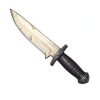
Croc de saumure
Dagues · Peu communÉchanger une pression durable contre un impact immédiat.
Effet : Contre une cible déjà empoisonnée, consomme son Poison et ajoute 15 % de dégâts à cette attaque normale.
Limite / contrepartie : Retire aussi le Poison bénéfique à l’équipe ; une seule cible.
1 800 gils proposés
Ancien effet, référence et fiche technique
Ancien : Profil de progression : caractéristiques indiquées, sans passif supplémentaire.
Différence : Échanger une pression durable contre un impact immédiat. Contre une cible déjà empoisonnée, consomme son Poison et ajoute 15 % de dégâts à cette attaque normale.
Référence native : Mage Masher — référence de famille, aucun remplacement.
Caractéristiques proposées : {"Range": 1, "Power": 3, "Evasion": 5}
Acquisition proposée : Nouvelle offre de boutique à partir de chapter_2_3, ajout sans suppression vanilla.
Prix précédent : 1800 gils. Prix et progression à tester.
L’effet remplace l’ancien passif proposé. Liaison moteur UNKNOWN. Prototyper un déclenchement dédié préservant la condition, la cible et la contrepartie de cet effet, seulement si ce chemin est validé. Si aucun chemin ne préserve cette identité, exclure ce nouvel objet de la version jouable ; ne pas livrer un clone vanilla. Ne modifier aucun objet existant.
tfj_knife_04 · brine_exchange
Miséricorde grise
Dagues · Peu communCapture et contrôle plutôt qu’exécution.
Effet : Une attaque normale sur une cible à moins de 15 % de PV est plafonnée pour lui laisser au moins 1 PV ; elle reçoit une marque donnant +10 % de précision à la prochaine action de contrôle alliée.
Limite / contrepartie : Ne permet pas de porter le coup final avec cette attaque.
2 150 gils proposés
Ancien effet, référence et fiche technique
Ancien : Profil de progression : caractéristiques indiquées, sans passif supplémentaire.
Différence : Capture et contrôle plutôt qu’exécution. Une attaque normale sur une cible à moins de 15 % de PV est plafonnée pour lui laisser au moins 1 PV ; elle reçoit une marque donnant +10 % de précision à la prochaine action de contrôle alliée.
Référence native : Platinum Dagger — référence de famille, aucun remplacement.
Caractéristiques proposées : {"Range": 1, "Power": 3, "Evasion": 10}
Acquisition proposée : Nouvelle offre de boutique à partir de chapter_2_3, ajout sans suppression vanilla.
Prix précédent : 3600 gils. Prix et progression à tester.
L’effet remplace l’ancien passif proposé. Liaison moteur UNKNOWN. Prototyper un déclenchement dédié préservant la condition, la cible et la contrepartie de cet effet, seulement si ce chemin est validé. Si aucun chemin ne préserve cette identité, exclure ce nouvel objet de la version jouable ; ne pas livrer un clone vanilla. Ne modifier aucun objet existant.
tfj_knife_05 · mercy_hold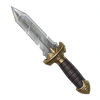
Épine de verrier
Dagues · RarePréparer une attaque magique.
Effet : Le premier coup critique de la bataille révèle les résistances de la cible et lui applique une marque augmentant de 10 % le prochain dégât magique allié ; marque consommée.
Limite / contrepartie : Puissance de base réduite de 10 % ; ne modifie pas les résistances elles-mêmes.
4 050 gils proposés
Ancien effet, référence et fiche technique
Ancien : Profil de progression : caractéristiques indiquées, sans passif supplémentaire.
Différence : Préparer une attaque magique. Le premier coup critique de la bataille révèle les résistances de la cible et lui applique une marque augmentant de 10 % le prochain dégât magique allié ; marque consommée.
Référence native : Main Gauche — référence de famille, aucun remplacement.
Caractéristiques proposées : {"Range": 1, "Power": 5, "Evasion": 40}
Acquisition proposée : Récompense rare optionnelle ; aucun objet vanilla remplacé.
Prix précédent : 17000 gils. Prix et progression à tester.
L’effet remplace l’ancien passif proposé. Liaison moteur UNKNOWN. Prototyper un déclenchement dédié préservant la condition, la cible et la contrepartie de cet effet, seulement si ce chemin est validé. Si aucun chemin ne préserve cette identité, exclure ce nouvel objet de la version jouable ; ne pas livrer un clone vanilla. Ne modifier aucun objet existant.
tfj_knife_06 · glass_edge
Lame du receleur
Dagues · RareSoutenir le voleur de l’équipe.
Effet : Après une attaque normale de dos, une tentative de Vol contre cette cible gagne 10 % de précision avant le prochain tour du porteur.
Limite / contrepartie : Une marque seulement ; ne vole rien automatiquement.
5 400 gils proposés
Ancien effet, référence et fiche technique
Ancien : Profil de progression : caractéristiques indiquées, sans passif supplémentaire.
Différence : Soutenir le voleur de l’équipe. Après une attaque normale de dos, une tentative de Vol contre cette cible gagne 10 % de précision avant le prochain tour du porteur.
Référence native : Orichalcum Dirk — référence de famille, aucun remplacement.
Caractéristiques proposées : {"Range": 1, "Power": 6, "Evasion": 5}
Acquisition proposée : Récompense rare optionnelle ; aucun objet vanilla remplacé.
Prix précédent : 17000 gils. Prix et progression à tester.
L’effet remplace l’ancien passif proposé. Liaison moteur UNKNOWN. Prototyper un déclenchement dédié préservant la condition, la cible et la contrepartie de cet effet, seulement si ce chemin est validé. Si aucun chemin ne préserve cette identité, exclure ce nouvel objet de la version jouable ; ne pas livrer un clone vanilla. Ne modifier aucun objet existant.
tfj_knife_07 · fence_purse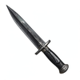
Aiguille de deuil
Dagues · RareRiposte liée à la perte d’un compagnon.
Effet : Quand un allié adjacent tombe KO, la prochaine attaque normale de cette dague sur son agresseur gagne 15 % de dégâts ; expire après un tour du porteur.
Limite / contrepartie : Un seul agresseur mémorisé, un déclenchement par bataille.
6 750 gils proposés
Ancien effet, référence et fiche technique
Ancien : Profil de progression : caractéristiques indiquées, sans passif supplémentaire.
Différence : Riposte liée à la perte d’un compagnon. Quand un allié adjacent tombe KO, la prochaine attaque normale de cette dague sur son agresseur gagne 15 % de dégâts ; expire après un tour du porteur.
Référence native : Assassin's Dagger — référence de famille, aucun remplacement.
Caractéristiques proposées : {"Range": 1, "Power": 5, "Evasion": 5}
Acquisition proposée : Récompense rare optionnelle ; aucun objet vanilla remplacé.
Prix précédent : 17000 gils. Prix et progression à tester.
L’effet remplace l’ancien passif proposé. Liaison moteur UNKNOWN. Prototyper un déclenchement dédié préservant la condition, la cible et la contrepartie de cet effet, seulement si ce chemin est validé. Si aucun chemin ne préserve cette identité, exclure ce nouvel objet de la version jouable ; ne pas livrer un clone vanilla. Ne modifier aucun objet existant.
tfj_knife_08 · mourning_watchÉclaireur qui soutient un lanceur de sorts.
Effet : La première attaque de dos réussie transmet 5 MP à l’allié adjacent ayant le moins de MP et lui retire Aveuglement.
Limite / contrepartie : Aucun effet sans allié éligible ; deux déclenchements par bataille.
Récompense dédiée · hors boutique · non revendable
Ancien effet, référence et fiche technique
Ancien : Affinité vent ; esquive de l’arme renforcée, puissance inférieure à la meilleure dague vanilla.
Différence : Éclaireur qui soutient un lanceur de sorts. La première attaque de dos réussie transmet 5 MP à l’allié adjacent ayant le moins de MP et lui retire Aveuglement.
Référence native : Air Knife — référence de famille, aucun remplacement.
Caractéristiques proposées : {"Range": 1, "Power": 8, "Evasion": 5}
Acquisition proposée : Quête originale « La dette du verrier », étape 1. Retrouver trois lentilles, escorter son apprentie, puis affronter les receleurs sans briser le four central.
Prix précédent : 0 gils. Prix et progression à tester.
L’effet remplace l’ancien passif proposé. Liaison moteur UNKNOWN. Prototyper un déclenchement dédié préservant la condition, la cible et la contrepartie de cet effet, seulement si ce chemin est validé. Si aucun chemin ne préserve cette identité, exclure ce nouvel objet de la version jouable ; ne pas livrer un clone vanilla. Ne modifier aucun objet existant.
tfj_knife_09 · lantern_relayDissuader un sort sans empêcher toute action.
Effet : Une frappe de dos marque la cible : sa prochaine tentative de sort payé coûte 20 % de MP en plus, puis la marque disparaît ; expire au prochain tour du porteur.
Limite / contrepartie : Une fois par bataille ; pas de Silence ni de surcoût de PV.
Récompense dédiée · hors boutique · non revendable
Ancien effet, référence et fiche technique
Ancien : Un coup dans le dos applique Silence avec 15 % de chance ; aucune attaque gratuite.
Différence : Dissuader un sort sans empêcher toute action. Une frappe de dos marque la cible : sa prochaine tentative de sort payé coûte 20 % de MP en plus, puis la marque disparaît ; expire au prochain tour du porteur.
Référence native : Air Knife — référence de famille, aucun remplacement.
Caractéristiques proposées : {"Range": 1, "Power": 7, "Evasion": 5}
Acquisition proposée : Quête originale « La dette du verrier », étape 2. Retrouver trois lentilles, escorter son apprentie, puis affronter les receleurs sans briser le four central.
Prix précédent : 0 gils. Prix et progression à tester.
L’effet remplace l’ancien passif proposé. Liaison moteur UNKNOWN. Prototyper un déclenchement dédié préservant la condition, la cible et la contrepartie de cet effet, seulement si ce chemin est validé. Si aucun chemin ne préserve cette identité, exclure ce nouvel objet de la version jouable ; ne pas livrer un clone vanilla. Ne modifier aucun objet existant.
tfj_knife_10 · last_confession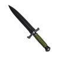
Lame de ronce
Lames ninja · CommunFrappe suivie d’un repli.
Effet : Toucher puis quitter l’adjacence de cette cible pendant le même tour donne +8 esquive physique contre elle jusqu’au prochain tour du porteur.
Limite / contrepartie : Pas d’effet si le porteur reste au contact.
5 500 gils proposés
Ancien effet, référence et fiche technique
Ancien : Profil de progression : caractéristiques indiquées, sans passif supplémentaire.
Différence : Frappe suivie d’un repli. Toucher puis quitter l’adjacence de cette cible pendant le même tour donne +8 esquive physique contre elle jusqu’au prochain tour du porteur.
Référence native : Kunai — référence de famille, aucun remplacement.
Caractéristiques proposées : {"Range": 1, "Power": 8, "Evasion": 5}
Acquisition proposée : Nouvelle offre de boutique à partir de chapter_1_2, ajout sans suppression vanilla.
Prix précédent : 250 gils. Prix et progression à tester.
L’effet remplace l’ancien passif proposé. Liaison moteur UNKNOWN. Prototyper un déclenchement dédié préservant la condition, la cible et la contrepartie de cet effet, seulement si ce chemin est validé. Si aucun chemin ne préserve cette identité, exclure ce nouvel objet de la version jouable ; ne pas livrer un clone vanilla. Ne modifier aucun objet existant.
tfj_ninja_blade_01 · thorn_departure
Crochet du roseau
Lames ninja · CommunRattraper une erreur sans attaque supplémentaire.
Effet : Une attaque normale qui manque réserve +10 % de précision à la prochaine attaque normale contre la même cible ; réserve perdue si le porteur change de cible.
Limite / contrepartie : Un seul échec mémorisé ; bonus consommé même en cas de nouvel échec.
7 700 gils proposés
Ancien effet, référence et fiche technique
Ancien : Profil de progression : caractéristiques indiquées, sans passif supplémentaire.
Différence : Rattraper une erreur sans attaque supplémentaire. Une attaque normale qui manque réserve +10 % de précision à la prochaine attaque normale contre la même cible ; réserve perdue si le porteur change de cible.
Référence native : Kodachi — référence de famille, aucun remplacement.
Caractéristiques proposées : {"Range": 1, "Power": 8, "Evasion": 5}
Acquisition proposée : Nouvelle offre de boutique à partir de chapter_1_2, ajout sans suppression vanilla.
Prix précédent : 250 gils. Prix et progression à tester.
L’effet remplace l’ancien passif proposé. Liaison moteur UNKNOWN. Prototyper un déclenchement dédié préservant la condition, la cible et la contrepartie de cet effet, seulement si ce chemin est validé. Si aucun chemin ne préserve cette identité, exclure ce nouvel objet de la version jouable ; ne pas livrer un clone vanilla. Ne modifier aucun objet existant.
tfj_ninja_blade_02 · reed_hook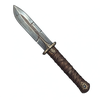
Serre du hibou
Lames ninja · Peu communEmbuscade en hauteur.
Effet : Après avoir terminé un tour sans se déplacer sur une case plus haute que la cible, la prochaine frappe normale sur elle gagne 10 % de dégâts.
Limite / contrepartie : Le bonus est perdu au premier déplacement.
12 000 gils proposés
Ancien effet, référence et fiche technique
Ancien : Profil de progression : caractéristiques indiquées, sans passif supplémentaire.
Différence : Embuscade en hauteur. Après avoir terminé un tour sans se déplacer sur une case plus haute que la cible, la prochaine frappe normale sur elle gagne 10 % de dégâts.
Référence native : Ninja Longblade — référence de famille, aucun remplacement.
Caractéristiques proposées : {"Range": 1, "Power": 11, "Evasion": 5}
Acquisition proposée : Nouvelle offre de boutique à partir de chapter_2_3, ajout sans suppression vanilla.
Prix précédent : 1800 gils. Prix et progression à tester.
L’effet remplace l’ancien passif proposé. Liaison moteur UNKNOWN. Prototyper un déclenchement dédié préservant la condition, la cible et la contrepartie de cet effet, seulement si ce chemin est validé. Si aucun chemin ne préserve cette identité, exclure ce nouvel objet de la version jouable ; ne pas livrer un clone vanilla. Ne modifier aucun objet existant.
tfj_ninja_blade_03 · owl_perch
Ombre de cuivre
Lames ninja · Peu communDétourner l’attention pour un autre combattant.
Effet : Une frappe latérale réussie donne à l’allié derrière la cible +10 esquive contre sa prochaine attaque normale ; protection expire au tour suivant du porteur.
Limite / contrepartie : Nécessite cet alignement ; une protection par tour.
19 200 gils proposés
Ancien effet, référence et fiche technique
Ancien : Profil de progression : caractéristiques indiquées, sans passif supplémentaire.
Différence : Détourner l’attention pour un autre combattant. Une frappe latérale réussie donne à l’allié derrière la cible +10 esquive contre sa prochaine attaque normale ; protection expire au tour suivant du porteur.
Référence native : Spellbinder — référence de famille, aucun remplacement.
Caractéristiques proposées : {"Range": 1, "Power": 11, "Evasion": 5}
Acquisition proposée : Nouvelle offre de boutique à partir de chapter_2_3, ajout sans suppression vanilla.
Prix précédent : 1800 gils. Prix et progression à tester.
L’effet remplace l’ancien passif proposé. Liaison moteur UNKNOWN. Prototyper un déclenchement dédié préservant la condition, la cible et la contrepartie de cet effet, seulement si ce chemin est validé. Si aucun chemin ne préserve cette identité, exclure ce nouvel objet de la version jouable ; ne pas livrer un clone vanilla. Ne modifier aucun objet existant.
tfj_ninja_blade_04 · copper_diversion
Lame des cent pas
Lames ninja · RareMobilité et rotation des cibles.
Effet : Au troisième tour consécutif où le porteur se déplace puis frappe une cible différente, il récupère 8 % de ses PV maximum.
Limite / contrepartie : Compteur annulé s’il répète une cible ou reste immobile ; une récompense par bataille.
50 gils proposés
Ancien effet, référence et fiche technique
Ancien : Profil de progression : caractéristiques indiquées, sans passif supplémentaire.
Différence : Mobilité et rotation des cibles. Au troisième tour consécutif où le porteur se déplace puis frappe une cible différente, il récupère 8 % de ses PV maximum.
Référence native : Sasuke's Blade — référence de famille, aucun remplacement.
Caractéristiques proposées : {"Range": 1, "Power": 11, "Evasion": 15}
Acquisition proposée : Récompense rare optionnelle ; aucun objet vanilla remplacé.
Prix précédent : 17000 gils. Prix et progression à tester.
L’effet remplace l’ancien passif proposé. Liaison moteur UNKNOWN. Prototyper un déclenchement dédié préservant la condition, la cible et la contrepartie de cet effet, seulement si ce chemin est validé. Si aucun chemin ne préserve cette identité, exclure ce nouvel objet de la version jouable ; ne pas livrer un clone vanilla. Ne modifier aucun objet existant.
tfj_ninja_blade_05 · hundred_steps
Murmure violet
Lames ninja · RareFaire durer une préparation collective.
Effet : Frapper une cible sous Silence prolonge uniquement la fenêtre de la prochaine marque d’équipe placée sur elle jusqu’au tour suivant du porteur.
Limite / contrepartie : Une fois par bataille ; ne prolonge pas Silence lui-même.
50 gils proposés
Ancien effet, référence et fiche technique
Ancien : Profil de progression : caractéristiques indiquées, sans passif supplémentaire.
Différence : Faire durer une préparation collective. Frapper une cible sous Silence prolonge uniquement la fenêtre de la prochaine marque d’équipe placée sur elle jusqu’au tour suivant du porteur.
Référence native : Iga Blade — référence de famille, aucun remplacement.
Caractéristiques proposées : {"Range": 1, "Power": 13, "Evasion": 10}
Acquisition proposée : Récompense rare optionnelle ; aucun objet vanilla remplacé.
Prix précédent : 17000 gils. Prix et progression à tester.
L’effet remplace l’ancien passif proposé. Liaison moteur UNKNOWN. Prototyper un déclenchement dédié préservant la condition, la cible et la contrepartie de cet effet, seulement si ce chemin est validé. Si aucun chemin ne préserve cette identité, exclure ce nouvel objet de la version jouable ; ne pas livrer un clone vanilla. Ne modifier aucun objet existant.
tfj_ninja_blade_06 · violet_hushChanger d’angle pour préparer le terrain.
Effet : La première fois que le porteur attaque depuis un côté différent de sa frappe précédente, il obtient +1 saut pour son prochain déplacement seulement.
Limite / contrepartie : Deux activations par bataille ; n’accorde pas de déplacement supplémentaire.
Récompense dédiée · hors boutique · non revendable
Ancien effet, référence et fiche technique
Ancien : Affinité ombre proposée ; bonus d’esquive modéré, sans bonus de vitesse.
Différence : Changer d’angle pour préparer le terrain. La première fois que le porteur attaque depuis un côté différent de sa frappe précédente, il obtient +1 saut pour son prochain déplacement seulement.
Référence native : Iga Blade — référence de famille, aucun remplacement.
Caractéristiques proposées : {"Range": 1, "Power": 11, "Evasion": 10}
Acquisition proposée : Quête originale « Le chemin sans témoin », étape 1. Suivre les traces, ouvrir le relais et sauver le dernier messager avant sa fuite.
Prix précédent : 0 gils. Prix et progression à tester.
L’effet remplace l’ancien passif proposé. Liaison moteur UNKNOWN. Prototyper un déclenchement dédié préservant la condition, la cible et la contrepartie de cet effet, seulement si ce chemin est validé. Si aucun chemin ne préserve cette identité, exclure ce nouvel objet de la version jouable ; ne pas livrer un clone vanilla. Ne modifier aucun objet existant.
tfj_ninja_blade_07 · igros_twilightRepli ciblé contre les nouveaux équipements réactifs.
Effet : Après une frappe de dos non létale, le porteur ignore les effets d’équipement de réaction de cette seule cible lors de son prochain déplacement.
Limite / contrepartie : Une fois par bataille ; ne désactive pas les compétences de réaction vanilla.
Récompense dédiée · hors boutique · non revendable
Ancien effet, référence et fiche technique
Ancien : Après un déplacement sans attaque, +10 esquive physique jusqu’au début du prochain tour du porteur ; aucune invisibilité permanente.
Différence : Repli ciblé contre les nouveaux équipements réactifs. Après une frappe de dos non létale, le porteur ignore les effets d’équipement de réaction de cette seule cible lors de son prochain déplacement.
Référence native : Iga Blade — référence de famille, aucun remplacement.
Caractéristiques proposées : {"Range": 1, "Power": 11, "Evasion": 10}
Acquisition proposée : Quête originale « Le chemin sans témoin », étape 2. Suivre les traces, ouvrir le relais et sauver le dernier messager avant sa fuite.
Prix précédent : 0 gils. Prix et progression à tester.
L’effet remplace l’ancien passif proposé. Liaison moteur UNKNOWN. Prototyper un déclenchement dédié préservant la condition, la cible et la contrepartie de cet effet, seulement si ce chemin est validé. Si aucun chemin ne préserve cette identité, exclure ce nouvel objet de la version jouable ; ne pas livrer un clone vanilla. Ne modifier aucun objet existant.
tfj_ninja_blade_08 · trace_erasure
Épée de conscrit
Épées · CommunAider un allié à entrer dans le combat.
Effet : Si un allié adjacent n’a encore infligé aucun dégât dans la bataille, la première frappe du porteur lui accorde une réduction fixe de 5 dégâts sur le prochain coup reçu.
Limite / contrepartie : Une seule protection ; minimum 1 dégât reçu.
225 gils proposés
Ancien effet, référence et fiche technique
Ancien : Profil de progression : caractéristiques indiquées, sans passif supplémentaire.
Différence : Aider un allié à entrer dans le combat. Si un allié adjacent n’a encore infligé aucun dégât dans la bataille, la première frappe du porteur lui accorde une réduction fixe de 5 dégâts sur le prochain coup reçu.
Référence native : Broadsword — référence de famille, aucun remplacement.
Caractéristiques proposées : {"Range": 1, "Power": 3, "Evasion": 5}
Acquisition proposée : Nouvelle offre de boutique à partir de chapter_1_2, ajout sans suppression vanilla.
Prix précédent : 250 gils. Prix et progression à tester.
L’effet remplace l’ancien passif proposé. Liaison moteur UNKNOWN. Prototyper un déclenchement dédié préservant la condition, la cible et la contrepartie de cet effet, seulement si ce chemin est validé. Si aucun chemin ne préserve cette identité, exclure ce nouvel objet de la version jouable ; ne pas livrer un clone vanilla. Ne modifier aucun objet existant.
tfj_sword_01 · conscript_cover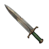
Lame de talus
Épées · CommunGagner un accès en montant.
Effet : Après une frappe normale réussie depuis une case plus basse, le prochain déplacement ascendant du porteur gagne +1 saut.
Limite / contrepartie : Expire au prochain tour ; une activation par tour.
550 gils proposés
Ancien effet, référence et fiche technique
Ancien : Profil de progression : caractéristiques indiquées, sans passif supplémentaire.
Différence : Gagner un accès en montant. Après une frappe normale réussie depuis une case plus basse, le prochain déplacement ascendant du porteur gagne +1 saut.
Référence native : Longsword — référence de famille, aucun remplacement.
Caractéristiques proposées : {"Range": 1, "Power": 3, "Evasion": 10}
Acquisition proposée : Nouvelle offre de boutique à partir de chapter_1_2, ajout sans suppression vanilla.
Prix précédent : 250 gils. Prix et progression à tester.
L’effet remplace l’ancien passif proposé. Liaison moteur UNKNOWN. Prototyper un déclenchement dédié préservant la condition, la cible et la contrepartie de cet effet, seulement si ce chemin est validé. Si aucun chemin ne préserve cette identité, exclure ce nouvel objet de la version jouable ; ne pas livrer un clone vanilla. Ne modifier aucun objet existant.
tfj_sword_02 · embankment_step
Épée des haltes
Épées · CommunRepos volontaire pour préparer un sort.
Effet : Finir un tour sans mouvement ni attaque prépare un crédit de 5 MP pour le prochain sort payé du porteur ; crédit consommé, coût final au moins 1.
Limite / contrepartie : Le crédit disparaît s’il se déplace avant le sort.
550 gils proposés
Ancien effet, référence et fiche technique
Ancien : Profil de progression : caractéristiques indiquées, sans passif supplémentaire.
Différence : Repos volontaire pour préparer un sort. Finir un tour sans mouvement ni attaque prépare un crédit de 5 MP pour le prochain sort payé du porteur ; crédit consommé, coût final au moins 1.
Référence native : Longsword — référence de famille, aucun remplacement.
Caractéristiques proposées : {"Range": 1, "Power": 4, "Evasion": 10}
Acquisition proposée : Nouvelle offre de boutique à partir de chapter_1_2, ajout sans suppression vanilla.
Prix précédent : 250 gils. Prix et progression à tester.
L’effet remplace l’ancien passif proposé. Liaison moteur UNKNOWN. Prototyper un déclenchement dédié préservant la condition, la cible et la contrepartie de cet effet, seulement si ce chemin est validé. Si aucun chemin ne préserve cette identité, exclure ce nouvel objet de la version jouable ; ne pas livrer un clone vanilla. Ne modifier aucun objet existant.
tfj_sword_03 · halt_ration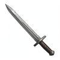
Lame de l'arpenteur
Épées · CommunFormation en colonne.
Effet : Une attaque normale en ligne avec un allié situé exactement deux cases derrière le porteur gagne 8 % de précision.
Limite / contrepartie : Aucun bonus hors de cet alignement.
1 000 gils proposés
Ancien effet, référence et fiche technique
Ancien : Profil de progression : caractéristiques indiquées, sans passif supplémentaire.
Différence : Formation en colonne. Une attaque normale en ligne avec un allié situé exactement deux cases derrière le porteur gagne 8 % de précision.
Référence native : Iron Sword — référence de famille, aucun remplacement.
Caractéristiques proposées : {"Range": 1, "Power": 5, "Evasion": 5}
Acquisition proposée : Nouvelle offre de boutique à partir de chapter_1_2, ajout sans suppression vanilla.
Prix précédent : 250 gils. Prix et progression à tester.
L’effet remplace l’ancien passif proposé. Liaison moteur UNKNOWN. Prototyper un déclenchement dédié préservant la condition, la cible et la contrepartie de cet effet, seulement si ce chemin est validé. Si aucun chemin ne préserve cette identité, exclure ce nouvel objet de la version jouable ; ne pas livrer un clone vanilla. Ne modifier aucun objet existant.
tfj_sword_04 · survey_line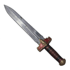
Épée de châtelain
Épées · CommunCoordination d’un encerclement.
Effet : La première frappe contre un ennemi au contact de deux alliés différents réduit de 10 % les dégâts de sa prochaine attaque normale.
Limite / contrepartie : Une fois par bataille ; pas de réduction de sort.
1 750 gils proposés
Ancien effet, référence et fiche technique
Ancien : Profil de progression : caractéristiques indiquées, sans passif supplémentaire.
Différence : Coordination d’un encerclement. La première frappe contre un ennemi au contact de deux alliés différents réduit de 10 % les dégâts de sa prochaine attaque normale.
Référence native : Mythril Sword — référence de famille, aucun remplacement.
Caractéristiques proposées : {"Range": 1, "Power": 5, "Evasion": 8}
Acquisition proposée : Nouvelle offre de boutique à partir de chapter_1_2, ajout sans suppression vanilla.
Prix précédent : 500 gils. Prix et progression à tester.
L’effet remplace l’ancien passif proposé. Liaison moteur UNKNOWN. Prototyper un déclenchement dédié préservant la condition, la cible et la contrepartie de cet effet, seulement si ce chemin est validé. Si aucun chemin ne préserve cette identité, exclure ce nouvel objet de la version jouable ; ne pas livrer un clone vanilla. Ne modifier aucun objet existant.
tfj_sword_05 · castellan_order
Lame du pont
Épées · Peu communRécompenser une prise en tenaille.
Effet : Si le porteur frappe l’ennemi qui sépare deux alliés alignés, chacun de ces alliés reçoit 3 MP, une fois par bataille.
Limite / contrepartie : Nécessite la formation ; aucun soin de PV.
1 925 gils proposés
Ancien effet, référence et fiche technique
Ancien : Profil de progression : caractéristiques indiquées, sans passif supplémentaire.
Différence : Récompenser une prise en tenaille. Si le porteur frappe l’ennemi qui sépare deux alliés alignés, chacun de ces alliés reçoit 3 MP, une fois par bataille.
Référence native : Mythril Sword — référence de famille, aucun remplacement.
Caractéristiques proposées : {"Range": 1, "Power": 6, "Evasion": 8}
Acquisition proposée : Nouvelle offre de boutique à partir de chapter_2_3, ajout sans suppression vanilla.
Prix précédent : 3600 gils. Prix et progression à tester.
L’effet remplace l’ancien passif proposé. Liaison moteur UNKNOWN. Prototyper un déclenchement dédié préservant la condition, la cible et la contrepartie de cet effet, seulement si ce chemin est validé. Si aucun chemin ne préserve cette identité, exclure ce nouvel objet de la version jouable ; ne pas livrer un clone vanilla. Ne modifier aucun objet existant.
tfj_sword_06 · bridge_pair
Épée de grenat
Épées · Peu communRendre une partie du soin au soutien.
Effet : Après avoir reçu un soin direct d’un allié, la prochaine frappe normale rend à ce soigneur 10 % des dégâts infligés en PV, plafond 20 PV.
Limite / contrepartie : Expire au prochain tour du porteur ; pas de vol de vie pour soi.
3 000 gils proposés
Ancien effet, référence et fiche technique
Ancien : Profil de progression : caractéristiques indiquées, sans passif supplémentaire.
Différence : Rendre une partie du soin au soutien. Après avoir reçu un soin direct d’un allié, la prochaine frappe normale rend à ce soigneur 10 % des dégâts infligés en PV, plafond 20 PV.
Référence native : Blood Sword — référence de famille, aucun remplacement.
Caractéristiques proposées : {"Range": 1, "Power": 7, "Evasion": 5}
Acquisition proposée : Nouvelle offre de boutique à partir de chapter_2_3, ajout sans suppression vanilla.
Prix précédent : 3600 gils. Prix et progression à tester.
L’effet remplace l’ancien passif proposé. Liaison moteur UNKNOWN. Prototyper un déclenchement dédié préservant la condition, la cible et la contrepartie de cet effet, seulement si ce chemin est validé. Si aucun chemin ne préserve cette identité, exclure ce nouvel objet de la version jouable ; ne pas livrer un clone vanilla. Ne modifier aucun objet existant.
tfj_sword_07 · garnet_oath
Lame des cendres
Épées · Peu communTransformer un coup subi en préparation offensive.
Effet : La première fois qu’un dégât de Feu touche le porteur, sa prochaine attaque normale physique gagne 12 % de dégâts sans devenir élémentaire.
Limite / contrepartie : Un déclenchement par bataille ; aucun bonus de résistance Feu.
3 950 gils proposés
Ancien effet, référence et fiche technique
Ancien : Profil de progression : caractéristiques indiquées, sans passif supplémentaire.
Différence : Transformer un coup subi en préparation offensive. La première fois qu’un dégât de Feu touche le porteur, sa prochaine attaque normale physique gagne 12 % de dégâts sans devenir élémentaire.
Référence native : Coral Sword — référence de famille, aucun remplacement.
Caractéristiques proposées : {"Range": 1, "Power": 6, "Evasion": 5}
Acquisition proposée : Nouvelle offre de boutique à partir de chapter_2_3, ajout sans suppression vanilla.
Prix précédent : 3600 gils. Prix et progression à tester.
L’effet remplace l’ancien passif proposé. Liaison moteur UNKNOWN. Prototyper un déclenchement dédié préservant la condition, la cible et la contrepartie de cet effet, seulement si ce chemin est validé. Si aucun chemin ne préserve cette identité, exclure ce nouvel objet de la version jouable ; ne pas livrer un clone vanilla. Ne modifier aucun objet existant.
tfj_sword_08 · ash_receipt
Épée de marée
Épées · Peu communChanger de front sans abandonner toute défense.
Effet : Après avoir frappé une cible différente de celle du tour précédent, réduit de 8 % le prochain dégât physique subi depuis cette ancienne cible.
Limite / contrepartie : Une ancienne cible mémorisée ; expire au prochain tour.
3 950 gils proposés
Ancien effet, référence et fiche technique
Ancien : Profil de progression : caractéristiques indiquées, sans passif supplémentaire.
Différence : Changer de front sans abandonner toute défense. Après avoir frappé une cible différente de celle du tour précédent, réduit de 8 % le prochain dégât physique subi depuis cette ancienne cible.
Référence native : Coral Sword — référence de famille, aucun remplacement.
Caractéristiques proposées : {"Range": 1, "Power": 7, "Evasion": 5}
Acquisition proposée : Nouvelle offre de boutique à partir de chapter_2_3, ajout sans suppression vanilla.
Prix précédent : 5400 gils. Prix et progression à tester.
L’effet remplace l’ancien passif proposé. Liaison moteur UNKNOWN. Prototyper un déclenchement dédié préservant la condition, la cible et la contrepartie de cet effet, seulement si ce chemin est validé. Si aucun chemin ne préserve cette identité, exclure ce nouvel objet de la version jouable ; ne pas livrer un clone vanilla. Ne modifier aucun objet existant.
tfj_sword_09 · tide_return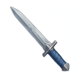
Lame du gel tardif
Épées · Peu communRelier un duel ralenti au secours d’un compagnon ralenti.
Effet : Une frappe normale réussie contre une cible sous Lenteur réserve une réduction de 25 % du prochain sort de soin du porteur vers un allié lui-même sous Lenteur.
Limite / contrepartie : Une fois par bataille ; expire au prochain tour du porteur, coût minimal 1, ne retire pas Lenteur.
6 000 gils proposés
Ancien effet, référence et fiche technique
Ancien : Profil de progression : caractéristiques indiquées, sans passif supplémentaire.
Différence : Relier un duel ralenti au secours d’un compagnon ralenti. Une frappe normale réussie contre une cible sous Lenteur réserve une réduction de 25 % du prochain sort de soin du porteur vers un allié lui-même sous Lenteur.
Référence native : Ancient Sword — référence de famille, aucun remplacement.
Caractéristiques proposées : {"Range": 1, "Power": 8, "Evasion": 5}
Acquisition proposée : Nouvelle offre de boutique à partir de chapter_2_3, ajout sans suppression vanilla.
Prix précédent : 5400 gils. Prix et progression à tester.
L’effet remplace l’ancien passif proposé. Liaison moteur UNKNOWN. Prototyper un déclenchement dédié préservant la condition, la cible et la contrepartie de cet effet, seulement si ce chemin est validé. Si aucun chemin ne préserve cette identité, exclure ce nouvel objet de la version jouable ; ne pas livrer un clone vanilla. Ne modifier aucun objet existant.
tfj_sword_10 · late_frost
Épée de vitrail
Épées · RareAlterner les éléments de l’équipe.
Effet : Une frappe normale prépare sur sa cible un bonus de 8 % pour la prochaine attaque alliée d’un élément différent du dernier élément qu’elle a subi.
Limite / contrepartie : Une seule marque, expire au prochain tour du porteur.
6 750 gils proposés
Ancien effet, référence et fiche technique
Ancien : Profil de progression : caractéristiques indiquées, sans passif supplémentaire.
Différence : Alterner les éléments de l’équipe. Une frappe normale prépare sur sa cible un bonus de 8 % pour la prochaine attaque alliée d’un élément différent du dernier élément qu’elle a subi.
Référence native : Sleep Blade — référence de famille, aucun remplacement.
Caractéristiques proposées : {"Range": 1, "Power": 7, "Evasion": 5}
Acquisition proposée : Récompense rare optionnelle ; aucun objet vanilla remplacé.
Prix précédent : 25500 gils. Prix et progression à tester.
L’effet remplace l’ancien passif proposé. Liaison moteur UNKNOWN. Prototyper un déclenchement dédié préservant la condition, la cible et la contrepartie de cet effet, seulement si ce chemin est validé. Si aucun chemin ne préserve cette identité, exclure ce nouvel objet de la version jouable ; ne pas livrer un clone vanilla. Ne modifier aucun objet existant.
tfj_sword_11 · stained_prism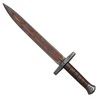
Lame du pénitent
Épées · RareLimiter une erreur de ciblage.
Effet : La première frappe normale qui touche un allié lui rend immédiatement 50 % des dégâts de cette frappe et consomme cet effet pour la bataille.
Limite / contrepartie : Ne soigne jamais plus que les dégâts causés ; pas de déclenchement volontaire répété.
10 800 gils proposés
Ancien effet, référence et fiche technique
Ancien : Profil de progression : caractéristiques indiquées, sans passif supplémentaire.
Différence : Limiter une erreur de ciblage. La première frappe normale qui touche un allié lui rend immédiatement 50 % des dégâts de cette frappe et consomme cet effet pour la bataille.
Référence native : Diamond Sword — référence de famille, aucun remplacement.
Caractéristiques proposées : {"Range": 1, "Power": 9, "Evasion": 10}
Acquisition proposée : Récompense rare optionnelle ; aucun objet vanilla remplacé.
Prix précédent : 25500 gils. Prix et progression à tester.
L’effet remplace l’ancien passif proposé. Liaison moteur UNKNOWN. Prototyper un déclenchement dédié préservant la condition, la cible et la contrepartie de cet effet, seulement si ce chemin est validé. Si aucun chemin ne préserve cette identité, exclure ce nouvel objet de la version jouable ; ne pas livrer un clone vanilla. Ne modifier aucun objet existant.
tfj_sword_12 · penitent_restitution
Épée de l'écuyer perdu
Épées · RarePréparer une relève après une perte.
Effet : Si le porteur est adjacent à un allié KO, une attaque normale réussie lui accorde un crédit de 20 % sur le prochain coût MP d’une action de résurrection.
Limite / contrepartie : Une fois par bataille ; ne réanime personne automatiquement.
10 800 gils proposés
Ancien effet, référence et fiche technique
Ancien : Profil de progression : caractéristiques indiquées, sans passif supplémentaire.
Différence : Préparer une relève après une perte. Si le porteur est adjacent à un allié KO, une attaque normale réussie lui accorde un crédit de 20 % sur le prochain coût MP d’une action de résurrection.
Référence native : Diamond Sword — référence de famille, aucun remplacement.
Caractéristiques proposées : {"Range": 1, "Power": 9, "Evasion": 10}
Acquisition proposée : Récompense rare optionnelle ; aucun objet vanilla remplacé.
Prix précédent : 34000 gils. Prix et progression à tester.
L’effet remplace l’ancien passif proposé. Liaison moteur UNKNOWN. Prototyper un déclenchement dédié préservant la condition, la cible et la contrepartie de cet effet, seulement si ce chemin est validé. Si aucun chemin ne préserve cette identité, exclure ce nouvel objet de la version jouable ; ne pas livrer un clone vanilla. Ne modifier aucun objet existant.
tfj_sword_13 · lost_squire
Lame des trois serments
Épées · RareUn défi de placement avec récompense de rupture.
Effet : Frappes de face, de côté puis de dos sur trois tours consécutifs : la troisième retire Protection à sa seule cible après les dégâts.
Limite / contrepartie : La séquence casse si l’ordre ou la cible d’orientation n’est pas respecté ; une fois par bataille.
50 gils proposés
Ancien effet, référence et fiche technique
Ancien : Profil de progression : caractéristiques indiquées, sans passif supplémentaire.
Différence : Un défi de placement avec récompense de rupture. Frappes de face, de côté puis de dos sur trois tours consécutifs : la troisième retire Protection à sa seule cible après les dégâts.
Référence native : Materia Blade — référence de famille, aucun remplacement.
Caractéristiques proposées : {"Range": 1, "Power": 8, "Evasion": 10}
Acquisition proposée : Récompense rare optionnelle ; aucun objet vanilla remplacé.
Prix précédent : 34000 gils. Prix et progression à tester.
L’effet remplace l’ancien passif proposé. Liaison moteur UNKNOWN. Prototyper un déclenchement dédié préservant la condition, la cible et la contrepartie de cet effet, seulement si ce chemin est validé. Si aucun chemin ne préserve cette identité, exclure ce nouvel objet de la version jouable ; ne pas livrer un clone vanilla. Ne modifier aucun objet existant.
tfj_sword_14 · three_vows
Épée du veilleur rouge
Épées · RareIntervenir après une brûlure alliée.
Effet : La première frappe contre un ennemi qui vient d’infliger un dégât de Feu à un allié rend 15 PV à cet allié.
Limite / contrepartie : Un événement mémorisé ; aucune réaction automatique hors du tour du porteur.
50 gils proposés
Ancien effet, référence et fiche technique
Ancien : Profil de progression : caractéristiques indiquées, sans passif supplémentaire.
Différence : Intervenir après une brûlure alliée. La première frappe contre un ennemi qui vient d’infliger un dégât de Feu à un allié rend 15 PV à cet allié.
Référence native : Materia Blade+ — référence de famille, aucun remplacement.
Caractéristiques proposées : {"Range": 1, "Power": 9, "Evasion": 10}
Acquisition proposée : Récompense rare optionnelle ; aucun objet vanilla remplacé.
Prix précédent : 34000 gils. Prix et progression à tester.
L’effet remplace l’ancien passif proposé. Liaison moteur UNKNOWN. Prototyper un déclenchement dédié préservant la condition, la cible et la contrepartie de cet effet, seulement si ce chemin est validé. Si aucun chemin ne préserve cette identité, exclure ce nouvel objet de la version jouable ; ne pas livrer un clone vanilla. Ne modifier aucun objet existant.
tfj_sword_15 · red_sentinel
Lame des rois sans nom
Épées · RarePression sur l’adversaire le plus dangereux.
Effet : Contre l’ennemi ayant éliminé le plus d’alliés dans cette bataille, une frappe normale applique -10 % au prochain soin de PV qu’il reçoit.
Limite / contrepartie : Une fois par bataille ; ne s’applique pas à une résurrection.
50 gils proposés
Ancien effet, référence et fiche technique
Ancien : Profil de progression : caractéristiques indiquées, sans passif supplémentaire.
Différence : Pression sur l’adversaire le plus dangereux. Contre l’ennemi ayant éliminé le plus d’alliés dans cette bataille, une frappe normale applique -10 % au prochain soin de PV qu’il reçoit.
Référence native : Materia Blade+ — référence de famille, aucun remplacement.
Caractéristiques proposées : {"Range": 1, "Power": 9, "Evasion": 10}
Acquisition proposée : Récompense rare optionnelle ; aucun objet vanilla remplacé.
Prix précédent : 34000 gils. Prix et progression à tester.
L’effet remplace l’ancien passif proposé. Liaison moteur UNKNOWN. Prototyper un déclenchement dédié préservant la condition, la cible et la contrepartie de cet effet, seulement si ce chemin est validé. Si aucun chemin ne préserve cette identité, exclure ce nouvel objet de la version jouable ; ne pas livrer un clone vanilla. Ne modifier aucun objet existant.
tfj_sword_16 · nameless_crownOffensive menée depuis une formation serrée.
Effet : Si trois alliés vivants sont adjacents au porteur, sa première frappe normale réussie distribue 10 PV à chacun et consomme la formation.
Limite / contrepartie : Une fois par bataille ; puissance de base réduite de 15 %.
Récompense dédiée · hors boutique · non revendable
Ancien effet, référence et fiche technique
Ancien : Résistance à Silence ; puissance de fin de progression, sans bonus de vitesse.
Différence : Offensive menée depuis une formation serrée. Si trois alliés vivants sont adjacents au porteur, sa première frappe normale réussie distribue 10 PV à chacun et consomme la formation.
Référence native : Icebrand — référence de famille, aucun remplacement.
Caractéristiques proposées : {"Range": 1, "Power": 10, "Evasion": 10}
Acquisition proposée : Quête originale « Les noms sous la rouille », étape 1. Recueillir quatre sceaux, défendre le copiste et rendre le registre au mémorial.
Prix précédent : 0 gils. Prix et progression à tester.
L’effet remplace l’ancien passif proposé. Liaison moteur UNKNOWN. Prototyper un déclenchement dédié préservant la condition, la cible et la contrepartie de cet effet, seulement si ce chemin est validé. Si aucun chemin ne préserve cette identité, exclure ce nouvel objet de la version jouable ; ne pas livrer un clone vanilla. Ne modifier aucun objet existant.
tfj_sword_17 · gallionne_testamentPréparer le retour d’un compagnon plutôt qu’une vengeance.
Effet : Après le KO d’un allié, peut réserver une frappe normale sur un autre ennemi que son agresseur : le premier soin direct à cet allié après sa résurrection gagne 25 %.
Limite / contrepartie : Un allié mémorisé, une fois par bataille ; ne réanime pas.
Récompense dédiée · hors boutique · non revendable
Ancien effet, référence et fiche technique
Ancien : Les dégâts infligés aux cibles sous Protection gagnent 10 %, sans supprimer leur statut.
Différence : Préparer le retour d’un compagnon plutôt qu’une vengeance. Après le KO d’un allié, peut réserver une frappe normale sur un autre ennemi que son agresseur : le premier soin direct à cet allié après sa résurrection gagne 25 %.
Référence native : Platinum Sword — référence de famille, aucun remplacement.
Caractéristiques proposées : {"Range": 1, "Power": 9, "Evasion": 10}
Acquisition proposée : Quête originale « Les noms sous la rouille », étape 2. Recueillir quatre sceaux, défendre le copiste et rendre le registre au mémorial.
Prix précédent : 0 gils. Prix et progression à tester.
L’effet remplace l’ancien passif proposé. Liaison moteur UNKNOWN. Prototyper un déclenchement dédié préservant la condition, la cible et la contrepartie de cet effet, seulement si ce chemin est validé. Si aucun chemin ne préserve cette identité, exclure ce nouvel objet de la version jouable ; ne pas livrer un clone vanilla. Ne modifier aucun objet existant.
tfj_sword_18 · absent_memory
Grande lame du gué
Épées de chevalier · CommunProtéger une arrière-ligne précise.
Effet : Après une frappe normale de face, réduit de 10 % le premier dégât de mêlée reçu par l’allié situé juste derrière le porteur.
Limite / contrepartie : Expire au prochain tour ; pas d’interception automatique.
44 000 gils proposés
Ancien effet, référence et fiche technique
Ancien : Profil de progression : caractéristiques indiquées, sans passif supplémentaire.
Différence : Protéger une arrière-ligne précise. Après une frappe normale de face, réduit de 10 % le premier dégât de mêlée reçu par l’allié situé juste derrière le porteur.
Référence native : Defender — référence de famille, aucun remplacement.
Caractéristiques proposées : {"Range": 1, "Power": 15, "Evasion": 60}
Acquisition proposée : Nouvelle offre de boutique à partir de chapter_1_2, ajout sans suppression vanilla.
Prix précédent : 250 gils. Prix et progression à tester.
L’effet remplace l’ancien passif proposé. Liaison moteur UNKNOWN. Prototyper un déclenchement dédié préservant la condition, la cible et la contrepartie de cet effet, seulement si ce chemin est validé. Si aucun chemin ne préserve cette identité, exclure ce nouvel objet de la version jouable ; ne pas livrer un clone vanilla. Ne modifier aucun objet existant.
tfj_knight_sword_01 · ford_guard
Épée du connétable
Épées de chevalier · Peu communConvertir un duel défensif en ressource alliée.
Effet : Une frappe réussie sur un adversaire sous Protection retire 5 MP au porteur pour donner 5 MP à un allié adjacent.
Limite / contrepartie : Aucun transfert si le porteur n’a pas 5 MP ; une fois par tour.
50 gils proposés
Ancien effet, référence et fiche technique
Ancien : Profil de progression : caractéristiques indiquées, sans passif supplémentaire.
Différence : Convertir un duel défensif en ressource alliée. Une frappe réussie sur un adversaire sous Protection retire 5 MP au porteur pour donner 5 MP à un allié adjacent.
Référence native : Save the Queen — référence de famille, aucun remplacement.
Caractéristiques proposées : {"Range": 1, "Power": 15, "Evasion": 30}
Acquisition proposée : Nouvelle offre de boutique à partir de chapter_2_3, ajout sans suppression vanilla.
Prix précédent : 1800 gils. Prix et progression à tester.
L’effet remplace l’ancien passif proposé. Liaison moteur UNKNOWN. Prototyper un déclenchement dédié préservant la condition, la cible et la contrepartie de cet effet, seulement si ce chemin est validé. Si aucun chemin ne préserve cette identité, exclure ce nouvel objet de la version jouable ; ne pas livrer un clone vanilla. Ne modifier aucun objet existant.
tfj_knight_sword_02 · constable_balance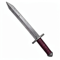
Lame de l'audience
Épées de chevalier · RareMémoriser une alternance adverse.
Effet : Après avoir subi deux éléments différents, la prochaine frappe normale réduit de 15 % le prochain dégât du second élément reçu.
Limite / contrepartie : Une fois par bataille ; aucune immunité élémentaire générale.
50 gils proposés
Ancien effet, référence et fiche technique
Ancien : Profil de progression : caractéristiques indiquées, sans passif supplémentaire.
Différence : Mémoriser une alternance adverse. Après avoir subi deux éléments différents, la prochaine frappe normale réduit de 15 % le prochain dégât du second élément reçu.
Référence native : Excalibur — référence de famille, aucun remplacement.
Caractéristiques proposées : {"Range": 1, "Power": 18, "Evasion": 35}
Acquisition proposée : Récompense rare optionnelle ; aucun objet vanilla remplacé.
Prix précédent : 8500 gils. Prix et progression à tester.
L’effet remplace l’ancien passif proposé. Liaison moteur UNKNOWN. Prototyper un déclenchement dédié préservant la condition, la cible et la contrepartie de cet effet, seulement si ce chemin est validé. Si aucun chemin ne préserve cette identité, exclure ce nouvel objet de la version jouable ; ne pas livrer un clone vanilla. Ne modifier aucun objet existant.
tfj_knight_sword_03 · audience_record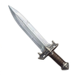
Épée des remparts blancs
Épées de chevalier · RareAncrage qui apporte une petite défense partagée.
Effet : Frapper sans avoir bougé depuis le dernier tour protège le porteur et un allié adjacent contre 8 dégâts physiques chacun sur leur prochain coup.
Limite / contrepartie : Un allié choisi, minimum 1 dégât ; expire au tour suivant.
50 gils proposés
Ancien effet, référence et fiche technique
Ancien : Profil de progression : caractéristiques indiquées, sans passif supplémentaire.
Différence : Ancrage qui apporte une petite défense partagée. Frapper sans avoir bougé depuis le dernier tour protège le porteur et un allié adjacent contre 8 dégâts physiques chacun sur leur prochain coup.
Référence native : Ragnarok — référence de famille, aucun remplacement.
Caractéristiques proposées : {"Range": 1, "Power": 21, "Evasion": 20}
Acquisition proposée : Récompense rare optionnelle ; aucun objet vanilla remplacé.
Prix précédent : 8500 gils. Prix et progression à tester.
L’effet remplace l’ancien passif proposé. Liaison moteur UNKNOWN. Prototyper un déclenchement dédié préservant la condition, la cible et la contrepartie de cet effet, seulement si ce chemin est validé. Si aucun chemin ne préserve cette identité, exclure ce nouvel objet de la version jouable ; ne pas livrer un clone vanilla. Ne modifier aucun objet existant.
tfj_knight_sword_04 · white_rampartTransformer un soutien reçu en soutien différent.
Effet : La première frappe faite après avoir reçu Protection offre à un allié adjacent une réduction de 15 % sur son prochain dégât magique.
Limite / contrepartie : Une fois par bataille ; ne lui confère pas Protection ni Shell.
Récompense dédiée · hors boutique · non revendable
Ancien effet, référence et fiche technique
Ancien : Protection à l’équipement proposée ; puissance réduite de 10 % contre cette défense.
Différence : Transformer un soutien reçu en soutien différent. La première frappe faite après avoir reçu Protection offre à un allié adjacent une réduction de 15 % sur son prochain dégât magique.
Référence native : Chaos Blade — référence de famille, aucun remplacement.
Caractéristiques proposées : {"Range": 1, "Power": 32, "Evasion": 20}
Acquisition proposée : Quête originale « L’audience du trône vide », étape 1. Restaurer les trois serments du lieu puis vaincre l’écuyer dans un duel honorable.
Prix précédent : 0 gils. Prix et progression à tester.
L’effet remplace l’ancien passif proposé. Liaison moteur UNKNOWN. Prototyper un déclenchement dédié préservant la condition, la cible et la contrepartie de cet effet, seulement si ce chemin est validé. Si aucun chemin ne préserve cette identité, exclure ce nouvel objet de la version jouable ; ne pas livrer un clone vanilla. Ne modifier aucun objet existant.
tfj_knight_sword_05 · lesalia_contractReconstruire une formation autour d’un combattant isolé.
Effet : Au premier tour où aucun allié vivant n’est adjacent, une frappe normale réussie crée une réserve de 30 PV : elle soigne le premier allié qui termine ensuite son tour adjacent.
Limite / contrepartie : Une fois par bataille ; réserve perdue si le porteur tombe KO.
Récompense dédiée · hors boutique · non revendable
Ancien effet, référence et fiche technique
Ancien : Réduit de 15 % le premier coup physique reçu par bataille ; pas de résurrection automatique.
Différence : Reconstruire une formation autour d’un combattant isolé. Au premier tour où aucun allié vivant n’est adjacent, une frappe normale réussie crée une réserve de 30 PV : elle soigne le premier allié qui termine ensuite son tour adjacent.
Référence native : Ragnarok — référence de famille, aucun remplacement.
Caractéristiques proposées : {"Range": 1, "Power": 18, "Evasion": 20}
Acquisition proposée : Quête originale « L’audience du trône vide », étape 2. Restaurer les trois serments du lieu puis vaincre l’écuyer dans un duel honorable.
Prix précédent : 0 gils. Prix et progression à tester.
L’effet remplace l’ancien passif proposé. Liaison moteur UNKNOWN. Prototyper un déclenchement dédié préservant la condition, la cible et la contrepartie de cet effet, seulement si ce chemin est validé. Si aucun chemin ne préserve cette identité, exclure ce nouvel objet de la version jouable ; ne pas livrer un clone vanilla. Ne modifier aucun objet existant.
tfj_knight_sword_06 · vacant_throne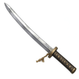
Katana des roseaux
Katanas · CommunPatience et mémoire du duel.
Effet : Attendre un tour sans attaque puis frapper la même cible que deux tours auparavant donne +15 % de précision.
Limite / contrepartie : Réserve perdue en attaquant une autre cible.
3 300 gils proposés
Ancien effet, référence et fiche technique
Ancien : Profil de progression : caractéristiques indiquées, sans passif supplémentaire.
Différence : Patience et mémoire du duel. Attendre un tour sans attaque puis frapper la même cible que deux tours auparavant donne +15 % de précision.
Référence native : Kotetsu — référence de famille, aucun remplacement.
Caractéristiques proposées : {"Range": 1, "Power": 7, "Evasion": 15}
Acquisition proposée : Nouvelle offre de boutique à partir de chapter_1_2, ajout sans suppression vanilla.
Prix précédent : 250 gils. Prix et progression à tester.
L’effet remplace l’ancien passif proposé. Liaison moteur UNKNOWN. Prototyper un déclenchement dédié préservant la condition, la cible et la contrepartie de cet effet, seulement si ce chemin est validé. Si aucun chemin ne préserve cette identité, exclure ce nouvel objet de la version jouable ; ne pas livrer un clone vanilla. Ne modifier aucun objet existant.
tfj_katana_01 · reed_patience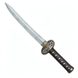
Lame de la pluie fine
Katanas · CommunRécupérer une ressource sur une attaque atténuée.
Effet : Après une frappe qui inflige moins de 10 dégâts, le porteur récupère 5 MP une fois par tour.
Limite / contrepartie : Aucun effet sur un allié ou une immunité totale.
5 500 gils proposés
Ancien effet, référence et fiche technique
Ancien : Profil de progression : caractéristiques indiquées, sans passif supplémentaire.
Différence : Récupérer une ressource sur une attaque atténuée. Après une frappe qui inflige moins de 10 dégâts, le porteur récupère 5 MP une fois par tour.
Référence native : Bizen Osafune — référence de famille, aucun remplacement.
Caractéristiques proposées : {"Range": 1, "Power": 7, "Evasion": 15}
Acquisition proposée : Nouvelle offre de boutique à partir de chapter_1_2, ajout sans suppression vanilla.
Prix précédent : 250 gils. Prix et progression à tester.
L’effet remplace l’ancien passif proposé. Liaison moteur UNKNOWN. Prototyper un déclenchement dédié préservant la condition, la cible et la contrepartie de cet effet, seulement si ce chemin est validé. Si aucun chemin ne préserve cette identité, exclure ce nouvel objet de la version jouable ; ne pas livrer un clone vanilla. Ne modifier aucun objet existant.
tfj_katana_02 · fine_rain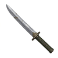
Katana du tertre
Katanas · CommunVeiller les morts pour soutenir les vivants.
Effet : La première frappe depuis une case adjacente à un allié KO retire Lenteur au porteur et à un allié vivant adjacent.
Limite / contrepartie : Une fois par bataille ; aucun effet sur les KO.
7 700 gils proposés
Ancien effet, référence et fiche technique
Ancien : Profil de progression : caractéristiques indiquées, sans passif supplémentaire.
Différence : Veiller les morts pour soutenir les vivants. La première frappe depuis une case adjacente à un allié KO retire Lenteur au porteur et à un allié vivant adjacent.
Référence native : Murasame — référence de famille, aucun remplacement.
Caractéristiques proposées : {"Range": 1, "Power": 9, "Evasion": 15}
Acquisition proposée : Nouvelle offre de boutique à partir de chapter_1_2, ajout sans suppression vanilla.
Prix précédent : 250 gils. Prix et progression à tester.
L’effet remplace l’ancien passif proposé. Liaison moteur UNKNOWN. Prototyper un déclenchement dédié préservant la condition, la cible et la contrepartie de cet effet, seulement si ce chemin est validé. Si aucun chemin ne préserve cette identité, exclure ce nouvel objet de la version jouable ; ne pas livrer un clone vanilla. Ne modifier aucun objet existant.
tfj_katana_03 · tumulus_vigil
Lame de pétale
Katanas · Peu communUne ouverture gracieuse au lieu d’un second coup.
Effet : Un critique laisse sur la cible une marque donnant +10 % de précision à la prochaine attaque normale d’un autre allié.
Limite / contrepartie : Une marque, expire au prochain tour ; ne profite pas au porteur.
8 400 gils proposés
Ancien effet, référence et fiche technique
Ancien : Profil de progression : caractéristiques indiquées, sans passif supplémentaire.
Différence : Une ouverture gracieuse au lieu d’un second coup. Un critique laisse sur la cible une marque donnant +10 % de précision à la prochaine attaque normale d’un autre allié.
Référence native : Murasame — référence de famille, aucun remplacement.
Caractéristiques proposées : {"Range": 1, "Power": 9, "Evasion": 15}
Acquisition proposée : Nouvelle offre de boutique à partir de chapter_2_3, ajout sans suppression vanilla.
Prix précédent : 1800 gils. Prix et progression à tester.
L’effet remplace l’ancien passif proposé. Liaison moteur UNKNOWN. Prototyper un déclenchement dédié préservant la condition, la cible et la contrepartie de cet effet, seulement si ce chemin est validé. Si aucun chemin ne préserve cette identité, exclure ce nouvel objet de la version jouable ; ne pas livrer un clone vanilla. Ne modifier aucun objet existant.
tfj_katana_04 · petal_relay
Katana des braises
Katanas · Peu communCombiner magie et soutien de proximité.
Effet : Une frappe normale sur une cible récemment touchée par Feu rend 5 PV par tranche de 10 dégâts de cette frappe à un allié voisin, plafond 15 PV.
Limite / contrepartie : Une fois par tour ; ne soigne pas le porteur.
9 600 gils proposés
Ancien effet, référence et fiche technique
Ancien : Profil de progression : caractéristiques indiquées, sans passif supplémentaire.
Différence : Combiner magie et soutien de proximité. Une frappe normale sur une cible récemment touchée par Feu rend 5 PV par tranche de 10 dégâts de cette frappe à un allié voisin, plafond 15 PV.
Référence native : Ame-no-Murakumo — référence de famille, aucun remplacement.
Caractéristiques proposées : {"Range": 1, "Power": 9, "Evasion": 15}
Acquisition proposée : Nouvelle offre de boutique à partir de chapter_2_3, ajout sans suppression vanilla.
Prix précédent : 3600 gils. Prix et progression à tester.
L’effet remplace l’ancien passif proposé. Liaison moteur UNKNOWN. Prototyper un déclenchement dédié préservant la condition, la cible et la contrepartie de cet effet, seulement si ce chemin est validé. Si aucun chemin ne préserve cette identité, exclure ce nouvel objet de la version jouable ; ne pas livrer un clone vanilla. Ne modifier aucun objet existant.
tfj_katana_05 · ember_exchange
Lame du courant froid
Katanas · RareCréer une fenêtre élémentaire à double tranchant.
Effet : Après une frappe latérale, réduit de 10 % le prochain dégât de Glace reçu par la cible et augmente de 10 % le prochain dégât de Foudre allié contre elle.
Limite / contrepartie : Une marque temporaire ; le premier effet peut aider l’ennemi.
13 500 gils proposés
Ancien effet, référence et fiche technique
Ancien : Profil de progression : caractéristiques indiquées, sans passif supplémentaire.
Différence : Créer une fenêtre élémentaire à double tranchant. Après une frappe latérale, réduit de 10 % le prochain dégât de Glace reçu par la cible et augmente de 10 % le prochain dégât de Foudre allié contre elle.
Référence native : Kiyomori — référence de famille, aucun remplacement.
Caractéristiques proposées : {"Range": 1, "Power": 10, "Evasion": 15}
Acquisition proposée : Récompense rare optionnelle ; aucun objet vanilla remplacé.
Prix précédent : 17000 gils. Prix et progression à tester.
L’effet remplace l’ancien passif proposé. Liaison moteur UNKNOWN. Prototyper un déclenchement dédié préservant la condition, la cible et la contrepartie de cet effet, seulement si ce chemin est validé. Si aucun chemin ne préserve cette identité, exclure ce nouvel objet de la version jouable ; ne pas livrer un clone vanilla. Ne modifier aucun objet existant.
tfj_katana_06 · cold_current
Katana de l'encens
Katanas · RareSuivre une dissipation alliée.
Effet : Frapper une cible après qu’un allié lui a retiré un statut positif donne 8 MP au porteur.
Limite / contrepartie : Une fois par bataille ; aucune dissipation automatique.
20 250 gils proposés
Ancien effet, référence et fiche technique
Ancien : Profil de progression : caractéristiques indiquées, sans passif supplémentaire.
Différence : Suivre une dissipation alliée. Frapper une cible après qu’un allié lui a retiré un statut positif donne 8 MP au porteur.
Référence native : Muramasa — référence de famille, aucun remplacement.
Caractéristiques proposées : {"Range": 1, "Power": 12, "Evasion": 15}
Acquisition proposée : Récompense rare optionnelle ; aucun objet vanilla remplacé.
Prix précédent : 17000 gils. Prix et progression à tester.
L’effet remplace l’ancien passif proposé. Liaison moteur UNKNOWN. Prototyper un déclenchement dédié préservant la condition, la cible et la contrepartie de cet effet, seulement si ce chemin est validé. Si aucun chemin ne préserve cette identité, exclure ce nouvel objet de la version jouable ; ne pas livrer un clone vanilla. Ne modifier aucun objet existant.
tfj_katana_07 · incense_cut
Lame du héron
Katanas · RareDescendre puis repartir vers une hauteur.
Effet : La première frappe suivant une descente de hauteur rend 10 PV au porteur et prépare +1 saut au déplacement suivant.
Limite / contrepartie : Une fois par bataille ; le saut expire après un tour.
29 700 gils proposés
Ancien effet, référence et fiche technique
Ancien : Profil de progression : caractéristiques indiquées, sans passif supplémentaire.
Différence : Descendre puis repartir vers une hauteur. La première frappe suivant une descente de hauteur rend 10 PV au porteur et prépare +1 saut au déplacement suivant.
Référence native : Kiku-ichimonji — référence de famille, aucun remplacement.
Caractéristiques proposées : {"Range": 1, "Power": 12, "Evasion": 15}
Acquisition proposée : Récompense rare optionnelle ; aucun objet vanilla remplacé.
Prix précédent : 17000 gils. Prix et progression à tester.
L’effet remplace l’ancien passif proposé. Liaison moteur UNKNOWN. Prototyper un déclenchement dédié préservant la condition, la cible et la contrepartie de cet effet, seulement si ce chemin est validé. Si aucun chemin ne préserve cette identité, exclure ce nouvel objet de la version jouable ; ne pas livrer un clone vanilla. Ne modifier aucun objet existant.
tfj_katana_08 · heron_landingDernière lune
Katanas · LégendaireConclure un duel contre une préparation d’équipement.
Effet : Si le porteur attaque la même cible aux PV supérieurs puis inférieurs à 50 % sur deux de ses tours, la seconde frappe retire son dernier bonus d’équipement temporaire nouveau.
Limite / contrepartie : Une fois par bataille ; aucun statut vanilla retiré par cet effet.
Récompense dédiée · hors boutique · non revendable
Ancien effet, référence et fiche technique
Ancien : Affinité glace ; puissance légèrement abaissée pour financer cet élément.
Différence : Conclure un duel contre une préparation d’équipement. Si le porteur attaque la même cible aux PV supérieurs puis inférieurs à 50 % sur deux de ses tours, la seconde frappe retire son dernier bonus d’équipement temporaire nouveau.
Référence native : Masamune — référence de famille, aucun remplacement.
Caractéristiques proposées : {"Range": 1, "Power": 14, "Evasion": 15}
Acquisition proposée : Quête originale « Les sept veilles », étape 1. Recueillir trois prières, défendre les cloches et battre le gardien du dernier rite.
Prix précédent : 0 gils. Prix et progression à tester.
L’effet remplace l’ancien passif proposé. Liaison moteur UNKNOWN. Prototyper un déclenchement dédié préservant la condition, la cible et la contrepartie de cet effet, seulement si ce chemin est validé. Si aucun chemin ne préserve cette identité, exclure ce nouvel objet de la version jouable ; ne pas livrer un clone vanilla. Ne modifier aucun objet existant.
tfj_katana_09 · last_moonUne discipline silencieuse contre les nouveaux passifs.
Effet : Après trois tours du porteur sans sort payé, une frappe normale de dos scelle la prochaine réaction d’équipement nouveau de la cible.
Limite / contrepartie : Une fois par bataille ; ne neutralise pas les réactions de job vanilla.
Récompense dédiée · hors boutique · non revendable
Ancien effet, référence et fiche technique
Ancien : Une attaque de dos gagne 10 % de dégâts ; aucune chance de mort instantanée.
Différence : Une discipline silencieuse contre les nouveaux passifs. Après trois tours du porteur sans sort payé, une frappe normale de dos scelle la prochaine réaction d’équipement nouveau de la cible.
Référence native : Masamune — référence de famille, aucun remplacement.
Caractéristiques proposées : {"Range": 1, "Power": 13, "Evasion": 15}
Acquisition proposée : Quête originale « Les sept veilles », étape 2. Recueillir trois prières, défendre les cloches et battre le gardien du dernier rite.
Prix précédent : 0 gils. Prix et progression à tester.
L’effet remplace l’ancien passif proposé. Liaison moteur UNKNOWN. Prototyper un déclenchement dédié préservant la condition, la cible et la contrepartie de cet effet, seulement si ce chemin est validé. Si aucun chemin ne préserve cette identité, exclure ce nouvel objet de la version jouable ; ne pas livrer un clone vanilla. Ne modifier aucun objet existant.
tfj_katana_10 · seventh_silence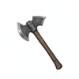
Hache de levée
Haches · CommunOuvrir un combat pour l’équipe.
Effet : La première attaque sur une cible encore à tous ses PV donne +10 % de précision à la prochaine frappe de mêlée alliée sur elle.
Limite / contrepartie : Ne donne pas ce bonus au porteur ; une marque consommée.
1 650 gils proposés
Ancien effet, référence et fiche technique
Ancien : Profil de progression : caractéristiques indiquées, sans passif supplémentaire.
Différence : Ouvrir un combat pour l’équipe. La première attaque sur une cible encore à tous ses PV donne +10 % de précision à la prochaine frappe de mêlée alliée sur elle.
Référence native : Battle Axe — référence de famille, aucun remplacement.
Caractéristiques proposées : {"Range": 1, "Power": 8, "Evasion": 0}
Acquisition proposée : Nouvelle offre de boutique à partir de chapter_1_2, ajout sans suppression vanilla.
Prix précédent : 250 gils. Prix et progression à tester.
L’effet remplace l’ancien passif proposé. Liaison moteur UNKNOWN. Prototyper un déclenchement dédié préservant la condition, la cible et la contrepartie de cet effet, seulement si ce chemin est validé. Si aucun chemin ne préserve cette identité, exclure ce nouvel objet de la version jouable ; ne pas livrer un clone vanilla. Ne modifier aucun objet existant.
tfj_axe_01 · militia_split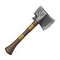
Francisque du col
Haches · RareRécompenser une ascension engagée.
Effet : Après une montée de deux niveaux de hauteur ou plus pendant son tour, une frappe normale réussie rend 10 PV au porteur.
Limite / contrepartie : Une fois par tour ; aucun bonus sans montée.
16 200 gils proposés
Ancien effet, référence et fiche technique
Ancien : Profil de progression : caractéristiques indiquées, sans passif supplémentaire.
Différence : Récompenser une ascension engagée. Après une montée de deux niveaux de hauteur ou plus pendant son tour, une frappe normale réussie rend 10 PV au porteur.
Référence native : Slasher — référence de famille, aucun remplacement.
Caractéristiques proposées : {"Range": 1, "Power": 13, "Evasion": 0}
Acquisition proposée : Récompense rare optionnelle ; aucun objet vanilla remplacé.
Prix précédent : 8500 gils. Prix et progression à tester.
L’effet remplace l’ancien passif proposé. Liaison moteur UNKNOWN. Prototyper un déclenchement dédié préservant la condition, la cible et la contrepartie de cet effet, seulement si ce chemin est validé. Si aucun chemin ne préserve cette identité, exclure ce nouvel objet de la version jouable ; ne pas livrer un clone vanilla. Ne modifier aucun objet existant.
tfj_axe_02 · pass_franciscaSolidité acquise par participation active.
Effet : Trois attaques normales sur trois cibles distinctes constituent une réserve : le prochain dégât physique de face reçu est réduit de 25 %.
Limite / contrepartie : Une fois par bataille ; la réserve ne bloque pas un sort.
Récompense dédiée · hors boutique · non revendable
Ancien effet, référence et fiche technique
Ancien : Attaque lourde de fin de progression ; précision ne dépasse pas la référence vanilla.
Différence : Solidité acquise par participation active. Trois attaques normales sur trois cibles distinctes constituent une réserve : le prochain dégât physique de face reçu est réduit de 25 %.
Référence native : Slasher — référence de famille, aucun remplacement.
Caractéristiques proposées : {"Range": 1, "Power": 12, "Evasion": 0}
Acquisition proposée : Quête originale « La dette du billot », étape 1. Libérer les captifs, retrouver le coffre puis désarmer son gardien.
Prix précédent : 0 gils. Prix et progression à tester.
L’effet remplace l’ancien passif proposé. Liaison moteur UNKNOWN. Prototyper un déclenchement dédié préservant la condition, la cible et la contrepartie de cet effet, seulement si ce chemin est validé. Si aucun chemin ne préserve cette identité, exclure ce nouvel objet de la version jouable ; ne pas livrer un clone vanilla. Ne modifier aucun objet existant.
tfj_axe_03 · old_oakFinir une cible au prix d’un sacrifice de soutien.
Effet : Une frappe létale sur un ennemi rend 15 % des PV maximum à l’allié vivant ayant le moins de PV, mais coûte au porteur 5 % de ses PV maximum.
Limite / contrepartie : Deux usages par bataille ; ne peut pas tuer le porteur ; pas de gain sur allié.
Récompense dédiée · hors boutique · non revendable
Ancien effet, référence et fiche technique
Ancien : Contre une cible sous Protection, gagne 15 % de dégâts ; puissance de base abaissée, aucun effet cumulable.
Différence : Finir une cible au prix d’un sacrifice de soutien. Une frappe létale sur un ennemi rend 15 % des PV maximum à l’allié vivant ayant le moins de PV, mais coûte au porteur 5 % de ses PV maximum.
Référence native : Slasher — référence de famille, aucun remplacement.
Caractéristiques proposées : {"Range": 1, "Power": 11, "Evasion": 0}
Acquisition proposée : Quête originale « La dette du billot », étape 2. Libérer les captifs, retrouver le coffre puis désarmer son gardien.
Prix précédent : 0 gils. Prix et progression à tester.
L’effet remplace l’ancien passif proposé. Liaison moteur UNKNOWN. Prototyper un déclenchement dédié préservant la condition, la cible et la contrepartie de cet effet, seulement si ce chemin est validé. Si aucun chemin ne préserve cette identité, exclure ce nouvel objet de la version jouable ; ne pas livrer un clone vanilla. Ne modifier aucun objet existant.
tfj_axe_04 · headsman_debt
Baguette d'argile
Baguettes · CommunMagie depuis un point bas stable.
Effet : Un sort offensif lancé sans déplacement préalable rend 2 MP après résolution, si sa cible principale est plus haute que le porteur.
Limite / contrepartie : Une fois par tour ; remboursement inférieur au coût réellement payé.
450 gils proposés
Ancien effet, référence et fiche technique
Ancien : Profil de progression : caractéristiques indiquées, sans passif supplémentaire.
Différence : Magie depuis un point bas stable. Un sort offensif lancé sans déplacement préalable rend 2 MP après résolution, si sa cible principale est plus haute que le porteur.
Référence native : Thunder Rod — référence de famille, aucun remplacement.
Caractéristiques proposées : {"Range": 1, "Power": 2, "Evasion": 20}
Acquisition proposée : Nouvelle offre de boutique à partir de chapter_1_2, ajout sans suppression vanilla.
Prix précédent : 250 gils. Prix et progression à tester.
L’effet remplace l’ancien passif proposé. Liaison moteur UNKNOWN. Prototyper un déclenchement dédié préservant la condition, la cible et la contrepartie de cet effet, seulement si ce chemin est validé. Si aucun chemin ne préserve cette identité, exclure ce nouvel objet de la version jouable ; ne pas livrer un clone vanilla. Ne modifier aucun objet existant.
tfj_rod_01 · clay_anchor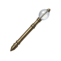
Baguette du souffleur
Baguettes · CommunAlterner souffle offensif et soutien.
Effet : Après un sort de Vent payé, le prochain soin direct du porteur gagne 10 % de puissance.
Limite / contrepartie : Bonus consommé au soin, expire au tour suivant.
450 gils proposés
Ancien effet, référence et fiche technique
Ancien : Profil de progression : caractéristiques indiquées, sans passif supplémentaire.
Différence : Alterner souffle offensif et soutien. Après un sort de Vent payé, le prochain soin direct du porteur gagne 10 % de puissance.
Référence native : Flame Rod — référence de famille, aucun remplacement.
Caractéristiques proposées : {"Range": 1, "Power": 1, "Evasion": 20}
Acquisition proposée : Nouvelle offre de boutique à partir de chapter_1_2, ajout sans suppression vanilla.
Prix précédent : 250 gils. Prix et progression à tester.
L’effet remplace l’ancien passif proposé. Liaison moteur UNKNOWN. Prototyper un déclenchement dédié préservant la condition, la cible et la contrepartie de cet effet, seulement si ce chemin est validé. Si aucun chemin ne préserve cette identité, exclure ce nouvel objet de la version jouable ; ne pas livrer un clone vanilla. Ne modifier aucun objet existant.
tfj_rod_02 · glassblower_breath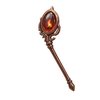
Tison d'école
Baguettes · Peu communApprendre à viser sans gêner l’équipe.
Effet : Le premier sort de Feu payé qui ne touche aucun allié rend 5 MP à un autre allié adjacent.
Limite / contrepartie : Une fois par bataille ; coût non remboursé au porteur.
475 gils proposés
Ancien effet, référence et fiche technique
Ancien : Profil de progression : caractéristiques indiquées, sans passif supplémentaire.
Différence : Apprendre à viser sans gêner l’équipe. Le premier sort de Feu payé qui ne touche aucun allié rend 5 MP à un autre allié adjacent.
Référence native : Ice Rod — référence de famille, aucun remplacement.
Caractéristiques proposées : {"Range": 1, "Power": 2, "Evasion": 20}
Acquisition proposée : Nouvelle offre de boutique à partir de chapter_2_3, ajout sans suppression vanilla.
Prix précédent : 1800 gils. Prix et progression à tester.
L’effet remplace l’ancien passif proposé. Liaison moteur UNKNOWN. Prototyper un déclenchement dédié préservant la condition, la cible et la contrepartie de cet effet, seulement si ce chemin est validé. Si aucun chemin ne préserve cette identité, exclure ce nouvel objet de la version jouable ; ne pas livrer un clone vanilla. Ne modifier aucun objet existant.
tfj_rod_03 · school_ember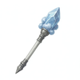
Baguette de brume
Baguettes · Peu communConvertir un contrôle en économie de soin.
Effet : Si la cible principale est sous Aveuglement, le premier sort payé qui lui inflige des dégâts donne au porteur -10 % au coût de son prochain sort de soin.
Limite / contrepartie : Une fois par bataille ; coût final au moins 1.
600 gils proposés
Ancien effet, référence et fiche technique
Ancien : Profil de progression : caractéristiques indiquées, sans passif supplémentaire.
Différence : Convertir un contrôle en économie de soin. Si la cible principale est sous Aveuglement, le premier sort payé qui lui inflige des dégâts donne au porteur -10 % au coût de son prochain sort de soin.
Référence native : Poison Rod — référence de famille, aucun remplacement.
Caractéristiques proposées : {"Range": 1, "Power": 2, "Evasion": 20}
Acquisition proposée : Nouvelle offre de boutique à partir de chapter_2_3, ajout sans suppression vanilla.
Prix précédent : 1800 gils. Prix et progression à tester.
L’effet remplace l’ancien passif proposé. Liaison moteur UNKNOWN. Prototyper un déclenchement dédié préservant la condition, la cible et la contrepartie de cet effet, seulement si ce chemin est validé. Si aucun chemin ne préserve cette identité, exclure ce nouvel objet de la version jouable ; ne pas livrer un clone vanilla. Ne modifier aucun objet existant.
tfj_rod_04 · fog_focus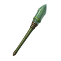
Verge des mousses
Baguettes · RareRelier pression de terrain et entretien du mage.
Effet : Un sort de Terre payé sur une cible empoisonnée réduit de 10 % le prochain coût MP d’un soin reçu par le porteur.
Limite / contrepartie : Une fois par tour ; Poison n’est pas retiré.
10 800 gils proposés
Ancien effet, référence et fiche technique
Ancien : Profil de progression : caractéristiques indiquées, sans passif supplémentaire.
Différence : Relier pression de terrain et entretien du mage. Un sort de Terre payé sur une cible empoisonnée réduit de 10 % le prochain coût MP d’un soin reçu par le porteur.
Référence native : Wizard's Rod — référence de famille, aucun remplacement.
Caractéristiques proposées : {"Range": 1, "Power": 2, "Evasion": 20}
Acquisition proposée : Récompense rare optionnelle ; aucun objet vanilla remplacé.
Prix précédent : 17000 gils. Prix et progression à tester.
L’effet remplace l’ancien passif proposé. Liaison moteur UNKNOWN. Prototyper un déclenchement dédié préservant la condition, la cible et la contrepartie de cet effet, seulement si ce chemin est validé. Si aucun chemin ne préserve cette identité, exclure ce nouvel objet de la version jouable ; ne pas livrer un clone vanilla. Ne modifier aucun objet existant.
tfj_rod_05 · moss_cycle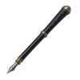
Baguette du scribe noir
Baguettes · RareEncourager une adaptation après un échec offensif.
Effet : Après avoir payé au moins 15 MP pour un sort sans KO ennemi, réserve 5 MP pour un prochain sort d’un élément différent.
Limite / contrepartie : Une fois par bataille ; crédit perdu en répétant l’élément.
16 200 gils proposés
Ancien effet, référence et fiche technique
Ancien : Profil de progression : caractéristiques indiquées, sans passif supplémentaire.
Différence : Encourager une adaptation après un échec offensif. Après avoir payé au moins 15 MP pour un sort sans KO ennemi, réserve 5 MP pour un prochain sort d’un élément différent.
Référence native : Dragon Rod — référence de famille, aucun remplacement.
Caractéristiques proposées : {"Range": 1, "Power": 4, "Evasion": 20}
Acquisition proposée : Récompense rare optionnelle ; aucun objet vanilla remplacé.
Prix précédent : 17000 gils. Prix et progression à tester.
L’effet remplace l’ancien passif proposé. Liaison moteur UNKNOWN. Prototyper un déclenchement dédié préservant la condition, la cible et la contrepartie de cet effet, seulement si ce chemin est validé. Si aucun chemin ne préserve cette identité, exclure ce nouvel objet de la version jouable ; ne pas livrer un clone vanilla. Ne modifier aucun objet existant.
tfj_rod_06 · black_ledgerRécompenser un mage polyvalent.
Effet : Le troisième élément différent utilisé par le porteur dans la bataille gagne 15 % de dégâts sur sa cible principale.
Limite / contrepartie : Une seule activation ; pas d’effet sur attaque sans élément.
Récompense dédiée · hors boutique · non revendable
Ancien effet, référence et fiche technique
Ancien : Affinité vent et +1 puissance magique proposée ; aucun renvoi automatique des sorts.
Différence : Récompenser un mage polyvalent. Le troisième élément différent utilisé par le porteur dans la bataille gagne 15 % de dégâts sur sa cible principale.
Référence native : Dragon Rod — référence de famille, aucun remplacement.
Caractéristiques proposées : {"Range": 1, "Power": 4, "Evasion": 20}
Acquisition proposée : Quête originale « Les quatre souffleurs », étape 1. Récupérer les cristaux et contenir les essais sans détruire les verreries.
Prix précédent : 0 gils. Prix et progression à tester.
L’effet remplace l’ancien passif proposé. Liaison moteur UNKNOWN. Prototyper un déclenchement dédié préservant la condition, la cible et la contrepartie de cet effet, seulement si ce chemin est validé. Si aucun chemin ne préserve cette identité, exclure ce nouvel objet de la version jouable ; ne pas livrer un clone vanilla. Ne modifier aucun objet existant.
tfj_rod_07 · four_winds_keyLimiter une zone risquée sans la rendre gratuite.
Effet : Le premier sort payé ciblant un ennemi et un allié soigne cet allié de 20 PV après résolution s’il survit.
Limite / contrepartie : Une fois par bataille ; ne supprime pas les dégâts amis et ne réanime pas.
Récompense dédiée · hors boutique · non revendable
Ancien effet, référence et fiche technique
Ancien : Un sort offensif payé en MP peut infliger Silence à sa cible principale avec 10 % de chance ; une fois par action.
Différence : Limiter une zone risquée sans la rendre gratuite. Le premier sort payé ciblant un ennemi et un allié soigne cet allié de 20 PV après résolution s’il survit.
Référence native : Dragon Rod — référence de famille, aucun remplacement.
Caractéristiques proposées : {"Range": 1, "Power": 3, "Evasion": 20}
Acquisition proposée : Quête originale « Les quatre souffleurs », étape 2. Récupérer les cristaux et contenir les essais sans détruire les verreries.
Prix précédent : 0 gils. Prix et progression à tester.
L’effet remplace l’ancien passif proposé. Liaison moteur UNKNOWN. Prototyper un déclenchement dédié préservant la condition, la cible et la contrepartie de cet effet, seulement si ce chemin est validé. Si aucun chemin ne préserve cette identité, exclure ce nouvel objet de la version jouable ; ne pas livrer un clone vanilla. Ne modifier aucun objet existant.
tfj_rod_08 · ajaran_lantern
Bâton du pèlerin
Bâtons · CommunSoin après un trajet d’assistance.
Effet : Le premier soin direct après avoir parcouru au moins trois cases sur le tour précédent gagne 10 % de puissance.
Limite / contrepartie : Une fois par bataille ; pas sur résurrection.
875 gils proposés
Ancien effet, référence et fiche technique
Ancien : Profil de progression : caractéristiques indiquées, sans passif supplémentaire.
Différence : Soin après un trajet d’assistance. Le premier soin direct après avoir parcouru au moins trois cases sur le tour précédent gagne 10 % de puissance.
Référence native : White Staff — référence de famille, aucun remplacement.
Caractéristiques proposées : {"Range": 1, "Power": 2, "Evasion": 15}
Acquisition proposée : Nouvelle offre de boutique à partir de chapter_1_2, ajout sans suppression vanilla.
Prix précédent : 250 gils. Prix et progression à tester.
L’effet remplace l’ancien passif proposé. Liaison moteur UNKNOWN. Prototyper un déclenchement dédié préservant la condition, la cible et la contrepartie de cet effet, seulement si ce chemin est validé. Si aucun chemin ne préserve cette identité, exclure ce nouvel objet de la version jouable ; ne pas livrer un clone vanilla. Ne modifier aucun objet existant.
tfj_staff_01 · pilgrim_benefit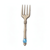
Bâton des sources
Bâtons · CommunRedistribuer un petit surplus.
Effet : Un soin qui atteint les PV maximum d’un allié transmet la moitié de l’excédent à un autre allié adjacent, plafond 15 PV.
Limite / contrepartie : Une fois par tour ; pas de transmission en chaîne.
4 400 gils proposés
Ancien effet, référence et fiche technique
Ancien : Profil de progression : caractéristiques indiquées, sans passif supplémentaire.
Différence : Redistribuer un petit surplus. Un soin qui atteint les PV maximum d’un allié transmet la moitié de l’excédent à un autre allié adjacent, plafond 15 PV.
Référence native : Healing Staff — référence de famille, aucun remplacement.
Caractéristiques proposées : {"Range": 1, "Power": 2, "Evasion": 15}
Acquisition proposée : Nouvelle offre de boutique à partir de chapter_1_2, ajout sans suppression vanilla.
Prix précédent : 250 gils. Prix et progression à tester.
L’effet remplace l’ancien passif proposé. Liaison moteur UNKNOWN. Prototyper un déclenchement dédié préservant la condition, la cible et la contrepartie de cet effet, seulement si ce chemin est validé. Si aucun chemin ne préserve cette identité, exclure ce nouvel objet de la version jouable ; ne pas livrer un clone vanilla. Ne modifier aucun objet existant.
tfj_staff_02 · spring_overflow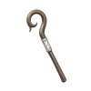
Houlette de l'aumônier
Bâtons · Peu communAumône magique pendant un soin.
Effet : Soigner un allié ayant moins de MP que le porteur lui transmet 3 MP pris dans la réserve du porteur.
Limite / contrepartie : Une fois par tour ; pas de transfert si le porteur ne les possède pas.
4 800 gils proposés
Ancien effet, référence et fiche technique
Ancien : Profil de progression : caractéristiques indiquées, sans passif supplémentaire.
Différence : Aumône magique pendant un soin. Soigner un allié ayant moins de MP que le porteur lui transmet 3 MP pris dans la réserve du porteur.
Référence native : Mage's Staff — référence de famille, aucun remplacement.
Caractéristiques proposées : {"Range": 1, "Power": 3, "Evasion": 15}
Acquisition proposée : Nouvelle offre de boutique à partir de chapter_2_3, ajout sans suppression vanilla.
Prix précédent : 1800 gils. Prix et progression à tester.
L’effet remplace l’ancien passif proposé. Liaison moteur UNKNOWN. Prototyper un déclenchement dédié préservant la condition, la cible et la contrepartie de cet effet, seulement si ce chemin est validé. Si aucun chemin ne préserve cette identité, exclure ce nouvel objet de la version jouable ; ne pas livrer un clone vanilla. Ne modifier aucun objet existant.
tfj_staff_03 · almoner_share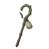
Bâton de l'herboriste
Bâtons · Peu communFaire circuler les soins.
Effet : Après avoir retiré Poison à un allié, le prochain soin direct du porteur sur un autre allié gagne 15 %.
Limite / contrepartie : Expire au tour suivant ; pas de bonus sur la cible détoxifiée.
2 650 gils proposés
Ancien effet, référence et fiche technique
Ancien : Profil de progression : caractéristiques indiquées, sans passif supplémentaire.
Différence : Faire circuler les soins. Après avoir retiré Poison à un allié, le prochain soin direct du porteur sur un autre allié gagne 15 %.
Référence native : Serpent Staff — référence de famille, aucun remplacement.
Caractéristiques proposées : {"Range": 1, "Power": 4, "Evasion": 15}
Acquisition proposée : Nouvelle offre de boutique à partir de chapter_2_3, ajout sans suppression vanilla.
Prix précédent : 1800 gils. Prix et progression à tester.
L’effet remplace l’ancien passif proposé. Liaison moteur UNKNOWN. Prototyper un déclenchement dédié préservant la condition, la cible et la contrepartie de cet effet, seulement si ce chemin est validé. Si aucun chemin ne préserve cette identité, exclure ce nouvel objet de la version jouable ; ne pas livrer un clone vanilla. Ne modifier aucun objet existant.
tfj_staff_04 · herbal_followup
Canne du veilleur
Bâtons · RareRendre la vision utile immédiatement.
Effet : La première suppression d’Aveuglement allié donne à cette cible +10 % de précision sur sa prochaine attaque normale.
Limite / contrepartie : Une fois par bataille ; bonus consommé et temporaire.
9 450 gils proposés
Ancien effet, référence et fiche technique
Ancien : Profil de progression : caractéristiques indiquées, sans passif supplémentaire.
Différence : Rendre la vision utile immédiatement. La première suppression d’Aveuglement allié donne à cette cible +10 % de précision sur sa prochaine attaque normale.
Référence native : Golden Staff — référence de famille, aucun remplacement.
Caractéristiques proposées : {"Range": 1, "Power": 4, "Evasion": 15}
Acquisition proposée : Récompense rare optionnelle ; aucun objet vanilla remplacé.
Prix précédent : 17000 gils. Prix et progression à tester.
L’effet remplace l’ancien passif proposé. Liaison moteur UNKNOWN. Prototyper un déclenchement dédié préservant la condition, la cible et la contrepartie de cet effet, seulement si ce chemin est validé. Si aucun chemin ne préserve cette identité, exclure ce nouvel objet de la version jouable ; ne pas livrer un clone vanilla. Ne modifier aucun objet existant.
tfj_staff_05 · watchman_light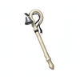
Bâton des derniers rites
Bâtons · RareConsolidation d’une relève.
Effet : Le premier soin direct sur un allié réanimé pendant la bataille coûte 20 % de MP en moins.
Limite / contrepartie : Une fois par bataille ; ne réduit pas le coût de la résurrection.
50 gils proposés
Ancien effet, référence et fiche technique
Ancien : Profil de progression : caractéristiques indiquées, sans passif supplémentaire.
Différence : Consolidation d’une relève. Le premier soin direct sur un allié réanimé pendant la bataille coûte 20 % de MP en moins.
Référence native : Zeus Mace — référence de famille, aucun remplacement.
Caractéristiques proposées : {"Range": 1, "Power": 5, "Evasion": 15}
Acquisition proposée : Récompense rare optionnelle ; aucun objet vanilla remplacé.
Prix précédent : 17000 gils. Prix et progression à tester.
L’effet remplace l’ancien passif proposé. Liaison moteur UNKNOWN. Prototyper un déclenchement dédié préservant la condition, la cible et la contrepartie de cet effet, seulement si ce chemin est validé. Si aucun chemin ne préserve cette identité, exclure ce nouvel objet de la version jouable ; ne pas livrer un clone vanilla. Ne modifier aucun objet existant.
tfj_staff_06 · last_rites_staffUn retour différé de la tournée de soins.
Effet : Soigner trois alliés distincts prépare un soin de 10 PV sur ces trois alliés au début du prochain tour du porteur.
Limite / contrepartie : Une fois par bataille ; aucun effet sur une cible KO.
Récompense dédiée · hors boutique · non revendable
Ancien effet, référence et fiche technique
Ancien : Résistance à Silence et réserve de MP modeste ; aucun soin passif de zone.
Différence : Un retour différé de la tournée de soins. Soigner trois alliés distincts prépare un soin de 10 PV sur ces trois alliés au début du prochain tour du porteur.
Référence native : Zeus Mace — référence de famille, aucun remplacement.
Caractéristiques proposées : {"Range": 1, "Power": 5, "Evasion": 15}
Acquisition proposée : Quête originale « Le premier soin », étape 1. Collecter ses pages, escorter les blessés et arrêter les pillards à la sortie.
Prix précédent : 0 gils. Prix et progression à tester.
L’effet remplace l’ancien passif proposé. Liaison moteur UNKNOWN. Prototyper un déclenchement dédié préservant la condition, la cible et la contrepartie de cet effet, seulement si ce chemin est validé. Si aucun chemin ne préserve cette identité, exclure ce nouvel objet de la version jouable ; ne pas livrer un clone vanilla. Ne modifier aucun objet existant.
tfj_staff_07 · dawn_treeMémoire du premier soin
Bâtons · UniqueUne promesse de suivi à une personne précise.
Effet : Mémorise le premier allié soigné : s’il tombe ensuite sous 25 % de PV, le prochain soin direct du porteur sur lui gagne 25 %.
Limite / contrepartie : Une fois par bataille ; pas de soin automatique.
Récompense dédiée · hors boutique · non revendable
Ancien effet, référence et fiche technique
Ancien : Le premier soin direct de la bataille gagne 20 % de puissance ; aucun déclenchement sur résurrection.
Différence : Une promesse de suivi à une personne précise. Mémorise le premier allié soigné : s’il tombe ensuite sous 25 % de PV, le prochain soin direct du porteur sur lui gagne 25 %.
Référence native : Zeus Mace — référence de famille, aucun remplacement.
Caractéristiques proposées : {"Range": 1, "Power": 4, "Evasion": 15}
Acquisition proposée : Quête originale « Le premier soin », étape 2. Collecter ses pages, escorter les blessés et arrêter les pillards à la sortie.
Prix précédent : 0 gils. Prix et progression à tester.
L’effet remplace l’ancien passif proposé. Liaison moteur UNKNOWN. Prototyper un déclenchement dédié préservant la condition, la cible et la contrepartie de cet effet, seulement si ce chemin est validé. Si aucun chemin ne préserve cette identité, exclure ce nouvel objet de la version jouable ; ne pas livrer un clone vanilla. Ne modifier aucun objet existant.
tfj_staff_08 · first_care_memory
Fléau de milice
Fléaux · CommunBriser une série d’esquives.
Effet : Une frappe normale de face contre une cible ayant esquivé un allié depuis le dernier tour du porteur gagne 10 % de précision.
Limite / contrepartie : Une fois par tour ; ne garantit jamais un coup.
1 325 gils proposés
Ancien effet, référence et fiche technique
Ancien : Profil de progression : caractéristiques indiquées, sans passif supplémentaire.
Différence : Briser une série d’esquives. Une frappe normale de face contre une cible ayant esquivé un allié depuis le dernier tour du porteur gagne 10 % de précision.
Référence native : Iron Flail — référence de famille, aucun remplacement.
Caractéristiques proposées : {"Range": 1, "Power": 8, "Evasion": 0}
Acquisition proposée : Nouvelle offre de boutique à partir de chapter_1_2, ajout sans suppression vanilla.
Prix précédent : 250 gils. Prix et progression à tester.
L’effet remplace l’ancien passif proposé. Liaison moteur UNKNOWN. Prototyper un déclenchement dédié préservant la condition, la cible et la contrepartie de cet effet, seulement si ce chemin est validé. Si aucun chemin ne préserve cette identité, exclure ce nouvel objet de la version jouable ; ne pas livrer un clone vanilla. Ne modifier aucun objet existant.
tfj_flail_01 · militia_pressure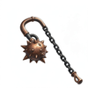
Fléau des fournaises
Fléaux · RareTransformer une épreuve en aide spécialisée.
Effet : Après avoir subi Feu, la prochaine frappe normale transmet 10 PV à un allié sous Poison au lieu de gagner des dégâts.
Limite / contrepartie : Une fois par bataille ; aucun effet sans allié éligible.
12 150 gils proposés
Ancien effet, référence et fiche technique
Ancien : Profil de progression : caractéristiques indiquées, sans passif supplémentaire.
Différence : Transformer une épreuve en aide spécialisée. Après avoir subi Feu, la prochaine frappe normale transmet 10 PV à un allié sous Poison au lieu de gagner des dégâts.
Référence native : Morning Star — référence de famille, aucun remplacement.
Caractéristiques proposées : {"Range": 1, "Power": 13, "Evasion": 0}
Acquisition proposée : Récompense rare optionnelle ; aucun objet vanilla remplacé.
Prix précédent : 8500 gils. Prix et progression à tester.
L’effet remplace l’ancien passif proposé. Liaison moteur UNKNOWN. Prototyper un déclenchement dédié préservant la condition, la cible et la contrepartie de cet effet, seulement si ce chemin est validé. Si aucun chemin ne préserve cette identité, exclure ce nouvel objet de la version jouable ; ne pas livrer un clone vanilla. Ne modifier aucun objet existant.
tfj_flail_02 · furnace_swingPréparer une exécution collective.
Effet : Une frappe non létale sur une cible sous Lenteur pose une marque qui rend 8 MP à l’allié portant le coup final avant le prochain tour du porteur.
Limite / contrepartie : Deux marques par bataille ; aucun gain au porteur.
Récompense dédiée · hors boutique · non revendable
Ancien effet, référence et fiche technique
Ancien : Affinité ombre proposée ; garde d’arme améliorée contre puissance abaissée.
Différence : Préparer une exécution collective. Une frappe non létale sur une cible sous Lenteur pose une marque qui rend 8 MP à l’allié portant le coup final avant le prochain tour du porteur.
Référence native : Scorpion Tail — référence de famille, aucun remplacement.
Caractéristiques proposées : {"Range": 1, "Power": 18, "Evasion": 0}
Acquisition proposée : Quête originale « L’heure du glas », étape 1. Récupérer les rouages puis vaincre le gardien en protégeant le sonneur.
Prix précédent : 0 gils. Prix et progression à tester.
L’effet remplace l’ancien passif proposé. Liaison moteur UNKNOWN. Prototyper un déclenchement dédié préservant la condition, la cible et la contrepartie de cet effet, seulement si ce chemin est validé. Si aucun chemin ne préserve cette identité, exclure ce nouvel objet de la version jouable ; ne pas livrer un clone vanilla. Ne modifier aucun objet existant.
tfj_flail_03 · knell_markL'Heure dernière
Fléaux · UniquePression de duel au lieu de mort instantanée.
Effet : Si une cible a déjà survécu à deux frappes normales du porteur, la troisième réduit de 20 % le prochain soin qu’elle reçoit.
Limite / contrepartie : Une cible mémorisée ; une fois par bataille.
Récompense dédiée · hors boutique · non revendable
Ancien effet, référence et fiche technique
Ancien : Une attaque physique sur une cible sous Lenteur gagne 15 % de dégâts ; ne prolonge pas Lenteur.
Différence : Pression de duel au lieu de mort instantanée. Si une cible a déjà survécu à deux frappes normales du porteur, la troisième réduit de 20 % le prochain soin qu’elle reçoit.
Référence native : Scorpion Tail — référence de famille, aucun remplacement.
Caractéristiques proposées : {"Range": 1, "Power": 17, "Evasion": 0}
Acquisition proposée : Quête originale « L’heure du glas », étape 2. Récupérer les rouages puis vaincre le gardien en protégeant le sonneur.
Prix précédent : 0 gils. Prix et progression à tester.
L’effet remplace l’ancien passif proposé. Liaison moteur UNKNOWN. Prototyper un déclenchement dédié préservant la condition, la cible et la contrepartie de cet effet, seulement si ce chemin est validé. Si aucun chemin ne préserve cette identité, exclure ce nouvel objet de la version jouable ; ne pas livrer un clone vanilla. Ne modifier aucun objet existant.
tfj_flail_04 · last_hour
Arquebuse du guet
Fusils · CommunTir d’intervention préparé.
Effet : Le premier tir sans mouvement contre un ennemi qui a attaqué un allié depuis le dernier tour du porteur gagne 10 % de précision.
Limite / contrepartie : Une fois par bataille ; pas de tir réactif gratuit.
5 500 gils proposés
Ancien effet, référence et fiche technique
Ancien : Profil de progression : caractéristiques indiquées, sans passif supplémentaire.
Différence : Tir d’intervention préparé. Le premier tir sans mouvement contre un ennemi qui a attaqué un allié depuis le dernier tour du porteur gagne 10 % de précision.
Référence native : Romandan Pistol — référence de famille, aucun remplacement.
Caractéristiques proposées : {"Range": 8, "Power": 5, "Evasion": 5}
Acquisition proposée : Nouvelle offre de boutique à partir de chapter_1_2, ajout sans suppression vanilla.
Prix précédent : 250 gils. Prix et progression à tester.
L’effet remplace l’ancien passif proposé. Liaison moteur UNKNOWN. Prototyper un déclenchement dédié préservant la condition, la cible et la contrepartie de cet effet, seulement si ce chemin est validé. Si aucun chemin ne préserve cette identité, exclure ce nouvel objet de la version jouable ; ne pas livrer un clone vanilla. Ne modifier aucun objet existant.
tfj_gun_01 · watch_shotMousquet de route
Fusils · CommunSoutenir en se repositionnant.
Effet : Après un déplacement d’au moins trois cases sans tir, le prochain tir normal rend 3 MP à un allié adjacent.
Limite / contrepartie : Expire au tour suivant ; ne donne pas de munition gratuite.
16 500 gils proposés
Ancien effet, référence et fiche technique
Ancien : Profil de progression : caractéristiques indiquées, sans passif supplémentaire.
Différence : Soutenir en se repositionnant. Après un déplacement d’au moins trois cases sans tir, le prochain tir normal rend 3 MP à un allié adjacent.
Référence native : Mythril Gun — référence de famille, aucun remplacement.
Caractéristiques proposées : {"Range": 8, "Power": 6, "Evasion": 5}
Acquisition proposée : Nouvelle offre de boutique à partir de chapter_1_2, ajout sans suppression vanilla.
Prix précédent : 250 gils. Prix et progression à tester.
L’effet remplace l’ancien passif proposé. Liaison moteur UNKNOWN. Prototyper un déclenchement dédié préservant la condition, la cible et la contrepartie de cet effet, seulement si ce chemin est validé. Si aucun chemin ne préserve cette identité, exclure ce nouvel objet de la version jouable ; ne pas livrer un clone vanilla. Ne modifier aucun objet existant.
tfj_gun_02 · road_reloadFusil du poudrier
Fusils · Peu communUn tir de finition réellement payé.
Effet : Le premier tir contre une cible à moins de 50 % de PV gagne 10 % de dégâts mais coûte 5 MP supplémentaires au tireur.
Limite / contrepartie : Aucun bonus sans les MP ; une fois par bataille.
50 gils proposés
Ancien effet, référence et fiche technique
Ancien : Profil de progression : caractéristiques indiquées, sans passif supplémentaire.
Différence : Un tir de finition réellement payé. Le premier tir contre une cible à moins de 50 % de PV gagne 10 % de dégâts mais coûte 5 MP supplémentaires au tireur.
Référence native : Stoneshooter — référence de famille, aucun remplacement.
Caractéristiques proposées : {"Range": 8, "Power": 14, "Evasion": 5}
Acquisition proposée : Nouvelle offre de boutique à partir de chapter_2_3, ajout sans suppression vanilla.
Prix précédent : 1800 gils. Prix et progression à tester.
L’effet remplace l’ancien passif proposé. Liaison moteur UNKNOWN. Prototyper un déclenchement dédié préservant la condition, la cible et la contrepartie de cet effet, seulement si ce chemin est validé. Si aucun chemin ne préserve cette identité, exclure ce nouvel objet de la version jouable ; ne pas livrer un clone vanilla. Ne modifier aucun objet existant.
tfj_gun_03 · powder_tradeCarabine de givre
Fusils · RareContrôle et duel contre un mage précis.
Effet : Tirer sur une cible sous Lenteur prépare +8 esquive magique contre le prochain sort venant de cette cible.
Limite / contrepartie : Expire au tour suivant ; aucune résistance générale.
50 gils proposés
Ancien effet, référence et fiche technique
Ancien : Profil de progression : caractéristiques indiquées, sans passif supplémentaire.
Différence : Contrôle et duel contre un mage précis. Tirer sur une cible sous Lenteur prépare +8 esquive magique contre le prochain sort venant de cette cible.
Référence native : Glacial Gun — référence de famille, aucun remplacement.
Caractéristiques proposées : {"Range": 8, "Power": 18, "Evasion": 5}
Acquisition proposée : Récompense rare optionnelle ; aucun objet vanilla remplacé.
Prix précédent : 8500 gils. Prix et progression à tester.
L’effet remplace l’ancien passif proposé. Liaison moteur UNKNOWN. Prototyper un déclenchement dédié préservant la condition, la cible et la contrepartie de cet effet, seulement si ce chemin est validé. Si aucun chemin ne préserve cette identité, exclure ce nouvel objet de la version jouable ; ne pas livrer un clone vanilla. Ne modifier aucun objet existant.
tfj_gun_04 · frost_carbine
Arquebuse d'orage
Fusils · RareReconnaissance d’une menace élémentaire.
Effet : Après un tir sur une cible touchée par Foudre depuis le dernier tour, révèle son dernier élément offensif et donne au tireur 10 % de réduction contre sa prochaine attaque de cet élément.
Limite / contrepartie : Une fois par bataille ; aucun effet si aucun élément n’a été utilisé.
50 gils proposés
Ancien effet, référence et fiche technique
Ancien : Profil de progression : caractéristiques indiquées, sans passif supplémentaire.
Différence : Reconnaissance d’une menace élémentaire. Après un tir sur une cible touchée par Foudre depuis le dernier tour, révèle son dernier élément offensif et donne au tireur 10 % de réduction contre sa prochaine attaque de cet élément.
Référence native : Blaze Gun — référence de famille, aucun remplacement.
Caractéristiques proposées : {"Range": 8, "Power": 18, "Evasion": 5}
Acquisition proposée : Récompense rare optionnelle ; aucun objet vanilla remplacé.
Prix précédent : 17000 gils. Prix et progression à tester.
L’effet remplace l’ancien passif proposé. Liaison moteur UNKNOWN. Prototyper un déclenchement dédié préservant la condition, la cible et la contrepartie de cet effet, seulement si ce chemin est validé. Si aucun chemin ne préserve cette identité, exclure ce nouvel objet de la version jouable ; ne pas livrer un clone vanilla. Ne modifier aucun objet existant.
tfj_gun_05 · storm_surveyLe Dernier signal
Fusils · LégendaireUn signal de regroupement après une perte.
Effet : Le premier tir après le KO d’un allié permet au premier soin direct reçu par chacun des deux alliés les plus proches de gagner 10 %.
Limite / contrepartie : Une fois par bataille ; aucune action ou cible supplémentaire du tir.
Récompense dédiée · hors boutique · non revendable
Ancien effet, référence et fiche technique
Ancien : Affinité foudre ; portée et formule de la référence conservées.
Différence : Un signal de regroupement après une perte. Le premier tir après le KO d’un allié permet au premier soin direct reçu par chacun des deux alliés les plus proches de gagner 10 %.
Référence native : Blaster — référence de famille, aucun remplacement.
Caractéristiques proposées : {"Range": 8, "Power": 17, "Evasion": 5}
Acquisition proposée : Quête originale « La dette de Goug », étape 1. Escorter les pièces détachées et reprendre l’entrepôt sans détruire l’établi.
Prix précédent : 0 gils. Prix et progression à tester.
L’effet remplace l’ancien passif proposé. Liaison moteur UNKNOWN. Prototyper un déclenchement dédié préservant la condition, la cible et la contrepartie de cet effet, seulement si ce chemin est validé. Si aucun chemin ne préserve cette identité, exclure ce nouvel objet de la version jouable ; ne pas livrer un clone vanilla. Ne modifier aucun objet existant.
tfj_gun_06 · last_signalLa Dette de Goug
Fusils · UniqueFinancer un mage par une séquence de tirs.
Effet : Chaque tir normal payé ajoute une dette de 2 MP ; après trois tirs sur trois ennemis différents, rend 12 MP à un autre allié.
Limite / contrepartie : Une fois par bataille ; le porteur doit réellement payer chaque dette.
Récompense dédiée · hors boutique · non revendable
Ancien effet, référence et fiche technique
Ancien : Le premier tir de la bataille gagne 15 % de dégâts, sans tir supplémentaire ni portée accrue.
Différence : Financer un mage par une séquence de tirs. Chaque tir normal payé ajoute une dette de 2 MP ; après trois tirs sur trois ennemis différents, rend 12 MP à un autre allié.
Référence native : Blaze Gun — référence de famille, aucun remplacement.
Caractéristiques proposées : {"Range": 8, "Power": 16, "Evasion": 5}
Acquisition proposée : Quête originale « La dette de Goug », étape 2. Escorter les pièces détachées et reprendre l’entrepôt sans détruire l’établi.
Prix précédent : 0 gils. Prix et progression à tester.
L’effet remplace l’ancien passif proposé. Liaison moteur UNKNOWN. Prototyper un déclenchement dédié préservant la condition, la cible et la contrepartie de cet effet, seulement si ce chemin est validé. Si aucun chemin ne préserve cette identité, exclure ce nouvel objet de la version jouable ; ne pas livrer un clone vanilla. Ne modifier aucun objet existant.
tfj_gun_07 · goug_debt
Arbalète du péager
Arbalètes · CommunTaxer un ravitaillement magique plutôt que modifier les boutiques.
Effet : Le premier tir contre une cible qui vient de dépenser au moins 10 MP marque sa dépense : son prochain soin de MP reçu rend 5 MP de moins.
Limite / contrepartie : Une fois par bataille ; expire au prochain tour de la cible, aucun gain au tireur.
450 gils proposés
Ancien effet, référence et fiche technique
Ancien : Profil de progression : caractéristiques indiquées, sans passif supplémentaire.
Différence : Taxer un ravitaillement magique plutôt que modifier les boutiques. Le premier tir contre une cible qui vient de dépenser au moins 10 MP marque sa dépense : son prochain soin de MP reçu rend 5 MP de moins.
Référence native : Bowgun — référence de famille, aucun remplacement.
Caractéristiques proposées : {"Range": 4, "Power": 2, "Evasion": 5}
Acquisition proposée : Nouvelle offre de boutique à partir de chapter_1_2, ajout sans suppression vanilla.
Prix précédent : 250 gils. Prix et progression à tester.
L’effet remplace l’ancien passif proposé. Liaison moteur UNKNOWN. Prototyper un déclenchement dédié préservant la condition, la cible et la contrepartie de cet effet, seulement si ce chemin est validé. Si aucun chemin ne préserve cette identité, exclure ce nouvel objet de la version jouable ; ne pas livrer un clone vanilla. Ne modifier aucun objet existant.
tfj_crossbow_01 · toll_bolt
Arbalète de marche
Arbalètes · Peu communCréer un tir croisé.
Effet : Tirer après un déplacement latéral par rapport à la cible donne +5 précision à la prochaine attaque alliée depuis le côté opposé.
Limite / contrepartie : Une marque, expire au tour suivant.
2 400 gils proposés
Ancien effet, référence et fiche technique
Ancien : Profil de progression : caractéristiques indiquées, sans passif supplémentaire.
Différence : Créer un tir croisé. Tirer après un déplacement latéral par rapport à la cible donne +5 précision à la prochaine attaque alliée depuis le côté opposé.
Référence native : Crossbow — référence de famille, aucun remplacement.
Caractéristiques proposées : {"Range": 4, "Power": 2, "Evasion": 5}
Acquisition proposée : Nouvelle offre de boutique à partir de chapter_2_3, ajout sans suppression vanilla.
Prix précédent : 1800 gils. Prix et progression à tester.
L’effet remplace l’ancien passif proposé. Liaison moteur UNKNOWN. Prototyper un déclenchement dédié préservant la condition, la cible et la contrepartie de cet effet, seulement si ce chemin est validé. Si aucun chemin ne préserve cette identité, exclure ce nouvel objet de la version jouable ; ne pas livrer un clone vanilla. Ne modifier aucun objet existant.
tfj_crossbow_02 · march_bolt
Arbalète du taillis
Arbalètes · RareProtection contextualisée dans le taillis.
Effet : Un tir sur une cible en végétation réduit de 15 % son prochain dégât physique contre un allié situé lui aussi en végétation.
Limite / contrepartie : Une fois par tour ; n’immobilise pas la cible.
5 400 gils proposés
Ancien effet, référence et fiche technique
Ancien : Profil de progression : caractéristiques indiquées, sans passif supplémentaire.
Différence : Protection contextualisée dans le taillis. Un tir sur une cible en végétation réduit de 15 % son prochain dégât physique contre un allié situé lui aussi en végétation.
Référence native : Poison Crossbow — référence de famille, aucun remplacement.
Caractéristiques proposées : {"Range": 4, "Power": 3, "Evasion": 5}
Acquisition proposée : Récompense rare optionnelle ; aucun objet vanilla remplacé.
Prix précédent : 8500 gils. Prix et progression à tester.
L’effet remplace l’ancien passif proposé. Liaison moteur UNKNOWN. Prototyper un déclenchement dédié préservant la condition, la cible et la contrepartie de cet effet, seulement si ce chemin est validé. Si aucun chemin ne préserve cette identité, exclure ce nouvel objet de la version jouable ; ne pas livrer un clone vanilla. Ne modifier aucun objet existant.
tfj_crossbow_03 · brush_pinArbalète de siège
Arbalètes · RarePréparation de siège volontaire.
Effet : Deux tirs sur la même cible depuis la même case donnent au troisième tir +10 % de dégâts et retirent la marque de préparation.
Limite / contrepartie : Déplacement ou changement de cible casse la séquence ; une fois par bataille.
10 800 gils proposés
Ancien effet, référence et fiche technique
Ancien : Profil de progression : caractéristiques indiquées, sans passif supplémentaire.
Différence : Préparation de siège volontaire. Deux tirs sur la même cible depuis la même case donnent au troisième tir +10 % de dégâts et retirent la marque de préparation.
Référence native : Hunting Crossbow — référence de famille, aucun remplacement.
Caractéristiques proposées : {"Range": 4, "Power": 5, "Evasion": 5}
Acquisition proposée : Récompense rare optionnelle ; aucun objet vanilla remplacé.
Prix précédent : 8500 gils. Prix et progression à tester.
L’effet remplace l’ancien passif proposé. Liaison moteur UNKNOWN. Prototyper un déclenchement dédié préservant la condition, la cible et la contrepartie de cet effet, seulement si ce chemin est validé. Si aucun chemin ne préserve cette identité, exclure ce nouvel objet de la version jouable ; ne pas livrer un clone vanilla. Ne modifier aucun objet existant.
tfj_crossbow_04 · siege_measureŒil de la tour
Arbalètes · LégendaireObservation partagée depuis une tour.
Effet : Le premier tir après avoir gagné de la hauteur identifie les esquives de la cible et donne +10 % de précision à un prochain tir allié contre elle.
Limite / contrepartie : Une fois par bataille ; pas de portée supplémentaire.
Récompense dédiée · hors boutique · non revendable
Ancien effet, référence et fiche technique
Ancien : Esquive d’arme modeste ; attaque à portée vanilla, sans contourner les murs.
Différence : Observation partagée depuis une tour. Le premier tir après avoir gagné de la hauteur identifie les esquives de la cible et donne +10 % de précision à un prochain tir allié contre elle.
Référence native : Gastrophetes — référence de famille, aucun remplacement.
Caractéristiques proposées : {"Range": 4, "Power": 8, "Evasion": 5}
Acquisition proposée : Quête originale « La tour sans appel », étape 1. Récupérer les registres puis délivrer les otages dans la cour de la tour.
Prix précédent : 0 gils. Prix et progression à tester.
L’effet remplace l’ancien passif proposé. Liaison moteur UNKNOWN. Prototyper un déclenchement dédié préservant la condition, la cible et la contrepartie de cet effet, seulement si ce chemin est validé. Si aucun chemin ne préserve cette identité, exclure ce nouvel objet de la version jouable ; ne pas livrer un clone vanilla. Ne modifier aucun objet existant.
tfj_crossbow_05 · tower_eyeLa Sans-Appel
Arbalètes · UniqueContrer les nouvelles préparations défensives.
Effet : Un tir réussi sur une cible ayant retiré un statut négatif depuis le dernier tour l’empêche de recevoir une nouvelle marque de défense d’équipement ajoutée jusqu’au tour suivant du tireur.
Limite / contrepartie : Une fois par bataille ; ne bloque pas les soins ni les statuts vanilla.
Récompense dédiée · hors boutique · non revendable
Ancien effet, référence et fiche technique
Ancien : Une attaque contre une cible sous Silence gagne 15 % de dégâts ; aucun projectile automatique.
Différence : Contrer les nouvelles préparations défensives. Un tir réussi sur une cible ayant retiré un statut négatif depuis le dernier tour l’empêche de recevoir une nouvelle marque de défense d’équipement ajoutée jusqu’au tour suivant du tireur.
Référence native : Hunting Crossbow — référence de famille, aucun remplacement.
Caractéristiques proposées : {"Range": 4, "Power": 4, "Evasion": 5}
Acquisition proposée : Quête originale « La tour sans appel », étape 2. Récupérer les registres puis délivrer les otages dans la cour de la tour.
Prix précédent : 0 gils. Prix et progression à tester.
L’effet remplace l’ancien passif proposé. Liaison moteur UNKNOWN. Prototyper un déclenchement dédié préservant la condition, la cible et la contrepartie de cet effet, seulement si ce chemin est validé. Si aucun chemin ne préserve cette identité, exclure ce nouvel objet de la version jouable ; ne pas livrer un clone vanilla. Ne modifier aucun objet existant.
tfj_crossbow_06 · no_appeal
Arc du coteau
Arcs · CommunPrendre un angle sans gagner simplement de la puissance.
Effet : Un tir depuis une hauteur supérieure prépare 8 % de réduction du prochain dégât à distance reçu depuis la cible.
Limite / contrepartie : Une fois par tour ; le bonus ne s’applique pas à un autre ennemi.
1 650 gils proposés
Ancien effet, référence et fiche technique
Ancien : Profil de progression : caractéristiques indiquées, sans passif supplémentaire.
Différence : Prendre un angle sans gagner simplement de la puissance. Un tir depuis une hauteur supérieure prépare 8 % de réduction du prochain dégât à distance reçu depuis la cible.
Référence native : Silver Bow — référence de famille, aucun remplacement.
Caractéristiques proposées : {"Range": 5, "Power": 4, "Evasion": 0}
Acquisition proposée : Nouvelle offre de boutique à partir de chapter_1_2, ajout sans suppression vanilla.
Prix précédent : 250 gils. Prix et progression à tester.
L’effet remplace l’ancien passif proposé. Liaison moteur UNKNOWN. Prototyper un déclenchement dédié préservant la condition, la cible et la contrepartie de cet effet, seulement si ce chemin est validé. Si aucun chemin ne préserve cette identité, exclure ce nouvel objet de la version jouable ; ne pas livrer un clone vanilla. Ne modifier aucun objet existant.
tfj_bow_01 · slope_angle
Arc de houx
Arcs · CommunInviter un allié à avancer.
Effet : Après un tir réussi, le prochain déplacement d’un allié vers une case adjacente à la cible lui rend 5 PV.
Limite / contrepartie : Une marque, expire au tour suivant ; ne peut pas soigner le tireur.
1 650 gils proposés
Ancien effet, référence et fiche technique
Ancien : Profil de progression : caractéristiques indiquées, sans passif supplémentaire.
Différence : Inviter un allié à avancer. Après un tir réussi, le prochain déplacement d’un allié vers une case adjacente à la cible lui rend 5 PV.
Référence native : Silver Bow — référence de famille, aucun remplacement.
Caractéristiques proposées : {"Range": 5, "Power": 3, "Evasion": 0}
Acquisition proposée : Nouvelle offre de boutique à partir de chapter_1_2, ajout sans suppression vanilla.
Prix précédent : 250 gils. Prix et progression à tester.
L’effet remplace l’ancien passif proposé. Liaison moteur UNKNOWN. Prototyper un déclenchement dédié préservant la condition, la cible et la contrepartie de cet effet, seulement si ce chemin est validé. Si aucun chemin ne préserve cette identité, exclure ce nouvel objet de la version jouable ; ne pas livrer un clone vanilla. Ne modifier aucun objet existant.
tfj_bow_02 · holly_chain
Arc du guetteur
Arcs · CommunObserver un déplacement vertical.
Effet : Attendre sans tirer réserve +10 % de précision au premier tir contre un ennemi ayant changé de hauteur depuis ce tour d’attente.
Limite / contrepartie : Réserve consommée, sans tir automatique.
2 200 gils proposés
Ancien effet, référence et fiche technique
Ancien : Profil de progression : caractéristiques indiquées, sans passif supplémentaire.
Différence : Observer un déplacement vertical. Attendre sans tirer réserve +10 % de précision au premier tir contre un ennemi ayant changé de hauteur depuis ce tour d’attente.
Référence native : Ice Bow — référence de famille, aucun remplacement.
Caractéristiques proposées : {"Range": 5, "Power": 4, "Evasion": 0}
Acquisition proposée : Nouvelle offre de boutique à partir de chapter_1_2, ajout sans suppression vanilla.
Prix précédent : 250 gils. Prix et progression à tester.
L’effet remplace l’ancien passif proposé. Liaison moteur UNKNOWN. Prototyper un déclenchement dédié préservant la condition, la cible et la contrepartie de cet effet, seulement si ce chemin est validé. Si aucun chemin ne préserve cette identité, exclure ce nouvel objet de la version jouable ; ne pas livrer un clone vanilla. Ne modifier aucun objet existant.
tfj_bow_03 · watcher_arrowArc des marais
Arcs · Peu communSoutien par placement dans un marais.
Effet : Un tir depuis une case d’eau vers une cible sur terrain sec rend 4 MP à l’allié adjacent le plus pauvre en MP.
Limite / contrepartie : Une fois par tour ; aucune affinité Eau passive.
3 600 gils proposés
Ancien effet, référence et fiche technique
Ancien : Profil de progression : caractéristiques indiquées, sans passif supplémentaire.
Différence : Soutien par placement dans un marais. Un tir depuis une case d’eau vers une cible sur terrain sec rend 4 MP à l’allié adjacent le plus pauvre en MP.
Référence native : Lightning Bow — référence de famille, aucun remplacement.
Caractéristiques proposées : {"Range": 5, "Power": 5, "Evasion": 0}
Acquisition proposée : Nouvelle offre de boutique à partir de chapter_2_3, ajout sans suppression vanilla.
Prix précédent : 1800 gils. Prix et progression à tester.
L’effet remplace l’ancien passif proposé. Liaison moteur UNKNOWN. Prototyper un déclenchement dédié préservant la condition, la cible et la contrepartie de cet effet, seulement si ce chemin est validé. Si aucun chemin ne préserve cette identité, exclure ce nouvel objet de la version jouable ; ne pas livrer un clone vanilla. Ne modifier aucun objet existant.
tfj_bow_04 · marsh_supply
Arc du vent sec
Arcs · Peu communUne réponse physique à une défense magique.
Effet : Le premier tir sans élément contre une cible qui absorbe un élément donne +10 % de précision à la prochaine attaque physique alliée sur elle.
Limite / contrepartie : Une fois par bataille ; n’annule pas son absorption.
6 000 gils proposés
Ancien effet, référence et fiche technique
Ancien : Profil de progression : caractéristiques indiquées, sans passif supplémentaire.
Différence : Une réponse physique à une défense magique. Le premier tir sans élément contre une cible qui absorbe un élément donne +10 % de précision à la prochaine attaque physique alliée sur elle.
Référence native : Mythril Bow — référence de famille, aucun remplacement.
Caractéristiques proposées : {"Range": 5, "Power": 5, "Evasion": 0}
Acquisition proposée : Nouvelle offre de boutique à partir de chapter_2_3, ajout sans suppression vanilla.
Prix précédent : 3600 gils. Prix et progression à tester.
L’effet remplace l’ancien passif proposé. Liaison moteur UNKNOWN. Prototyper un déclenchement dédié préservant la condition, la cible et la contrepartie de cet effet, seulement si ce chemin est validé. Si aucun chemin ne préserve cette identité, exclure ce nouvel objet de la version jouable ; ne pas livrer un clone vanilla. Ne modifier aucun objet existant.
tfj_bow_05 · dry_windArc de l'écorce rouge
Arcs · RareFaire d’un rétablissement une pression anti-mage.
Effet : Après avoir été soigné sous 50 % de PV, le prochain tir dépose sur sa cible une marque retirant 5 MP à son prochain sort payé.
Limite / contrepartie : Une fois par bataille ; minimum 0 MP restant, pas de coût supplémentaire à crédit.
10 800 gils proposés
Ancien effet, référence et fiche technique
Ancien : Profil de progression : caractéristiques indiquées, sans passif supplémentaire.
Différence : Faire d’un rétablissement une pression anti-mage. Après avoir été soigné sous 50 % de PV, le prochain tir dépose sur sa cible une marque retirant 5 MP à son prochain sort payé.
Référence native : Windslash Bow — référence de famille, aucun remplacement.
Caractéristiques proposées : {"Range": 5, "Power": 7, "Evasion": 0}
Acquisition proposée : Récompense rare optionnelle ; aucun objet vanilla remplacé.
Prix précédent : 17000 gils. Prix et progression à tester.
L’effet remplace l’ancien passif proposé. Liaison moteur UNKNOWN. Prototyper un déclenchement dédié préservant la condition, la cible et la contrepartie de cet effet, seulement si ce chemin est validé. Si aucun chemin ne préserve cette identité, exclure ce nouvel objet de la version jouable ; ne pas livrer un clone vanilla. Ne modifier aucun objet existant.
tfj_bow_06 · red_barkArc des étoiles basses
Arcs · RareFournir un repère à la magie alliée.
Effet : Un tir sur une cible plus haute consomme 3 MP pour préparer +10 % de dégâts au prochain sort de l’allié juste derrière le tireur.
Limite / contrepartie : Aucun bonus sans MP ou allié ; une fois par tour.
29 700 gils proposés
Ancien effet, référence et fiche technique
Ancien : Profil de progression : caractéristiques indiquées, sans passif supplémentaire.
Différence : Fournir un repère à la magie alliée. Un tir sur une cible plus haute consomme 3 MP pour préparer +10 % de dégâts au prochain sort de l’allié juste derrière le tireur.
Référence native : Artemis Bow — référence de famille, aucun remplacement.
Caractéristiques proposées : {"Range": 5, "Power": 9, "Evasion": 0}
Acquisition proposée : Récompense rare optionnelle ; aucun objet vanilla remplacé.
Prix précédent : 17000 gils. Prix et progression à tester.
L’effet remplace l’ancien passif proposé. Liaison moteur UNKNOWN. Prototyper un déclenchement dédié préservant la condition, la cible et la contrepartie de cet effet, seulement si ce chemin est validé. Si aucun chemin ne préserve cette identité, exclure ce nouvel objet de la version jouable ; ne pas livrer un clone vanilla. Ne modifier aucun objet existant.
tfj_bow_07 · low_stars
Arc du fauconnier
Arcs · RareCoopération avec une créature alliée.
Effet : Frapper une cible adjacente à un monstre allié donne à ce monstre 8 % de réduction sur son prochain dégât physique.
Limite / contrepartie : Une protection par tour ; aucune commande gratuite au monstre.
29 700 gils proposés
Ancien effet, référence et fiche technique
Ancien : Profil de progression : caractéristiques indiquées, sans passif supplémentaire.
Différence : Coopération avec une créature alliée. Frapper une cible adjacente à un monstre allié donne à ce monstre 8 % de réduction sur son prochain dégât physique.
Référence native : Artemis Bow — référence de famille, aucun remplacement.
Caractéristiques proposées : {"Range": 5, "Power": 8, "Evasion": 0}
Acquisition proposée : Récompense rare optionnelle ; aucun objet vanilla remplacé.
Prix précédent : 17000 gils. Prix et progression à tester.
L’effet remplace l’ancien passif proposé. Liaison moteur UNKNOWN. Prototyper un déclenchement dédié préservant la condition, la cible et la contrepartie de cet effet, seulement si ce chemin est validé. Si aucun chemin ne préserve cette identité, exclure ce nouvel objet de la version jouable ; ne pas livrer un clone vanilla. Ne modifier aucun objet existant.
tfj_bow_08 · falcon_callHorizon d'Orbonne
Arcs · LégendairePunir un isolement au lieu d’augmenter la portée.
Effet : Le premier tir sur un ennemi sans allié adjacent applique une marque qui révèle ses résistances et lui réserve -15 % sur son prochain soin tant qu’il reste isolé.
Limite / contrepartie : Une fois par bataille ; marque disparaît si un allié adverse le rejoint.
Récompense dédiée · hors boutique · non revendable
Ancien effet, référence et fiche technique
Ancien : Affinité lumière proposée ; portée et trajectoire de la référence conservées.
Différence : Punir un isolement au lieu d’augmenter la portée. Le premier tir sur un ennemi sans allié adjacent applique une marque qui révèle ses résistances et lui réserve -15 % sur son prochain soin tant qu’il reste isolé.
Référence native : Yoichi Bow — référence de famille, aucun remplacement.
Caractéristiques proposées : {"Range": 5, "Power": 9, "Evasion": 0}
Acquisition proposée : Quête originale « Le fil des hauteurs », étape 1. Retrouver son oiseau, parcourir les belvédères puis défendre le nid contre les chasseurs.
Prix précédent : 0 gils. Prix et progression à tester.
L’effet remplace l’ancien passif proposé. Liaison moteur UNKNOWN. Prototyper un déclenchement dédié préservant la condition, la cible et la contrepartie de cet effet, seulement si ce chemin est validé. Si aucun chemin ne préserve cette identité, exclure ce nouvel objet de la version jouable ; ne pas livrer un clone vanilla. Ne modifier aucun objet existant.
tfj_bow_09 · orbonne_horizonLe Fil du destin
Arcs · UniqueUne dette liée à un soin réellement reçu.
Effet : Mémorise le premier ennemi touché : s’il reçoit ensuite un soin, le prochain tir du porteur sur lui retire 10 % de ce soin récent, plafond 30 dégâts supplémentaires.
Limite / contrepartie : Une fois par bataille ; ne peut pas produire un tir automatique.
Récompense dédiée · hors boutique · non revendable
Ancien effet, référence et fiche technique
Ancien : Une attaque depuis une hauteur supérieure gagne 10 % de dégâts ; plafonné à une application par action.
Différence : Une dette liée à un soin réellement reçu. Mémorise le premier ennemi touché : s’il reçoit ensuite un soin, le prochain tir du porteur sur lui retire 10 % de ce soin récent, plafond 30 dégâts supplémentaires.
Référence native : Yoichi Bow — référence de famille, aucun remplacement.
Caractéristiques proposées : {"Range": 5, "Power": 9, "Evasion": 0}
Acquisition proposée : Quête originale « Le fil des hauteurs », étape 2. Retrouver son oiseau, parcourir les belvédères puis défendre le nid contre les chasseurs.
Prix précédent : 0 gils. Prix et progression à tester.
L’effet remplace l’ancien passif proposé. Liaison moteur UNKNOWN. Prototyper un déclenchement dédié préservant la condition, la cible et la contrepartie de cet effet, seulement si ce chemin est validé. Si aucun chemin ne préserve cette identité, exclure ce nouvel objet de la version jouable ; ne pas livrer un clone vanilla. Ne modifier aucun objet existant.
tfj_bow_10 · fate_threadHarpe du carrefour
Instruments · CommunUne formation de métiers complémentaires.
Effet : Le premier soutien musical touchant deux alliés de jobs différents donne à chacun 3 MP.
Limite / contrepartie : Une fois par bataille ; les doublons de job ne comptent pas.
5 500 gils proposés
Ancien effet, référence et fiche technique
Ancien : Profil de progression : caractéristiques indiquées, sans passif supplémentaire.
Différence : Une formation de métiers complémentaires. Le premier soutien musical touchant deux alliés de jobs différents donne à chacun 3 MP.
Référence native : Lamia's Harp — référence de famille, aucun remplacement.
Caractéristiques proposées : {"Range": 3, "Power": 9, "Evasion": 10}
Acquisition proposée : Nouvelle offre de boutique à partir de chapter_1_2, ajout sans suppression vanilla.
Prix précédent : 250 gils. Prix et progression à tester.
L’effet remplace l’ancien passif proposé. Liaison moteur UNKNOWN. Prototyper un déclenchement dédié préservant la condition, la cible et la contrepartie de cet effet, seulement si ce chemin est validé. Si aucun chemin ne préserve cette identité, exclure ce nouvel objet de la version jouable ; ne pas livrer un clone vanilla. Ne modifier aucun objet existant.
tfj_instrument_01 · crossroads_harmonyCantique des pierres
Instruments · LégendaireFaire tenir une même formation sur deux chants.
Effet : Deux soutiens musicaux sans déplacement préparent une réduction de 10 % du prochain coup physique des alliés qu’ils ont touchés en commun.
Limite / contrepartie : Une fois par bataille ; pas de protection des alliés hors de l’intersection.
Récompense dédiée · hors boutique · non revendable
Ancien effet, référence et fiche technique
Ancien : Réserve de MP modeste ; portée de l’instrument conservée.
Différence : Faire tenir une même formation sur deux chants. Deux soutiens musicaux sans déplacement préparent une réduction de 10 % du prochain coup physique des alliés qu’ils ont touchés en commun.
Référence native : Faerie Harp — référence de famille, aucun remplacement.
Caractéristiques proposées : {"Range": 3, "Power": 11, "Evasion": 10}
Acquisition proposée : Quête originale « La dernière chanson », étape 1. Réunir les partitions et protéger les musiciens lors d’une répétition menacée.
Prix précédent : 0 gils. Prix et progression à tester.
L’effet remplace l’ancien passif proposé. Liaison moteur UNKNOWN. Prototyper un déclenchement dédié préservant la condition, la cible et la contrepartie de cet effet, seulement si ce chemin est validé. Si aucun chemin ne préserve cette identité, exclure ce nouvel objet de la version jouable ; ne pas livrer un clone vanilla. Ne modifier aucun objet existant.
tfj_instrument_02 · stone_canticleDernière chanson de Zelténnia
Instruments · UniqueLier le rétablissement collectif au retour d’un compagnon.
Effet : Le premier chant après le KO d’un allié mémorise deux survivants : leur premier soin reçu après résurrection de cet allié gagne 20 %.
Limite / contrepartie : Une fois par bataille ; ne ressuscite pas et n’étend pas le chant.
Récompense dédiée · hors boutique · non revendable
Ancien effet, référence et fiche technique
Ancien : Le premier chant de soutien de la bataille gagne une case de portée si le hook le permet ; aucune relance gratuite.
Différence : Lier le rétablissement collectif au retour d’un compagnon. Le premier chant après le KO d’un allié mémorise deux survivants : leur premier soin reçu après résurrection de cet allié gagne 20 %.
Référence native : Faerie Harp — référence de famille, aucun remplacement.
Caractéristiques proposées : {"Range": 3, "Power": 11, "Evasion": 10}
Acquisition proposée : Quête originale « La dernière chanson », étape 2. Réunir les partitions et protéger les musiciens lors d’une répétition menacée.
Prix précédent : 0 gils. Prix et progression à tester.
L’effet remplace l’ancien passif proposé. Liaison moteur UNKNOWN. Prototyper un déclenchement dédié préservant la condition, la cible et la contrepartie de cet effet, seulement si ce chemin est validé. Si aucun chemin ne préserve cette identité, exclure ce nouvel objet de la version jouable ; ne pas livrer un clone vanilla. Ne modifier aucun objet existant.
tfj_instrument_03 · zeltennia_refrainRegistre du voyageur
Livres · CommunTenir un registre de pratiques variées.
Effet : Après avoir utilisé une compétence différente de celle du tour précédent, réserve 2 MP pour le prochain sort de soutien du porteur.
Limite / contrepartie : Une réserve, coût final au moins 1 ; aucun crédit pour un sort offensif.
3 300 gils proposés
Ancien effet, référence et fiche technique
Ancien : Profil de progression : caractéristiques indiquées, sans passif supplémentaire.
Différence : Tenir un registre de pratiques variées. Après avoir utilisé une compétence différente de celle du tour précédent, réserve 2 MP pour le prochain sort de soutien du porteur.
Référence native : Battle Folio — référence de famille, aucun remplacement.
Caractéristiques proposées : {"Range": 3, "Power": 6, "Evasion": 15}
Acquisition proposée : Nouvelle offre de boutique à partir de chapter_1_2, ajout sans suppression vanilla.
Prix précédent : 250 gils. Prix et progression à tester.
L’effet remplace l’ancien passif proposé. Liaison moteur UNKNOWN. Prototyper un déclenchement dédié préservant la condition, la cible et la contrepartie de cet effet, seulement si ce chemin est validé. Si aucun chemin ne préserve cette identité, exclure ce nouvel objet de la version jouable ; ne pas livrer un clone vanilla. Ne modifier aucun objet existant.
tfj_book_01 · travel_ledgerBestiaire des haies
Livres · RareÉtude préparatoire des créatures.
Effet : La première attaque normale du porteur sur un monstre révèle ses résistances et donne +10 % de précision à la prochaine action de recrutement alliée contre lui.
Limite / contrepartie : Une fois par bataille ; ne recrute pas automatiquement.
13 500 gils proposés
Ancien effet, référence et fiche technique
Ancien : Profil de progression : caractéristiques indiquées, sans passif supplémentaire.
Différence : Étude préparatoire des créatures. La première attaque normale du porteur sur un monstre révèle ses résistances et donne +10 % de précision à la prochaine action de recrutement alliée contre lui.
Référence native : Papyrus Codex — référence de famille, aucun remplacement.
Caractéristiques proposées : {"Range": 3, "Power": 7, "Evasion": 15}
Acquisition proposée : Récompense rare optionnelle ; aucun objet vanilla remplacé.
Prix précédent : 8500 gils. Prix et progression à tester.
L’effet remplace l’ancien passif proposé. Liaison moteur UNKNOWN. Prototyper un déclenchement dédié préservant la condition, la cible et la contrepartie de cet effet, seulement si ce chemin est validé. Si aucun chemin ne préserve cette identité, exclure ce nouvel objet de la version jouable ; ne pas livrer un clone vanilla. Ne modifier aucun objet existant.
tfj_book_02 · hedge_bestiaryChronique des ruines
Livres · LégendaireApprendre de deux épreuves élémentaires.
Effet : Après avoir subi Terre puis Vent, le prochain sort de soutien payé peut restituer 5 MP à sa cible principale.
Limite / contrepartie : Une fois par bataille ; les deux éléments doivent avoir réellement causé des dégâts.
Récompense dédiée · hors boutique · non revendable
Ancien effet, référence et fiche technique
Ancien : Résistance à Confusion et +1 puissance magique proposée.
Différence : Apprendre de deux épreuves élémentaires. Après avoir subi Terre puis Vent, le prochain sort de soutien payé peut restituer 5 MP à sa cible principale.
Référence native : Omnilex — référence de famille, aucun remplacement.
Caractéristiques proposées : {"Range": 3, "Power": 8, "Evasion": 15}
Acquisition proposée : Quête originale « L’auteur effacé », étape 1. Comparer trois copies puis défendre le scribe qui reconstitue le texte.
Prix précédent : 0 gils. Prix et progression à tester.
L’effet remplace l’ancien passif proposé. Liaison moteur UNKNOWN. Prototyper un déclenchement dédié préservant la condition, la cible et la contrepartie de cet effet, seulement si ce chemin est validé. Si aucun chemin ne préserve cette identité, exclure ce nouvel objet de la version jouable ; ne pas livrer un clone vanilla. Ne modifier aucun objet existant.
tfj_book_03 · ruins_chronicleLe Livre sans auteur
Livres · UniqueReprendre une idée alliée avec une économie ciblée.
Effet : Le premier sort payé du porteur après qu’un allié a utilisé la même compétence sur une autre cible coûte 25 % de MP en moins.
Limite / contrepartie : Une fois par bataille ; aucune copie de compétence ni remboursement.
Récompense dédiée · hors boutique · non revendable
Ancien effet, référence et fiche technique
Ancien : Réduit le coût MP du premier sort payé de 20 %, arrondi au supérieur ; aucun remboursement ni boucle.
Différence : Reprendre une idée alliée avec une économie ciblée. Le premier sort payé du porteur après qu’un allié a utilisé la même compétence sur une autre cible coûte 25 % de MP en moins.
Référence native : Omnilex — référence de famille, aucun remplacement.
Caractéristiques proposées : {"Range": 3, "Power": 8, "Evasion": 15}
Acquisition proposée : Quête originale « L’auteur effacé », étape 2. Comparer trois copies puis défendre le scribe qui reconstitue le texte.
Prix précédent : 0 gils. Prix et progression à tester.
L’effet remplace l’ancien passif proposé. Liaison moteur UNKNOWN. Prototyper un déclenchement dédié préservant la condition, la cible et la contrepartie de cet effet, seulement si ce chemin est validé. Si aucun chemin ne préserve cette identité, exclure ce nouvel objet de la version jouable ; ne pas livrer un clone vanilla. Ne modifier aucun objet existant.
tfj_book_04 · authorless_book
Lance du gué
Lances · CommunDéfendre un compagnon dans un passage humide.
Effet : Une frappe de lance contre un ennemi adjacent à un allié sur terrain d’eau donne à cet allié +8 esquive physique contre cet ennemi.
Limite / contrepartie : Une protection par tour ; expire au tour suivant.
2 200 gils proposés
Ancien effet, référence et fiche technique
Ancien : Profil de progression : caractéristiques indiquées, sans passif supplémentaire.
Différence : Défendre un compagnon dans un passage humide. Une frappe de lance contre un ennemi adjacent à un allié sur terrain d’eau donne à cet allié +8 esquive physique contre cet ennemi.
Référence native : Spear — référence de famille, aucun remplacement.
Caractéristiques proposées : {"Range": 2, "Power": 8, "Evasion": 10}
Acquisition proposée : Nouvelle offre de boutique à partir de chapter_1_2, ajout sans suppression vanilla.
Prix précédent : 250 gils. Prix et progression à tester.
L’effet remplace l’ancien passif proposé. Liaison moteur UNKNOWN. Prototyper un déclenchement dédié préservant la condition, la cible et la contrepartie de cet effet, seulement si ce chemin est validé. Si aucun chemin ne préserve cette identité, exclure ce nouvel objet de la version jouable ; ne pas livrer un clone vanilla. Ne modifier aucun objet existant.
tfj_polearm_01 · ford_lancePique du paysan libre
Lances · CommunRéponse à un ennemi équipé plus imposant.
Effet : Frapper une cible ayant plus de PV maximum que le porteur lui retire une marque temporaire offensive issue d’un nouvel équipement.
Limite / contrepartie : Une fois par bataille ; ne retire aucun bonus de job vanilla.
4 950 gils proposés
Ancien effet, référence et fiche technique
Ancien : Profil de progression : caractéristiques indiquées, sans passif supplémentaire.
Différence : Réponse à un ennemi équipé plus imposant. Frapper une cible ayant plus de PV maximum que le porteur lui retire une marque temporaire offensive issue d’un nouvel équipement.
Référence native : Mythril Spear — référence de famille, aucun remplacement.
Caractéristiques proposées : {"Range": 2, "Power": 8, "Evasion": 10}
Acquisition proposée : Nouvelle offre de boutique à partir de chapter_1_2, ajout sans suppression vanilla.
Prix précédent : 250 gils. Prix et progression à tester.
L’effet remplace l’ancien passif proposé. Liaison moteur UNKNOWN. Prototyper un déclenchement dédié préservant la condition, la cible et la contrepartie de cet effet, seulement si ce chemin est validé. Si aucun chemin ne préserve cette identité, exclure ce nouvel objet de la version jouable ; ne pas livrer un clone vanilla. Ne modifier aucun objet existant.
tfj_polearm_02 · free_peasant
Lance du héron gris
Lances · Peu communUne attaque venant d’un point haut quitté.
Effet : La première frappe après une descente gagne +10 % de précision si la cible est plus basse que la case de départ du déplacement.
Limite / contrepartie : Une fois par bataille ; aucun saut automatique.
8 400 gils proposés
Ancien effet, référence et fiche technique
Ancien : Profil de progression : caractéristiques indiquées, sans passif supplémentaire.
Différence : Une attaque venant d’un point haut quitté. La première frappe après une descente gagne +10 % de précision si la cible est plus basse que la case de départ du déplacement.
Référence native : Partisan — référence de famille, aucun remplacement.
Caractéristiques proposées : {"Range": 2, "Power": 10, "Evasion": 10}
Acquisition proposée : Nouvelle offre de boutique à partir de chapter_2_3, ajout sans suppression vanilla.
Prix précédent : 1800 gils. Prix et progression à tester.
L’effet remplace l’ancien passif proposé. Liaison moteur UNKNOWN. Prototyper un déclenchement dédié préservant la condition, la cible et la contrepartie de cet effet, seulement si ce chemin est validé. Si aucun chemin ne préserve cette identité, exclure ce nouvel objet de la version jouable ; ne pas livrer un clone vanilla. Ne modifier aucun objet existant.
tfj_polearm_03 · gray_heron
Pertuisane de garde
Lances · Peu communTenir une position contre une menace secondaire.
Effet : Frapper depuis la même case sur deux tours prépare une réduction de 10 % du prochain dégât subi depuis un ennemi différent de la cible frappée.
Limite / contrepartie : Une fois par bataille ; disparaît au déplacement.
12 000 gils proposés
Ancien effet, référence et fiche technique
Ancien : Profil de progression : caractéristiques indiquées, sans passif supplémentaire.
Différence : Tenir une position contre une menace secondaire. Frapper depuis la même case sur deux tours prépare une réduction de 10 % du prochain dégât subi depuis un ennemi différent de la cible frappée.
Référence native : Obelisk — référence de famille, aucun remplacement.
Caractéristiques proposées : {"Range": 2, "Power": 11, "Evasion": 10}
Acquisition proposée : Nouvelle offre de boutique à partir de chapter_2_3, ajout sans suppression vanilla.
Prix précédent : 1800 gils. Prix et progression à tester.
L’effet remplace l’ancien passif proposé. Liaison moteur UNKNOWN. Prototyper un déclenchement dédié préservant la condition, la cible et la contrepartie de cet effet, seulement si ce chemin est validé. Si aucun chemin ne préserve cette identité, exclure ce nouvel objet de la version jouable ; ne pas livrer un clone vanilla. Ne modifier aucun objet existant.
tfj_polearm_04 · guard_halberd
Lance des hautes neiges
Lances · RareTransformer une épreuve froide en accès vertical.
Effet : Après avoir reçu Glace, une frappe normale contre une cible plus haute donne au porteur +1 saut au prochain déplacement et retire ce souvenir de Glace.
Limite / contrepartie : Une fois par bataille ; aucun bonus de dégâts de Glace.
48 600 gils proposés
Ancien effet, référence et fiche technique
Ancien : Profil de progression : caractéristiques indiquées, sans passif supplémentaire.
Différence : Transformer une épreuve froide en accès vertical. Après avoir reçu Glace, une frappe normale contre une cible plus haute donne au porteur +1 saut au prochain déplacement et retire ce souvenir de Glace.
Référence native : Holy Lance — référence de famille, aucun remplacement.
Caractéristiques proposées : {"Range": 2, "Power": 11, "Evasion": 10}
Acquisition proposée : Récompense rare optionnelle ; aucun objet vanilla remplacé.
Prix précédent : 17000 gils. Prix et progression à tester.
L’effet remplace l’ancien passif proposé. Liaison moteur UNKNOWN. Prototyper un déclenchement dédié préservant la condition, la cible et la contrepartie de cet effet, seulement si ce chemin est validé. Si aucun chemin ne préserve cette identité, exclure ce nouvel objet de la version jouable ; ne pas livrer un clone vanilla. Ne modifier aucun objet existant.
tfj_polearm_05 · high_snowLance de la nef
Lances · RareAppeler un soutien à un combattant isolé.
Effet : Frapper sans aucun allié adjacent place une réserve de 8 MP, transmise au premier allié finissant son tour adjacent avant le prochain tour du porteur.
Limite / contrepartie : Une fois par bataille ; réserve perdue si personne ne rejoint le porteur.
59 400 gils proposés
Ancien effet, référence et fiche technique
Ancien : Profil de progression : caractéristiques indiquées, sans passif supplémentaire.
Différence : Appeler un soutien à un combattant isolé. Frapper sans aucun allié adjacent place une réserve de 8 MP, transmise au premier allié finissant son tour adjacent avant le prochain tour du porteur.
Référence native : Dragon Whisker — référence de famille, aucun remplacement.
Caractéristiques proposées : {"Range": 2, "Power": 15, "Evasion": 10}
Acquisition proposée : Récompense rare optionnelle ; aucun objet vanilla remplacé.
Prix précédent : 17000 gils. Prix et progression à tester.
L’effet remplace l’ancien passif proposé. Liaison moteur UNKNOWN. Prototyper un déclenchement dédié préservant la condition, la cible et la contrepartie de cet effet, seulement si ce chemin est validé. Si aucun chemin ne préserve cette identité, exclure ce nouvel objet de la version jouable ; ne pas livrer un clone vanilla. Ne modifier aucun objet existant.
tfj_polearm_06 · empty_nave_lanceÉtendard du ciel vide
Lances · LégendaireUn étendard qui relie les hauteurs.
Effet : Une frappe normale depuis la plus haute case occupée par l’équipe donne aux deux alliés les plus bas 10 % de réduction contre leur prochain coup à distance.
Limite / contrepartie : Une fois par bataille ; pas de couverture générale.
Récompense dédiée · hors boutique · non revendable
Ancien effet, référence et fiche technique
Ancien : Résistance à Immobilisation ; portée de lance conservée.
Différence : Un étendard qui relie les hauteurs. Une frappe normale depuis la plus haute case occupée par l’équipe donne aux deux alliés les plus bas 10 % de réduction contre leur prochain coup à distance.
Référence native : Dragon Whisker — référence de famille, aucun remplacement.
Caractéristiques proposées : {"Range": 2, "Power": 13, "Evasion": 10}
Acquisition proposée : Quête originale « Le ciel sans bannière », étape 1. Retrouver les fragments et reprendre le poste en préservant le porte-étendard.
Prix précédent : 0 gils. Prix et progression à tester.
L’effet remplace l’ancien passif proposé. Liaison moteur UNKNOWN. Prototyper un déclenchement dédié préservant la condition, la cible et la contrepartie de cet effet, seulement si ce chemin est validé. Si aucun chemin ne préserve cette identité, exclure ce nouvel objet de la version jouable ; ne pas livrer un clone vanilla. Ne modifier aucun objet existant.
tfj_polearm_07 · empty_sky_bannerLe Dernier rempart
Lances · UniqueOrganiser une relève sur une position perdue.
Effet : Après qu’un allié adjacent tombe KO, la prochaine frappe normale donne 15 % de réduction physique au prochain allié qui occupe sa case.
Limite / contrepartie : Une fois par bataille ; la case doit rester accessible ; pas de déplacement forcé.
Récompense dédiée · hors boutique · non revendable
Ancien effet, référence et fiche technique
Ancien : Une attaque contre une cible située plus haut gagne 10 % de dégâts ; aucun saut automatique.
Différence : Organiser une relève sur une position perdue. Après qu’un allié adjacent tombe KO, la prochaine frappe normale donne 15 % de réduction physique au prochain allié qui occupe sa case.
Référence native : Dragon Whisker — référence de famille, aucun remplacement.
Caractéristiques proposées : {"Range": 2, "Power": 12, "Evasion": 10}
Acquisition proposée : Quête originale « Le ciel sans bannière », étape 2. Retrouver les fragments et reprendre le poste en préservant le porte-étendard.
Prix précédent : 0 gils. Prix et progression à tester.
L’effet remplace l’ancien passif proposé. Liaison moteur UNKNOWN. Prototyper un déclenchement dédié préservant la condition, la cible et la contrepartie de cet effet, seulement si ce chemin est validé. Si aucun chemin ne préserve cette identité, exclure ce nouvel objet de la version jouable ; ne pas livrer un clone vanilla. Ne modifier aucun objet existant.
tfj_polearm_08 · last_rampartPerche d'orme
Perches · CommunUn petit pas stabilisant.
Effet : Une attaque réussie après un déplacement exact d’une case prépare +5 esquive magique contre le prochain sort visant le porteur.
Limite / contrepartie : Expire au prochain tour ; une fois par tour.
1 550 gils proposés
Ancien effet, référence et fiche technique
Ancien : Profil de progression : caractéristiques indiquées, sans passif supplémentaire.
Différence : Un petit pas stabilisant. Une attaque réussie après un déplacement exact d’une case prépare +5 esquive magique contre le prochain sort visant le porteur.
Référence native : Battle Bamboo — référence de famille, aucun remplacement.
Caractéristiques proposées : {"Range": 2, "Power": 6, "Evasion": 20}
Acquisition proposée : Nouvelle offre de boutique à partir de chapter_1_2, ajout sans suppression vanilla.
Prix précédent : 250 gils. Prix et progression à tester.
L’effet remplace l’ancien passif proposé. Liaison moteur UNKNOWN. Prototyper un déclenchement dédié préservant la condition, la cible et la contrepartie de cet effet, seulement si ce chemin est validé. Si aucun chemin ne préserve cette identité, exclure ce nouvel objet de la version jouable ; ne pas livrer un clone vanilla. Ne modifier aucun objet existant.
tfj_pole_01 · elm_balance
Perche du batelier
Perches · CommunRécompenser une traversée.
Effet : Traverser une case d’eau puis frapper depuis une case sèche rend 6 PV au porteur.
Limite / contrepartie : Une fois par tour ; pas d’effet en restant dans l’eau.
2 650 gils proposés
Ancien effet, référence et fiche technique
Ancien : Profil de progression : caractéristiques indiquées, sans passif supplémentaire.
Différence : Récompenser une traversée. Traverser une case d’eau puis frapper depuis une case sèche rend 6 PV au porteur.
Référence native : Musk Pole — référence de famille, aucun remplacement.
Caractéristiques proposées : {"Range": 2, "Power": 6, "Evasion": 20}
Acquisition proposée : Nouvelle offre de boutique à partir de chapter_1_2, ajout sans suppression vanilla.
Prix précédent : 250 gils. Prix et progression à tester.
L’effet remplace l’ancien passif proposé. Liaison moteur UNKNOWN. Prototyper un déclenchement dédié préservant la condition, la cible et la contrepartie de cet effet, seulement si ce chemin est validé. Si aucun chemin ne préserve cette identité, exclure ce nouvel objet de la version jouable ; ne pas livrer un clone vanilla. Ne modifier aucun objet existant.
tfj_pole_02 · boatman_crossing
Perche du marcheur
Perches · Peu communRepos après une marche effective.
Effet : Après deux tours avec mouvement, finir un tour sans mouvement rend 5 MP au porteur.
Limite / contrepartie : Une fois par bataille ; aucune récupération à chaque attente.
4 800 gils proposés
Ancien effet, référence et fiche technique
Ancien : Profil de progression : caractéristiques indiquées, sans passif supplémentaire.
Différence : Repos après une marche effective. Après deux tours avec mouvement, finir un tour sans mouvement rend 5 MP au porteur.
Référence native : Iron Fan — référence de famille, aucun remplacement.
Caractéristiques proposées : {"Range": 2, "Power": 8, "Evasion": 20}
Acquisition proposée : Nouvelle offre de boutique à partir de chapter_2_3, ajout sans suppression vanilla.
Prix précédent : 1800 gils. Prix et progression à tester.
L’effet remplace l’ancien passif proposé. Liaison moteur UNKNOWN. Prototyper un déclenchement dédié préservant la condition, la cible et la contrepartie de cet effet, seulement si ce chemin est validé. Si aucun chemin ne préserve cette identité, exclure ce nouvel objet de la version jouable ; ne pas livrer un clone vanilla. Ne modifier aucun objet existant.
tfj_pole_03 · walker_rest
Hampe du géomètre
Perches · Peu communExploiter une formation symétrique.
Effet : Une frappe avec deux alliés situés à égale distance du porteur leur donne +5 précision sur leur prochaine action physique.
Limite / contrepartie : Une fois par bataille ; une paire seulement.
9 000 gils proposés
Ancien effet, référence et fiche technique
Ancien : Profil de progression : caractéristiques indiquées, sans passif supplémentaire.
Différence : Exploiter une formation symétrique. Une frappe avec deux alliés situés à égale distance du porteur leur donne +5 précision sur leur prochaine action physique.
Référence native : Gokuu's Pole — référence de famille, aucun remplacement.
Caractéristiques proposées : {"Range": 2, "Power": 9, "Evasion": 20}
Acquisition proposée : Nouvelle offre de boutique à partir de chapter_2_3, ajout sans suppression vanilla.
Prix précédent : 1800 gils. Prix et progression à tester.
L’effet remplace l’ancien passif proposé. Liaison moteur UNKNOWN. Prototyper un déclenchement dédié préservant la condition, la cible et la contrepartie de cet effet, seulement si ce chemin est validé. Si aucun chemin ne préserve cette identité, exclure ce nouvel objet de la version jouable ; ne pas livrer un clone vanilla. Ne modifier aucun objet existant.
tfj_pole_04 · surveyor_grid
Perche du torrent
Perches · RareChanger de niveau après une rafale.
Effet : Après avoir subi Vent, la prochaine attaque normale depuis une hauteur différente de sa case précédente gagne 10 % de dégâts.
Limite / contrepartie : Une fois par bataille ; pas de poussée automatique.
13 500 gils proposés
Ancien effet, référence et fiche technique
Ancien : Profil de progression : caractéristiques indiquées, sans passif supplémentaire.
Différence : Changer de niveau après une rafale. Après avoir subi Vent, la prochaine attaque normale depuis une hauteur différente de sa case précédente gagne 10 % de dégâts.
Référence native : Ivory Pole — référence de famille, aucun remplacement.
Caractéristiques proposées : {"Range": 2, "Power": 9, "Evasion": 20}
Acquisition proposée : Récompense rare optionnelle ; aucun objet vanilla remplacé.
Prix précédent : 17000 gils. Prix et progression à tester.
L’effet remplace l’ancien passif proposé. Liaison moteur UNKNOWN. Prototyper un déclenchement dédié préservant la condition, la cible et la contrepartie de cet effet, seulement si ce chemin est validé. Si aucun chemin ne préserve cette identité, exclure ce nouvel objet de la version jouable ; ne pas livrer un clone vanilla. Ne modifier aucun objet existant.
tfj_pole_05 · torrent_shift
Perche des racines
Perches · RareS’enraciner pour mieux être soigné.
Effet : Frapper sans mouvement depuis deux tours réserve +10 % de puissance au prochain soin direct reçu tant que le porteur reste sur cette case.
Limite / contrepartie : Une fois par bataille ; disparaît au déplacement.
27 000 gils proposés
Ancien effet, référence et fiche technique
Ancien : Profil de progression : caractéristiques indiquées, sans passif supplémentaire.
Différence : S’enraciner pour mieux être soigné. Frapper sans mouvement depuis deux tours réserve +10 % de puissance au prochain soin direct reçu tant que le porteur reste sur cette case.
Référence native : Eight-fluted Pole — référence de famille, aucun remplacement.
Caractéristiques proposées : {"Range": 2, "Power": 10, "Evasion": 20}
Acquisition proposée : Récompense rare optionnelle ; aucun objet vanilla remplacé.
Prix précédent : 17000 gils. Prix et progression à tester.
L’effet remplace l’ancien passif proposé. Liaison moteur UNKNOWN. Prototyper un déclenchement dédié préservant la condition, la cible et la contrepartie de cet effet, seulement si ce chemin est validé. Si aucun chemin ne préserve cette identité, exclure ce nouvel objet de la version jouable ; ne pas livrer un clone vanilla. Ne modifier aucun objet existant.
tfj_pole_06 · root_bindingAxe du monde
Perches · LégendaireFaire du relief une séquence de ressources.
Effet : Après avoir frappé depuis trois hauteurs distinctes, donne 10 MP au porteur et 5 MP à son allié le plus proche.
Limite / contrepartie : Une fois par bataille ; pas de modification globale du terrain.
Récompense dédiée · hors boutique · non revendable
Ancien effet, référence et fiche technique
Ancien : Esquive d’arme renforcée ; formule de la perche conservée.
Différence : Faire du relief une séquence de ressources. Après avoir frappé depuis trois hauteurs distinctes, donne 10 MP au porteur et 5 MP à son allié le plus proche.
Référence native : Eight-fluted Pole — référence de famille, aucun remplacement.
Caractéristiques proposées : {"Range": 2, "Power": 9, "Evasion": 20}
Acquisition proposée : Quête originale « La branche immobile », étape 1. Escorter les familles puis chasser les mercenaires du gué.
Prix précédent : 0 gils. Prix et progression à tester.
L’effet remplace l’ancien passif proposé. Liaison moteur UNKNOWN. Prototyper un déclenchement dédié préservant la condition, la cible et la contrepartie de cet effet, seulement si ce chemin est validé. Si aucun chemin ne préserve cette identité, exclure ce nouvel objet de la version jouable ; ne pas livrer un clone vanilla. Ne modifier aucun objet existant.
tfj_pole_07 · world_axisLa Branche immobile
Perches · UniqueTenir contre une préparation d’équipement.
Effet : Trois tours sans changement de case préparent une annulation du prochain bonus de dégâts venant d’un nouvel équipement ennemi contre le porteur.
Limite / contrepartie : Une fois par bataille ; les dégâts de base et compétences restent actifs.
Récompense dédiée · hors boutique · non revendable
Ancien effet, référence et fiche technique
Ancien : Réduit de 15 % les dégâts d’une attaque physique si le porteur n’a pas bougé depuis son dernier tour.
Différence : Tenir contre une préparation d’équipement. Trois tours sans changement de case préparent une annulation du prochain bonus de dégâts venant d’un nouvel équipement ennemi contre le porteur.
Référence native : Eight-fluted Pole — référence de famille, aucun remplacement.
Caractéristiques proposées : {"Range": 2, "Power": 9, "Evasion": 20}
Acquisition proposée : Quête originale « La branche immobile », étape 2. Escorter les familles puis chasser les mercenaires du gué.
Prix précédent : 0 gils. Prix et progression à tester.
L’effet remplace l’ancien passif proposé. Liaison moteur UNKNOWN. Prototyper un déclenchement dédié préservant la condition, la cible et la contrepartie de cet effet, seulement si ce chemin est validé. Si aucun chemin ne préserve cette identité, exclure ce nouvel objet de la version jouable ; ne pas livrer un clone vanilla. Ne modifier aucun objet existant.
tfj_pole_08 · immobile_branchSac de colporteur
Sacs · CommunUne petite tournée de ravitaillement.
Effet : Le premier consommable utilisé sur un allié de job différent du porteur rend aussi 5 PV à un second allié adjacent.
Limite / contrepartie : Une fois par bataille ; le deuxième soin ne déclenche aucun effet d’objet.
58 300 gils proposés
Ancien effet, référence et fiche technique
Ancien : Profil de progression : caractéristiques indiquées, sans passif supplémentaire.
Différence : Une petite tournée de ravitaillement. Le premier consommable utilisé sur un allié de job différent du porteur rend aussi 5 PV à un second allié adjacent.
Référence native : Catskin Bag — référence de famille, aucun remplacement.
Caractéristiques proposées : {"Range": 1, "Power": 9, "Evasion": 0}
Acquisition proposée : Nouvelle offre de boutique à partir de chapter_1_2, ajout sans suppression vanilla.
Prix précédent : 250 gils. Prix et progression à tester.
L’effet remplace l’ancien passif proposé. Liaison moteur UNKNOWN. Prototyper un déclenchement dédié préservant la condition, la cible et la contrepartie de cet effet, seulement si ce chemin est validé. Si aucun chemin ne préserve cette identité, exclure ce nouvel objet de la version jouable ; ne pas livrer un clone vanilla. Ne modifier aucun objet existant.
tfj_bag_01 · peddler_bundleBourse des contrebandiers
Sacs · RarePréparer une livraison discrète.
Effet : Après une attaque normale de dos, le prochain consommable de soin utilisé par le porteur sur un allié retire aussi Aveuglement.
Limite / contrepartie : Une fois par bataille ; aucun objet volé ou dupliqué.
78 300 gils proposés
Ancien effet, référence et fiche technique
Ancien : Profil de progression : caractéristiques indiquées, sans passif supplémentaire.
Différence : Préparer une livraison discrète. Après une attaque normale de dos, le prochain consommable de soin utilisé par le porteur sur un allié retire aussi Aveuglement.
Référence native : Hardscale Bag — référence de famille, aucun remplacement.
Caractéristiques proposées : {"Range": 1, "Power": 11, "Evasion": 0}
Acquisition proposée : Récompense rare optionnelle ; aucun objet vanilla remplacé.
Prix précédent : 8500 gils. Prix et progression à tester.
L’effet remplace l’ancien passif proposé. Liaison moteur UNKNOWN. Prototyper un déclenchement dédié préservant la condition, la cible et la contrepartie de cet effet, seulement si ce chemin est validé. Si aucun chemin ne préserve cette identité, exclure ce nouvel objet de la version jouable ; ne pas livrer un clone vanilla. Ne modifier aucun objet existant.
tfj_bag_02 · smuggler_exchangeBesace du marché ancien
Sacs · LégendaireUne trousse variée récompensée.
Effet : Utiliser trois catégories différentes de consommables dans une bataille accorde 10 MP à un allié choisi lors du troisième usage.
Limite / contrepartie : Une fois par bataille ; les trois exemplaires sont réellement consommés.
Récompense dédiée · hors boutique · non revendable
Ancien effet, référence et fiche technique
Ancien : Résistance à Charme ; puissance de référence modérée.
Différence : Une trousse variée récompensée. Utiliser trois catégories différentes de consommables dans une bataille accorde 10 MP à un allié choisi lors du troisième usage.
Référence native : Fallingstar Bag — référence de famille, aucun remplacement.
Caractéristiques proposées : {"Range": 1, "Power": 16, "Evasion": 0}
Acquisition proposée : Quête originale « Le dernier denier », étape 1. Suivre ses lettres, rendre trois dépôts puis protéger le coffre commun.
Prix précédent : 0 gils. Prix et progression à tester.
L’effet remplace l’ancien passif proposé. Liaison moteur UNKNOWN. Prototyper un déclenchement dédié préservant la condition, la cible et la contrepartie de cet effet, seulement si ce chemin est validé. Si aucun chemin ne préserve cette identité, exclure ce nouvel objet de la version jouable ; ne pas livrer un clone vanilla. Ne modifier aucun objet existant.
tfj_bag_03 · old_marketLe Dernier denier
Sacs · UniqueÉtendre une relève à un voisin.
Effet : Le premier objet de soin utilisé après que le porteur a réanimé un allié rend 20 PV à un autre allié adjacent à cette cible.
Limite / contrepartie : Une fois par bataille ; aucun gain d’argent ni duplication d’objet.
Récompense dédiée · hors boutique · non revendable
Ancien effet, référence et fiche technique
Ancien : Réduit de 15 % les dégâts d’une attaque venant de face ; aucun gain d’argent en combat.
Différence : Étendre une relève à un voisin. Le premier objet de soin utilisé après que le porteur a réanimé un allié rend 20 PV à un autre allié adjacent à cette cible.
Référence native : Fallingstar Bag — référence de famille, aucun remplacement.
Caractéristiques proposées : {"Range": 1, "Power": 15, "Evasion": 0}
Acquisition proposée : Quête originale « Le dernier denier », étape 2. Suivre ses lettres, rendre trois dépôts puis protéger le coffre commun.
Prix précédent : 0 gils. Prix et progression à tester.
L’effet remplace l’ancien passif proposé. Liaison moteur UNKNOWN. Prototyper un déclenchement dédié préservant la condition, la cible et la contrepartie de cet effet, seulement si ce chemin est validé. Si aucun chemin ne préserve cette identité, exclure ce nouvel objet de la version jouable ; ne pas livrer un clone vanilla. Ne modifier aucun objet existant.
tfj_bag_04 · last_coin
Étoffe du col
Étoffes · CommunProtection liée à un repli en contrebas.
Effet : Une attaque normale depuis une case de hauteur plus basse que deux alliés vivants donne au porteur 8 % de réduction magique sur le prochain sort.
Limite / contrepartie : Une fois par tour ; ne change pas les esquives.
7 700 gils proposés
Ancien effet, référence et fiche technique
Ancien : Profil de progression : caractéristiques indiquées, sans passif supplémentaire.
Différence : Protection liée à un repli en contrebas. Une attaque normale depuis une case de hauteur plus basse que deux alliés vivants donne au porteur 8 % de réduction magique sur le prochain sort.
Référence native : Damask Cloth — référence de famille, aucun remplacement.
Caractéristiques proposées : {"Range": 2, "Power": 7, "Evasion": 50}
Acquisition proposée : Nouvelle offre de boutique à partir de chapter_1_2, ajout sans suppression vanilla.
Prix précédent : 250 gils. Prix et progression à tester.
L’effet remplace l’ancien passif proposé. Liaison moteur UNKNOWN. Prototyper un déclenchement dédié préservant la condition, la cible et la contrepartie de cet effet, seulement si ce chemin est validé. Si aucun chemin ne préserve cette identité, exclure ce nouvel objet de la version jouable ; ne pas livrer un clone vanilla. Ne modifier aucun objet existant.
tfj_cloth_01 · pass_weaveVoile du vieux sanctuaire
Étoffes · LégendairePartager l’expérience d’une guérison.
Effet : Après la suppression d’un statut négatif du porteur, le premier soin qu’il lance vers un allié souffrant du même statut coûte 20 % de MP en moins.
Limite / contrepartie : Une fois par bataille ; ne soigne pas ce statut automatiquement.
Récompense dédiée · hors boutique · non revendable
Ancien effet, référence et fiche technique
Ancien : Résistance à Silence et esquive d’arme modérée.
Différence : Partager l’expérience d’une guérison. Après la suppression d’un statut négatif du porteur, le premier soin qu’il lance vers un allié souffrant du même statut coûte 20 % de MP en moins.
Référence native : Wyrmweave Silk — référence de famille, aucun remplacement.
Caractéristiques proposées : {"Range": 2, "Power": 11, "Evasion": 50}
Acquisition proposée : Quête originale « Le linceul oublié », étape 1. Retrouver les rouleaux puis protéger les tisserands pendant l’évacuation.
Prix précédent : 0 gils. Prix et progression à tester.
L’effet remplace l’ancien passif proposé. Liaison moteur UNKNOWN. Prototyper un déclenchement dédié préservant la condition, la cible et la contrepartie de cet effet, seulement si ce chemin est validé. Si aucun chemin ne préserve cette identité, exclure ce nouvel objet de la version jouable ; ne pas livrer un clone vanilla. Ne modifier aucun objet existant.
tfj_cloth_02 · old_sanctuary_veilLinceul de l'oubli
Étoffes · UniqueUn oubli mutuel, pas une immunité universelle.
Effet : La première attaque non létale sur un ennemi retire sa dernière marque temporaire provenant d’un nouvel équipement et efface les marques offensives du porteur en contrepartie.
Limite / contrepartie : Une fois par bataille ; n’efface aucun statut vanilla.
Récompense dédiée · hors boutique · non revendable
Ancien effet, référence et fiche technique
Ancien : Annule la première application de Poison, Aveuglement, Silence ou Lenteur par bataille ; hors boss et hors KO.
Différence : Un oubli mutuel, pas une immunité universelle. La première attaque non létale sur un ennemi retire sa dernière marque temporaire provenant d’un nouvel équipement et efface les marques offensives du porteur en contrepartie.
Référence native : Wyrmweave Silk — référence de famille, aucun remplacement.
Caractéristiques proposées : {"Range": 2, "Power": 11, "Evasion": 50}
Acquisition proposée : Quête originale « Le linceul oublié », étape 2. Retrouver les rouleaux puis protéger les tisserands pendant l’évacuation.
Prix précédent : 0 gils. Prix et progression à tester.
L’effet remplace l’ancien passif proposé. Liaison moteur UNKNOWN. Prototyper un déclenchement dédié préservant la condition, la cible et la contrepartie de cet effet, seulement si ce chemin est validé. Si aucun chemin ne préserve cette identité, exclure ce nouvel objet de la version jouable ; ne pas livrer un clone vanilla. Ne modifier aucun objet existant.
tfj_cloth_03 · forgetting_shroud
Rondache de levée
Boucliers · CommunGarder le voisin blessé.
Effet : La première attaque frontale reçue alors qu’un allié blessé est adjacent est réduite de 10 %.
Limite / contrepartie : Une fois par bataille ; aucun transfert de dégâts.
11 000 gils proposés
Ancien effet, référence et fiche technique
Ancien : Profil de progression : caractéristiques indiquées, sans passif supplémentaire.
Différence : Garder le voisin blessé. La première attaque frontale reçue alors qu’un allié blessé est adjacent est réduite de 10 %.
Référence native : Aegis Shield — référence de famille, aucun remplacement.
Caractéristiques proposées : {"PhysicalEvasion": 10, "MagicalEvasion": 50}
Acquisition proposée : Nouvelle offre de boutique à partir de chapter_1_2, ajout sans suppression vanilla.
Prix précédent : 250 gils. Prix et progression à tester.
L’effet remplace l’ancien passif proposé. Liaison moteur UNKNOWN. Prototyper un déclenchement dédié préservant la condition, la cible et la contrepartie de cet effet, seulement si ce chemin est validé. Si aucun chemin ne préserve cette identité, exclure ce nouvel objet de la version jouable ; ne pas livrer un clone vanilla. Ne modifier aucun objet existant.
tfj_shield_01 · recruit_cover
Écu du charretier
Boucliers · CommunEscorter en marchant.
Effet : Après un déplacement de trois cases ou plus, réduit de 8 % le prochain projectile reçu jusqu’au prochain tour.
Limite / contrepartie : Ne couvre pas les sorts ; une activation par tour.
775 gils proposés
Ancien effet, référence et fiche technique
Ancien : Profil de progression : caractéristiques indiquées, sans passif supplémentaire.
Différence : Escorter en marchant. Après un déplacement de trois cases ou plus, réduit de 8 % le prochain projectile reçu jusqu’au prochain tour.
Référence native : Buckler — référence de famille, aucun remplacement.
Caractéristiques proposées : {"PhysicalEvasion": 12, "MagicalEvasion": 3}
Acquisition proposée : Nouvelle offre de boutique à partir de chapter_1_2, ajout sans suppression vanilla.
Prix précédent : 250 gils. Prix et progression à tester.
L’effet remplace l’ancien passif proposé. Liaison moteur UNKNOWN. Prototyper un déclenchement dédié préservant la condition, la cible et la contrepartie de cet effet, seulement si ce chemin est validé. Si aucun chemin ne préserve cette identité, exclure ce nouvel objet de la version jouable ; ne pas livrer un clone vanilla. Ne modifier aucun objet existant.
tfj_shield_02 · cart_coverBouclier du gué
Boucliers · CommunChoisir un point d’ancrage humide.
Effet : Après être entré dans l’eau, la première attaque reçue rend 5 MP au porteur.
Limite / contrepartie : Une fois par bataille ; aucun déclenchement hors de l’eau.
1 325 gils proposés
Ancien effet, référence et fiche technique
Ancien : Profil de progression : caractéristiques indiquées, sans passif supplémentaire.
Différence : Choisir un point d’ancrage humide. Après être entré dans l’eau, la première attaque reçue rend 5 MP au porteur.
Référence native : Bronze Shield — référence de famille, aucun remplacement.
Caractéristiques proposées : {"PhysicalEvasion": 16, "MagicalEvasion": 0}
Acquisition proposée : Nouvelle offre de boutique à partir de chapter_1_2, ajout sans suppression vanilla.
Prix précédent : 250 gils. Prix et progression à tester.
L’effet remplace l’ancien passif proposé. Liaison moteur UNKNOWN. Prototyper un déclenchement dédié préservant la condition, la cible et la contrepartie de cet effet, seulement si ce chemin est validé. Si aucun chemin ne préserve cette identité, exclure ce nouvel objet de la version jouable ; ne pas livrer un clone vanilla. Ne modifier aucun objet existant.
tfj_shield_03 · ford_anchorÉcu des collines
Boucliers · CommunSoutenir une défense en relief.
Effet : Attendre en contrebas d’un ennemi accorde 10 PV à un allié adjacent situé plus haut.
Limite / contrepartie : Une fois par bataille ; aucune auto-guérison.
1 750 gils proposés
Ancien effet, référence et fiche technique
Ancien : Profil de progression : caractéristiques indiquées, sans passif supplémentaire.
Différence : Soutenir une défense en relief. Attendre en contrebas d’un ennemi accorde 10 PV à un allié adjacent situé plus haut.
Référence native : Round Shield — référence de famille, aucun remplacement.
Caractéristiques proposées : {"PhysicalEvasion": 19, "MagicalEvasion": 0}
Acquisition proposée : Nouvelle offre de boutique à partir de chapter_1_2, ajout sans suppression vanilla.
Prix précédent : 250 gils. Prix et progression à tester.
L’effet remplace l’ancien passif proposé. Liaison moteur UNKNOWN. Prototyper un déclenchement dédié préservant la condition, la cible et la contrepartie de cet effet, seulement si ce chemin est validé. Si aucun chemin ne préserve cette identité, exclure ce nouvel objet de la version jouable ; ne pas livrer un clone vanilla. Ne modifier aucun objet existant.
tfj_shield_04 · hill_rally
Rondache du péager
Boucliers · Peu communSecourir un compagnon près d’un assaillant identifié.
Effet : Le premier ennemi qui frappe deux fois le porteur est marqué : le prochain soin du porteur sur un allié adjacent à cet ennemi rend 15 PV supplémentaires.
Limite / contrepartie : Une fois par bataille ; expire au prochain tour du porteur, aucun soin à l’ennemi.
3 000 gils proposés
Ancien effet, référence et fiche technique
Ancien : Profil de progression : caractéristiques indiquées, sans passif supplémentaire.
Différence : Secourir un compagnon près d’un assaillant identifié. Le premier ennemi qui frappe deux fois le porteur est marqué : le prochain soin du porteur sur un allié adjacent à cet ennemi rend 15 PV supplémentaires.
Référence native : Mythril Shield — référence de famille, aucun remplacement.
Caractéristiques proposées : {"PhysicalEvasion": 21, "MagicalEvasion": 5}
Acquisition proposée : Nouvelle offre de boutique à partir de chapter_2_3, ajout sans suppression vanilla.
Prix précédent : 3600 gils. Prix et progression à tester.
L’effet remplace l’ancien passif proposé. Liaison moteur UNKNOWN. Prototyper un déclenchement dédié préservant la condition, la cible et la contrepartie de cet effet, seulement si ce chemin est validé. Si aucun chemin ne préserve cette identité, exclure ce nouvel objet de la version jouable ; ne pas livrer un clone vanilla. Ne modifier aucun objet existant.
tfj_shield_05 · toll_challenge
Bouclier de route
Boucliers · Peu communFaire pivoter une défense.
Effet : Changer d’orientation sans changer de case réserve 8 % de réduction au prochain coup venant de la nouvelle face avant.
Limite / contrepartie : Une fois par bataille ; perdue au déplacement.
3 000 gils proposés
Ancien effet, référence et fiche technique
Ancien : Profil de progression : caractéristiques indiquées, sans passif supplémentaire.
Différence : Faire pivoter une défense. Changer d’orientation sans changer de case réserve 8 % de réduction au prochain coup venant de la nouvelle face avant.
Référence native : Mythril Shield — référence de famille, aucun remplacement.
Caractéristiques proposées : {"PhysicalEvasion": 22, "MagicalEvasion": 5}
Acquisition proposée : Nouvelle offre de boutique à partir de chapter_2_3, ajout sans suppression vanilla.
Prix précédent : 3600 gils. Prix et progression à tester.
L’effet remplace l’ancien passif proposé. Liaison moteur UNKNOWN. Prototyper un déclenchement dédié préservant la condition, la cible et la contrepartie de cet effet, seulement si ce chemin est validé. Si aucun chemin ne préserve cette identité, exclure ce nouvel objet de la version jouable ; ne pas livrer un clone vanilla. Ne modifier aucun objet existant.
tfj_shield_06 · road_turnÉcu du pont vieux
Boucliers · Peu communTenir un pont à deux.
Effet : Un allié adjacent qui n’a pas bougé depuis son dernier tour reçoit 8 % de réduction sur sa prochaine attaque physique subie lorsque le porteur attend.
Limite / contrepartie : Une fois par bataille ; un seul allié choisi.
4 200 gils proposés
Ancien effet, référence et fiche technique
Ancien : Profil de progression : caractéristiques indiquées, sans passif supplémentaire.
Différence : Tenir un pont à deux. Un allié adjacent qui n’a pas bougé depuis son dernier tour reçoit 8 % de réduction sur sa prochaine attaque physique subie lorsque le porteur attend.
Référence native : Golden Shield — référence de famille, aucun remplacement.
Caractéristiques proposées : {"PhysicalEvasion": 25, "MagicalEvasion": 0}
Acquisition proposée : Nouvelle offre de boutique à partir de chapter_2_3, ajout sans suppression vanilla.
Prix précédent : 3600 gils. Prix et progression à tester.
L’effet remplace l’ancien passif proposé. Liaison moteur UNKNOWN. Prototyper un déclenchement dédié préservant la condition, la cible et la contrepartie de cet effet, seulement si ce chemin est validé. Si aucun chemin ne préserve cette identité, exclure ce nouvel objet de la version jouable ; ne pas livrer un clone vanilla. Ne modifier aucun objet existant.
tfj_shield_07 · bridge_guard_pairBouclier des braises
Boucliers · Peu communPréparer une récupération après la brûlure.
Effet : Après avoir subi du feu, le prochain soin reçu restitue aussi 6 MP au porteur.
Limite / contrepartie : Une fois par bataille ; aucun soin à la réception du feu.
7 200 gils proposés
Ancien effet, référence et fiche technique
Ancien : Profil de progression : caractéristiques indiquées, sans passif supplémentaire.
Différence : Préparer une récupération après la brûlure. Après avoir subi du feu, le prochain soin reçu restitue aussi 6 MP au porteur.
Référence native : Ice Shield — référence de famille, aucun remplacement.
Caractéristiques proposées : {"PhysicalEvasion": 27, "MagicalEvasion": 0}
Acquisition proposée : Nouvelle offre de boutique à partir de chapter_2_3, ajout sans suppression vanilla.
Prix précédent : 3600 gils. Prix et progression à tester.
L’effet remplace l’ancien passif proposé. Liaison moteur UNKNOWN. Prototyper un déclenchement dédié préservant la condition, la cible et la contrepartie de cet effet, seulement si ce chemin est validé. Si aucun chemin ne préserve cette identité, exclure ce nouvel objet de la version jouable ; ne pas livrer un clone vanilla. Ne modifier aucun objet existant.
tfj_shield_08 · ember_absorbÉcu du ressac
Boucliers · Peu communRetourner la pression du relief en soutien.
Effet : Après avoir subi une attaque depuis une case plus haute, le premier soin lancé sur un allié en hauteur gagne 10 % de PV rendus.
Limite / contrepartie : Une fois par bataille ; pas de bonus sur le porteur.
7 800 gils proposés
Ancien effet, référence et fiche technique
Ancien : Profil de progression : caractéristiques indiquées, sans passif supplémentaire.
Différence : Retourner la pression du relief en soutien. Après avoir subi une attaque depuis une case plus haute, le premier soin lancé sur un allié en hauteur gagne 10 % de PV rendus.
Référence native : Flame Shield — référence de famille, aucun remplacement.
Caractéristiques proposées : {"PhysicalEvasion": 31, "MagicalEvasion": 0}
Acquisition proposée : Nouvelle offre de boutique à partir de chapter_2_3, ajout sans suppression vanilla.
Prix précédent : 5400 gils. Prix et progression à tester.
L’effet remplace l’ancien passif proposé. Liaison moteur UNKNOWN. Prototyper un déclenchement dédié préservant la condition, la cible et la contrepartie de cet effet, seulement si ce chemin est validé. Si aucun chemin ne préserve cette identité, exclure ce nouvel objet de la version jouable ; ne pas livrer un clone vanilla. Ne modifier aucun objet existant.
tfj_shield_09 · surf_returnBouclier de la gelée
Boucliers · RareEnchaîner deux types de défense.
Effet : Subir de la glace prépare une réduction de 12 % sur le prochain coup physique frontal.
Limite / contrepartie : Une fois par bataille ; expire au prochain tour du porteur.
16 200 gils proposés
Ancien effet, référence et fiche technique
Ancien : Profil de progression : caractéristiques indiquées, sans passif supplémentaire.
Différence : Enchaîner deux types de défense. Subir de la glace prépare une réduction de 12 % sur le prochain coup physique frontal.
Référence native : Diamond Shield — référence de famille, aucun remplacement.
Caractéristiques proposées : {"PhysicalEvasion": 34, "MagicalEvasion": 15}
Acquisition proposée : Récompense rare optionnelle ; aucun objet vanilla remplacé.
Prix précédent : 25500 gils. Prix et progression à tester.
L’effet remplace l’ancien passif proposé. Liaison moteur UNKNOWN. Prototyper un déclenchement dédié préservant la condition, la cible et la contrepartie de cet effet, seulement si ce chemin est validé. Si aucun chemin ne préserve cette identité, exclure ce nouvel objet de la version jouable ; ne pas livrer un clone vanilla. Ne modifier aucun objet existant.
tfj_shield_10 · frost_reserve
Écu de l'atelier
Boucliers · RareRéparer une garde éprouvée.
Effet : Le premier consommable de soin reçu après trois attaques frontales rend 20 PV supplémentaires.
Limite / contrepartie : Une fois par bataille ; seuls les coups qui infligent des dégâts comptent.
21 600 gils proposés
Ancien effet, référence et fiche technique
Ancien : Profil de progression : caractéristiques indiquées, sans passif supplémentaire.
Différence : Réparer une garde éprouvée. Le premier consommable de soin reçu après trois attaques frontales rend 20 PV supplémentaires.
Référence native : Platinum Shield — référence de famille, aucun remplacement.
Caractéristiques proposées : {"PhysicalEvasion": 36, "MagicalEvasion": 10}
Acquisition proposée : Récompense rare optionnelle ; aucun objet vanilla remplacé.
Prix précédent : 25500 gils. Prix et progression à tester.
L’effet remplace l’ancien passif proposé. Liaison moteur UNKNOWN. Prototyper un déclenchement dédié préservant la condition, la cible et la contrepartie de cet effet, seulement si ce chemin est validé. Si aucun chemin ne préserve cette identité, exclure ce nouvel objet de la version jouable ; ne pas livrer un clone vanilla. Ne modifier aucun objet existant.
tfj_shield_11 · workshop_repair
Bouclier du chœur
Boucliers · RareRépondre au soutien reçu.
Effet : Après qu’un allié adjacent a lancé un soin, le premier sort de soin du porteur sur cet allié coûte 15 % de MP en moins.
Limite / contrepartie : Une fois par bataille ; aucune réduction cumulée.
21 600 gils proposés
Ancien effet, référence et fiche technique
Ancien : Profil de progression : caractéristiques indiquées, sans passif supplémentaire.
Différence : Répondre au soutien reçu. Après qu’un allié adjacent a lancé un soin, le premier sort de soin du porteur sur cet allié coûte 15 % de MP en moins.
Référence native : Platinum Shield — référence de famille, aucun remplacement.
Caractéristiques proposées : {"PhysicalEvasion": 37, "MagicalEvasion": 10}
Acquisition proposée : Récompense rare optionnelle ; aucun objet vanilla remplacé.
Prix précédent : 25500 gils. Prix et progression à tester.
L’effet remplace l’ancien passif proposé. Liaison moteur UNKNOWN. Prototyper un déclenchement dédié préservant la condition, la cible et la contrepartie de cet effet, seulement si ce chemin est validé. Si aucun chemin ne préserve cette identité, exclure ce nouvel objet de la version jouable ; ne pas livrer un clone vanilla. Ne modifier aucun objet existant.
tfj_shield_12 · choir_responseÉcu des trois murailles
Boucliers · RareUne garde construite en trois étapes.
Effet : Recevoir successivement une attaque physique, un sort puis un projectile réserve 20 % de réduction au prochain coup.
Limite / contrepartie : Une fois par bataille ; l’ordre compte et aucun coup n’est annulé.
28 350 gils proposés
Ancien effet, référence et fiche technique
Ancien : Profil de progression : caractéristiques indiquées, sans passif supplémentaire.
Différence : Une garde construite en trois étapes. Recevoir successivement une attaque physique, un sort puis un projectile réserve 20 % de réduction au prochain coup.
Référence native : Crystal Shield — référence de famille, aucun remplacement.
Caractéristiques proposées : {"PhysicalEvasion": 40, "MagicalEvasion": 15}
Acquisition proposée : Récompense rare optionnelle ; aucun objet vanilla remplacé.
Prix précédent : 34000 gils. Prix et progression à tester.
L’effet remplace l’ancien passif proposé. Liaison moteur UNKNOWN. Prototyper un déclenchement dédié préservant la condition, la cible et la contrepartie de cet effet, seulement si ce chemin est validé. Si aucun chemin ne préserve cette identité, exclure ce nouvel objet de la version jouable ; ne pas livrer un clone vanilla. Ne modifier aucun objet existant.
tfj_shield_13 · three_wallsBouclier du roi oublié
Boucliers · RareLe dernier rempart encore solide.
Effet : Si tous les autres alliés vivants sont plus blessés en proportion que le porteur, sa prochaine attaque frontale subie est réduite de 15 %.
Limite / contrepartie : Une fois par bataille ; aucune protection permanente.
50 gils proposés
Ancien effet, référence et fiche technique
Ancien : Profil de progression : caractéristiques indiquées, sans passif supplémentaire.
Différence : Le dernier rempart encore solide. Si tous les autres alliés vivants sont plus blessés en proportion que le porteur, sa prochaine attaque frontale subie est réduite de 15 %.
Référence native : Genji Shield — référence de famille, aucun remplacement.
Caractéristiques proposées : {"PhysicalEvasion": 42, "MagicalEvasion": 0}
Acquisition proposée : Récompense rare optionnelle ; aucun objet vanilla remplacé.
Prix précédent : 34000 gils. Prix et progression à tester.
L’effet remplace l’ancien passif proposé. Liaison moteur UNKNOWN. Prototyper un déclenchement dédié préservant la condition, la cible et la contrepartie de cet effet, seulement si ce chemin est validé. Si aucun chemin ne préserve cette identité, exclure ce nouvel objet de la version jouable ; ne pas livrer un clone vanilla. Ne modifier aucun objet existant.
tfj_shield_14 · lost_king_guardPorte de Bervénia
Boucliers · LégendaireTenir une porte avec deux compagnons.
Effet : Attendre avec deux alliés adjacents répartit une réserve de 30 PV de soin entre leurs prochains soins reçus.
Limite / contrepartie : Une fois par bataille ; 15 PV chacun, expire au prochain tour du porteur.
Récompense dédiée · hors boutique · non revendable
Ancien effet, référence et fiche technique
Ancien : Esquive physique de fin de progression et résistance feu ; compromis en esquive magique.
Différence : Tenir une porte avec deux compagnons. Attendre avec deux alliés adjacents répartit une réserve de 30 PV de soin entre leurs prochains soins reçus.
Référence native : Venetian Shield — référence de famille, aucun remplacement.
Caractéristiques proposées : {"PhysicalEvasion": 48, "MagicalEvasion": 25}
Acquisition proposée : Quête originale « La porte qui refuse », étape 1. Rassembler les plaques et tenir l’entrée contre trois groupes identifiés.
Prix précédent : 0 gils. Prix et progression à tester.
L’effet remplace l’ancien passif proposé. Liaison moteur UNKNOWN. Prototyper un déclenchement dédié préservant la condition, la cible et la contrepartie de cet effet, seulement si ce chemin est validé. Si aucun chemin ne préserve cette identité, exclure ce nouvel objet de la version jouable ; ne pas livrer un clone vanilla. Ne modifier aucun objet existant.
tfj_shield_15 · bervenia_gateLe Refus
Boucliers · UniqueRefuser une préparation ennemie au prix de l’inaction.
Effet : Après deux tours consécutifs sans attaquer, annule le prochain bonus offensif issu d’un nouvel équipement contre un allié adjacent choisi.
Limite / contrepartie : Une fois par bataille ; les dégâts de base restent actifs.
Récompense dédiée · hors boutique · non revendable
Ancien effet, référence et fiche technique
Ancien : Réduit de 20 % le premier coup reçu de face par bataille ; aucune protection de toute l’équipe.
Différence : Refuser une préparation ennemie au prix de l’inaction. Après deux tours consécutifs sans attaquer, annule le prochain bonus offensif issu d’un nouvel équipement contre un allié adjacent choisi.
Référence native : Kaiser Shield — référence de famille, aucun remplacement.
Caractéristiques proposées : {"PhysicalEvasion": 41, "MagicalEvasion": 20}
Acquisition proposée : Quête originale « La porte qui refuse », étape 2. Rassembler les plaques et tenir l’entrée contre trois groupes identifiés.
Prix précédent : 0 gils. Prix et progression à tester.
L’effet remplace l’ancien passif proposé. Liaison moteur UNKNOWN. Prototyper un déclenchement dédié préservant la condition, la cible et la contrepartie de cet effet, seulement si ce chemin est validé. Si aucun chemin ne préserve cette identité, exclure ce nouvel objet de la version jouable ; ne pas livrer un clone vanilla. Ne modifier aucun objet existant.
tfj_shield_16 · refusal_gateCasque de recrue
Casques · CommunSe reprendre après un échec.
Effet : La première attente après une attaque ratée réserve +8 % de précision à la prochaine attaque normale.
Limite / contrepartie : Une fois par bataille ; aucun gain immédiat.
550 gils proposés
Ancien effet, référence et fiche technique
Ancien : Profil de progression : caractéristiques indiquées, sans passif supplémentaire.
Différence : Se reprendre après un échec. La première attente après une attaque ratée réserve +8 % de précision à la prochaine attaque normale.
Référence native : Bronze Helm — référence de famille, aucun remplacement.
Caractéristiques proposées : {"HPBonus": 19, "MPBonus": 0}
Acquisition proposée : Nouvelle offre de boutique à partir de chapter_1_2, ajout sans suppression vanilla.
Prix précédent : 250 gils. Prix et progression à tester.
L’effet remplace l’ancien passif proposé. Liaison moteur UNKNOWN. Prototyper un déclenchement dédié préservant la condition, la cible et la contrepartie de cet effet, seulement si ce chemin est validé. Si aucun chemin ne préserve cette identité, exclure ce nouvel objet de la version jouable ; ne pas livrer un clone vanilla. Ne modifier aucun objet existant.
tfj_helmet_01 · recruit_discipline
Heaume du gué
Casques · CommunSortir du gué en gardant ses flancs.
Effet : Après un déplacement depuis l’eau vers la terre, le premier coup reçu de côté est réduit de 10 %.
Limite / contrepartie : Une fois par bataille ; expire au prochain tour.
1 100 gils proposés
Ancien effet, référence et fiche technique
Ancien : Profil de progression : caractéristiques indiquées, sans passif supplémentaire.
Différence : Sortir du gué en gardant ses flancs. Après un déplacement depuis l’eau vers la terre, le premier coup reçu de côté est réduit de 10 %.
Référence native : Iron Helm — référence de famille, aucun remplacement.
Caractéristiques proposées : {"HPBonus": 27, "MPBonus": 0}
Acquisition proposée : Nouvelle offre de boutique à partir de chapter_1_2, ajout sans suppression vanilla.
Prix précédent : 250 gils. Prix et progression à tester.
L’effet remplace l’ancien passif proposé. Liaison moteur UNKNOWN. Prototyper un déclenchement dédié préservant la condition, la cible et la contrepartie de cet effet, seulement si ce chemin est validé. Si aucun chemin ne préserve cette identité, exclure ce nouvel objet de la version jouable ; ne pas livrer un clone vanilla. Ne modifier aucun objet existant.
tfj_helmet_02 · ford_awarenessCasque des marches
Casques · CommunTenir une marche régulière.
Effet : Au troisième tour consécutif avec déplacement, rend 10 PV ; une attente immobile remet le compteur à zéro.
Limite / contrepartie : Une fois par bataille ; aucune régénération passive.
1 650 gils proposés
Ancien effet, référence et fiche technique
Ancien : Profil de progression : caractéristiques indiquées, sans passif supplémentaire.
Différence : Tenir une marche régulière. Au troisième tour consécutif avec déplacement, rend 10 PV ; une attente immobile remet le compteur à zéro.
Référence native : Barbut — référence de famille, aucun remplacement.
Caractéristiques proposées : {"HPBonus": 38, "MPBonus": 0}
Acquisition proposée : Nouvelle offre de boutique à partir de chapter_1_2, ajout sans suppression vanilla.
Prix précédent : 250 gils. Prix et progression à tester.
L’effet remplace l’ancien passif proposé. Liaison moteur UNKNOWN. Prototyper un déclenchement dédié préservant la condition, la cible et la contrepartie de cet effet, seulement si ce chemin est validé. Si aucun chemin ne préserve cette identité, exclure ce nouvel objet de la version jouable ; ne pas livrer un clone vanilla. Ne modifier aucun objet existant.
tfj_helmet_03 · march_endurance
Salade du guetteur
Casques · Peu communRéagir à une menace observée.
Effet : Le premier ennemi qui blesse un allié adjacent devient une cible signalée : la prochaine attaque normale du porteur contre lui gagne 10 % de précision.
Limite / contrepartie : Une fois par bataille ; expire après deux tours du porteur.
2 525 gils proposés
Ancien effet, référence et fiche technique
Ancien : Profil de progression : caractéristiques indiquées, sans passif supplémentaire.
Différence : Réagir à une menace observée. Le premier ennemi qui blesse un allié adjacent devient une cible signalée : la prochaine attaque normale du porteur contre lui gagne 10 % de précision.
Référence native : Mythril Helm — référence de famille, aucun remplacement.
Caractéristiques proposées : {"HPBonus": 46, "MPBonus": 0}
Acquisition proposée : Nouvelle offre de boutique à partir de chapter_2_3, ajout sans suppression vanilla.
Prix précédent : 1800 gils. Prix et progression à tester.
L’effet remplace l’ancien passif proposé. Liaison moteur UNKNOWN. Prototyper un déclenchement dédié préservant la condition, la cible et la contrepartie de cet effet, seulement si ce chemin est validé. Si aucun chemin ne préserve cette identité, exclure ce nouvel objet de la version jouable ; ne pas livrer un clone vanilla. Ne modifier aucun objet existant.
tfj_helmet_04 · watcher_warningHeaume du péager
Casques · Peu communPréparer le ravitaillement d’un défenseur ciblé.
Effet : Après deux attaques subies du même ennemi, le prochain consommable de soin reçu coûte son exemplaire normalement mais rend aussi 8 MP.
Limite / contrepartie : Une fois par bataille ; pas de remboursement d’objet.
2 525 gils proposés
Ancien effet, référence et fiche technique
Ancien : Profil de progression : caractéristiques indiquées, sans passif supplémentaire.
Différence : Préparer le ravitaillement d’un défenseur ciblé. Après deux attaques subies du même ennemi, le prochain consommable de soin reçu coûte son exemplaire normalement mais rend aussi 8 MP.
Référence native : Mythril Helm — référence de famille, aucun remplacement.
Caractéristiques proposées : {"HPBonus": 45, "MPBonus": 0}
Acquisition proposée : Nouvelle offre de boutique à partir de chapter_2_3, ajout sans suppression vanilla.
Prix précédent : 3600 gils. Prix et progression à tester.
L’effet remplace l’ancien passif proposé. Liaison moteur UNKNOWN. Prototyper un déclenchement dédié préservant la condition, la cible et la contrepartie de cet effet, seulement si ce chemin est validé. Si aucun chemin ne préserve cette identité, exclure ce nouvel objet de la version jouable ; ne pas livrer un clone vanilla. Ne modifier aucun objet existant.
tfj_helmet_05 · toll_account
Casque des fournaises
Casques · Peu communRetrouver son cap sous la chaleur.
Effet : Le premier sort de feu subi réserve +10 % de précision à la prochaine attaque physique.
Limite / contrepartie : Une fois par bataille ; le feu inflige ses dégâts normalement.
3 350 gils proposés
Ancien effet, référence et fiche technique
Ancien : Profil de progression : caractéristiques indiquées, sans passif supplémentaire.
Différence : Retrouver son cap sous la chaleur. Le premier sort de feu subi réserve +10 % de précision à la prochaine attaque physique.
Référence native : Golden Helm — référence de famille, aucun remplacement.
Caractéristiques proposées : {"HPBonus": 55, "MPBonus": 0}
Acquisition proposée : Nouvelle offre de boutique à partir de chapter_2_3, ajout sans suppression vanilla.
Prix précédent : 3600 gils. Prix et progression à tester.
L’effet remplace l’ancien passif proposé. Liaison moteur UNKNOWN. Prototyper un déclenchement dédié préservant la condition, la cible et la contrepartie de cet effet, seulement si ce chemin est validé. Si aucun chemin ne préserve cette identité, exclure ce nouvel objet de la version jouable ; ne pas livrer un clone vanilla. Ne modifier aucun objet existant.
tfj_helmet_06 · furnace_temperHeaume du col blanc
Casques · Peu communTenir une position haute ravitaillée.
Effet : Après un soin reçu sur une case plus haute que le soigneur, réduit de 10 % le prochain dégât magique reçu.
Limite / contrepartie : Une fois par bataille ; expire au prochain tour du porteur.
4 800 gils proposés
Ancien effet, référence et fiche technique
Ancien : Profil de progression : caractéristiques indiquées, sans passif supplémentaire.
Différence : Tenir une position haute ravitaillée. Après un soin reçu sur une case plus haute que le soigneur, réduit de 10 % le prochain dégât magique reçu.
Référence native : Close Helmet — référence de famille, aucun remplacement.
Caractéristiques proposées : {"HPBonus": 64, "MPBonus": 0}
Acquisition proposée : Nouvelle offre de boutique à partir de chapter_2_3, ajout sans suppression vanilla.
Prix précédent : 3600 gils. Prix et progression à tester.
L’effet remplace l’ancien passif proposé. Liaison moteur UNKNOWN. Prototyper un déclenchement dédié préservant la condition, la cible et la contrepartie de cet effet, seulement si ce chemin est validé. Si aucun chemin ne préserve cette identité, exclure ce nouvel objet de la version jouable ; ne pas livrer un clone vanilla. Ne modifier aucun objet existant.
tfj_helmet_07 · white_pass
Casque du connétable
Casques · RareDonner un ordre à un pair.
Effet : Le premier allié de même job soigné par le porteur gagne 8 % de précision sur sa prochaine attaque normale.
Limite / contrepartie : Une fois par bataille ; aucun bonus au porteur.
8 100 gils proposés
Ancien effet, référence et fiche technique
Ancien : Profil de progression : caractéristiques indiquées, sans passif supplémentaire.
Différence : Donner un ordre à un pair. Le premier allié de même job soigné par le porteur gagne 8 % de précision sur sa prochaine attaque normale.
Référence native : Diamond Helm — référence de famille, aucun remplacement.
Caractéristiques proposées : {"HPBonus": 71, "MPBonus": 0}
Acquisition proposée : Récompense rare optionnelle ; aucun objet vanilla remplacé.
Prix précédent : 17000 gils. Prix et progression à tester.
L’effet remplace l’ancien passif proposé. Liaison moteur UNKNOWN. Prototyper un déclenchement dédié préservant la condition, la cible et la contrepartie de cet effet, seulement si ce chemin est validé. Si aucun chemin ne préserve cette identité, exclure ce nouvel objet de la version jouable ; ne pas livrer un clone vanilla. Ne modifier aucun objet existant.
tfj_helmet_08 · constable_orderHeaume des remparts
Casques · RareRéorienter une défense sous pression.
Effet : Après une attaque frontale subie, changer de cible à son prochain tour réserve 10 PV au prochain soin reçu.
Limite / contrepartie : Une fois par bataille ; ne se déclenche pas sur une riposte.
10 800 gils proposés
Ancien effet, référence et fiche technique
Ancien : Profil de progression : caractéristiques indiquées, sans passif supplémentaire.
Différence : Réorienter une défense sous pression. Après une attaque frontale subie, changer de cible à son prochain tour réserve 10 PV au prochain soin reçu.
Référence native : Platinum Helm — référence de famille, aucun remplacement.
Caractéristiques proposées : {"HPBonus": 81, "MPBonus": 0}
Acquisition proposée : Récompense rare optionnelle ; aucun objet vanilla remplacé.
Prix précédent : 25500 gils. Prix et progression à tester.
L’effet remplace l’ancien passif proposé. Liaison moteur UNKNOWN. Prototyper un déclenchement dédié préservant la condition, la cible et la contrepartie de cet effet, seulement si ce chemin est validé. Si aucun chemin ne préserve cette identité, exclure ce nouvel objet de la version jouable ; ne pas livrer un clone vanilla. Ne modifier aucun objet existant.
tfj_helmet_09 · rampart_measure
Casque du soleil terne
Casques · RareGarder une défense dans l’épuisement.
Effet : Le premier coup reçu alors que les MP sont à zéro est réduit de 15 %.
Limite / contrepartie : Une fois par bataille ; aucun retour de MP automatique.
13 500 gils proposés
Ancien effet, référence et fiche technique
Ancien : Profil de progression : caractéristiques indiquées, sans passif supplémentaire.
Différence : Garder une défense dans l’épuisement. Le premier coup reçu alors que les MP sont à zéro est réduit de 15 %.
Référence native : Circlet — référence de famille, aucun remplacement.
Caractéristiques proposées : {"HPBonus": 90, "MPBonus": 0}
Acquisition proposée : Récompense rare optionnelle ; aucun objet vanilla remplacé.
Prix précédent : 25500 gils. Prix et progression à tester.
L’effet remplace l’ancien passif proposé. Liaison moteur UNKNOWN. Prototyper un déclenchement dédié préservant la condition, la cible et la contrepartie de cet effet, seulement si ce chemin est validé. Si aucun chemin ne préserve cette identité, exclure ce nouvel objet de la version jouable ; ne pas livrer un clone vanilla. Ne modifier aucun objet existant.
tfj_helmet_10 · dim_sun
Heaume de l'audience
Casques · RarePrendre position avant le duel.
Effet : Après avoir utilisé une action sans dégâts sur un ennemi, la prochaine attaque de cet ennemi contre le porteur est réduite de 10 %.
Limite / contrepartie : Une fois par bataille ; expire au prochain tour ennemi.
18 900 gils proposés
Ancien effet, référence et fiche technique
Ancien : Profil de progression : caractéristiques indiquées, sans passif supplémentaire.
Différence : Prendre position avant le duel. Après avoir utilisé une action sans dégâts sur un ennemi, la prochaine attaque de cet ennemi contre le porteur est réduite de 10 %.
Référence native : Crystal Helm — référence de famille, aucun remplacement.
Caractéristiques proposées : {"HPBonus": 107, "MPBonus": 0}
Acquisition proposée : Récompense rare optionnelle ; aucun objet vanilla remplacé.
Prix précédent : 25500 gils. Prix et progression à tester.
L’effet remplace l’ancien passif proposé. Liaison moteur UNKNOWN. Prototyper un déclenchement dédié préservant la condition, la cible et la contrepartie de cet effet, seulement si ce chemin est validé. Si aucun chemin ne préserve cette identité, exclure ce nouvel objet de la version jouable ; ne pas livrer un clone vanilla. Ne modifier aucun objet existant.
tfj_helmet_11 · audience_witnessCouronne de fer de Gallionne
Casques · LégendaireRallier une escorte après plusieurs engagements.
Effet : Après trois ennemis différents affrontés, le prochain soin reçu est partagé : 20 % de ses PV rendus sont accordés à un allié adjacent choisi.
Limite / contrepartie : Une fois par bataille ; copie plafonnée à 30 PV, sans cascade.
Récompense dédiée · hors boutique · non revendable
Ancien effet, référence et fiche technique
Ancien : Résistance à Confusion ; PV inférieurs au meilleur casque vanilla.
Différence : Rallier une escorte après plusieurs engagements. Après trois ennemis différents affrontés, le prochain soin reçu est partagé : 20 % de ses PV rendus sont accordés à un allié adjacent choisi.
Référence native : Genji Helm — référence de famille, aucun remplacement.
Caractéristiques proposées : {"HPBonus": 105, "MPBonus": 0}
Acquisition proposée : Quête originale « Le visage fermé », étape 1. Retrouver son témoignage puis vaincre le capitaine qui le réclame.
Prix précédent : 0 gils. Prix et progression à tester.
L’effet remplace l’ancien passif proposé. Liaison moteur UNKNOWN. Prototyper un déclenchement dédié préservant la condition, la cible et la contrepartie de cet effet, seulement si ce chemin est validé. Si aucun chemin ne préserve cette identité, exclure ce nouvel objet de la version jouable ; ne pas livrer un clone vanilla. Ne modifier aucun objet existant.
tfj_helmet_12 · gallionne_crownLe Visage fermé
Casques · UniqueTransformer une faille de garde en récupération préparée.
Effet : La première attaque de dos reçue après une attente sans déplacement devient une dette : le prochain soin reçu gagne la moitié de ces dégâts, plafonnée à 40 PV.
Limite / contrepartie : Une fois par bataille ; aucune annulation du coup initial.
Récompense dédiée · hors boutique · non revendable
Ancien effet, référence et fiche technique
Ancien : Résistance à Silence et Charme ; perte de 10 % des PV de la référence, aucun bonus de vitesse.
Différence : Transformer une faille de garde en récupération préparée. La première attaque de dos reçue après une attente sans déplacement devient une dette : le prochain soin reçu gagne la moitié de ces dégâts, plafonnée à 40 PV.
Référence native : Crystal Helm — référence de famille, aucun remplacement.
Caractéristiques proposées : {"HPBonus": 91, "MPBonus": 0}
Acquisition proposée : Quête originale « Le visage fermé », étape 2. Retrouver son témoignage puis vaincre le capitaine qui le réclame.
Prix précédent : 0 gils. Prix et progression à tester.
L’effet remplace l’ancien passif proposé. Liaison moteur UNKNOWN. Prototyper un déclenchement dédié préservant la condition, la cible et la contrepartie de cet effet, seulement si ce chemin est validé. Si aucun chemin ne préserve cette identité, exclure ce nouvel objet de la version jouable ; ne pas livrer un clone vanilla. Ne modifier aucun objet existant.
tfj_helmet_13 · closed_faceBonnet de voyage
Chapeaux · CommunSoigner après une tournée.
Effet : Le premier soin lancé après avoir parcouru quatre cases en deux tours rend 10 PV de plus.
Limite / contrepartie : Une fois par bataille ; déplacement forcé exclu.
375 gils proposés
Ancien effet, référence et fiche technique
Ancien : Profil de progression : caractéristiques indiquées, sans passif supplémentaire.
Différence : Soigner après une tournée. Le premier soin lancé après avoir parcouru quatre cases en deux tours rend 10 PV de plus.
Référence native : Plumed Hat — référence de famille, aucun remplacement.
Caractéristiques proposées : {"HPBonus": 15, "MPBonus": 4}
Acquisition proposée : Nouvelle offre de boutique à partir de chapter_1_2, ajout sans suppression vanilla.
Prix précédent : 250 gils. Prix et progression à tester.
L’effet remplace l’ancien passif proposé. Liaison moteur UNKNOWN. Prototyper un déclenchement dédié préservant la condition, la cible et la contrepartie de cet effet, seulement si ce chemin est validé. Si aucun chemin ne préserve cette identité, exclure ce nouvel objet de la version jouable ; ne pas livrer un clone vanilla. Ne modifier aucun objet existant.
tfj_hat_01 · traveler_breathChapeau des haies
Chapeaux · CommunMasquer la préparation d’un contrôle.
Effet : Lancer un sort depuis la végétation prépare +10 % de précision au prochain contrôle du porteur sur une autre cible.
Limite / contrepartie : Une fois par bataille ; aucune augmentation des dégâts.
875 gils proposés
Ancien effet, référence et fiche technique
Ancien : Profil de progression : caractéristiques indiquées, sans passif supplémentaire.
Différence : Masquer la préparation d’un contrôle. Lancer un sort depuis la végétation prépare +10 % de précision au prochain contrôle du porteur sur une autre cible.
Référence native : Red Hood — référence de famille, aucun remplacement.
Caractéristiques proposées : {"HPBonus": 21, "MPBonus": 7}
Acquisition proposée : Nouvelle offre de boutique à partir de chapter_1_2, ajout sans suppression vanilla.
Prix précédent : 250 gils. Prix et progression à tester.
L’effet remplace l’ancien passif proposé. Liaison moteur UNKNOWN. Prototyper un déclenchement dédié préservant la condition, la cible et la contrepartie de cet effet, seulement si ce chemin est validé. Si aucun chemin ne préserve cette identité, exclure ce nouvel objet de la version jouable ; ne pas livrer un clone vanilla. Ne modifier aucun objet existant.
tfj_hat_02 · hedge_observer
Capuche du relais
Chapeaux · CommunRelayer un objet par la magie.
Effet : Le premier sort payé après un consommable utilisé sur un allié coûte 3 MP de moins.
Limite / contrepartie : Une fois par bataille ; coût minimal de 1 MP.
875 gils proposés
Ancien effet, référence et fiche technique
Ancien : Profil de progression : caractéristiques indiquées, sans passif supplémentaire.
Différence : Relayer un objet par la magie. Le premier sort payé après un consommable utilisé sur un allié coûte 3 MP de moins.
Référence native : Red Hood — référence de famille, aucun remplacement.
Caractéristiques proposées : {"HPBonus": 22, "MPBonus": 7}
Acquisition proposée : Nouvelle offre de boutique à partir de chapter_1_2, ajout sans suppression vanilla.
Prix précédent : 250 gils. Prix et progression à tester.
L’effet remplace l’ancien passif proposé. Liaison moteur UNKNOWN. Prototyper un déclenchement dédié préservant la condition, la cible et la contrepartie de cet effet, seulement si ce chemin est validé. Si aucun chemin ne préserve cette identité, exclure ce nouvel objet de la version jouable ; ne pas livrer un clone vanilla. Ne modifier aucun objet existant.
tfj_hat_03 · relay_hood
Béret du cartographe
Chapeaux · CommunLire le relief pour soutenir.
Effet : Après avoir occupé trois hauteurs distinctes, le prochain sort de soutien à cible unique rend aussi 5 MP à sa cible.
Limite / contrepartie : Une fois par bataille ; pas de gain sur le porteur.
1 325 gils proposés
Ancien effet, référence et fiche technique
Ancien : Profil de progression : caractéristiques indiquées, sans passif supplémentaire.
Différence : Lire le relief pour soutenir. Après avoir occupé trois hauteurs distinctes, le prochain sort de soutien à cible unique rend aussi 5 MP à sa cible.
Référence native : Headgear — référence de famille, aucun remplacement.
Caractéristiques proposées : {"HPBonus": 30, "MPBonus": 0}
Acquisition proposée : Nouvelle offre de boutique à partir de chapter_1_2, ajout sans suppression vanilla.
Prix précédent : 250 gils. Prix et progression à tester.
L’effet remplace l’ancien passif proposé. Liaison moteur UNKNOWN. Prototyper un déclenchement dédié préservant la condition, la cible et la contrepartie de cet effet, seulement si ce chemin est validé. Si aucun chemin ne préserve cette identité, exclure ce nouvel objet de la version jouable ; ne pas livrer un clone vanilla. Ne modifier aucun objet existant.
tfj_hat_04 · map_hat
Chapeau de l'apothicaire
Chapeaux · Peu communConstruire une protection limitée par deux traitements.
Effet : Après deux antidotes donnés à deux alliés différents, la prochaine application de Poison sur le porteur ne peut produire qu’un seul dégât périodique avant d’être retirée.
Limite / contrepartie : Une fois par bataille ; timing du statut à valider, aucun effet sur un Poison déjà présent.
2 150 gils proposés
Ancien effet, référence et fiche technique
Ancien : Profil de progression : caractéristiques indiquées, sans passif supplémentaire.
Différence : Construire une protection limitée par deux traitements. Après deux antidotes donnés à deux alliés différents, la prochaine application de Poison sur le porteur ne peut produire qu’un seul dégât périodique avant d’être retirée.
Référence native : Wizard's Hat — référence de famille, aucun remplacement.
Caractéristiques proposées : {"HPBonus": 35, "MPBonus": 11}
Acquisition proposée : Nouvelle offre de boutique à partir de chapter_2_3, ajout sans suppression vanilla.
Prix précédent : 3600 gils. Prix et progression à tester.
L’effet remplace l’ancien passif proposé. Liaison moteur UNKNOWN. Prototyper un déclenchement dédié préservant la condition, la cible et la contrepartie de cet effet, seulement si ce chemin est validé. Si aucun chemin ne préserve cette identité, exclure ce nouvel objet de la version jouable ; ne pas livrer un clone vanilla. Ne modifier aucun objet existant.
tfj_hat_05 · apothecary_eye
Coiffe du chapelain
Chapeaux · Peu communSoutenir celui qui relève l’équipe.
Effet : Soigner un allié qui vient de réanimer quelqu’un rend 6 MP au porteur.
Limite / contrepartie : Une fois par bataille ; aucune prime sur une réanimation personnelle.
2 150 gils proposés
Ancien effet, référence et fiche technique
Ancien : Profil de progression : caractéristiques indiquées, sans passif supplémentaire.
Différence : Soutenir celui qui relève l’équipe. Soigner un allié qui vient de réanimer quelqu’un rend 6 MP au porteur.
Référence native : Wizard's Hat — référence de famille, aucun remplacement.
Caractéristiques proposées : {"HPBonus": 36, "MPBonus": 11}
Acquisition proposée : Nouvelle offre de boutique à partir de chapter_2_3, ajout sans suppression vanilla.
Prix précédent : 3600 gils. Prix et progression à tester.
L’effet remplace l’ancien passif proposé. Liaison moteur UNKNOWN. Prototyper un déclenchement dédié préservant la condition, la cible et la contrepartie de cet effet, seulement si ce chemin est validé. Si aucun chemin ne préserve cette identité, exclure ce nouvel objet de la version jouable ; ne pas livrer un clone vanilla. Ne modifier aucun objet existant.
tfj_hat_06 · chaplain_echoCapuche de brume
Chapeaux · Peu communGagner une fenêtre magique en se dégageant.
Effet : Le premier sort lancé après avoir rompu l’adjacence avec deux ennemis coûte 15 % de MP en moins.
Limite / contrepartie : Une fois par bataille ; pas de téléportation ni d’invisibilité.
3 600 gils proposés
Ancien effet, référence et fiche technique
Ancien : Profil de progression : caractéristiques indiquées, sans passif supplémentaire.
Différence : Gagner une fenêtre magique en se dégageant. Le premier sort lancé après avoir rompu l’adjacence avec deux ennemis coûte 15 % de MP en moins.
Référence native : Green Beret — référence de famille, aucun remplacement.
Caractéristiques proposées : {"HPBonus": 44, "MPBonus": 0}
Acquisition proposée : Nouvelle offre de boutique à partir de chapter_2_3, ajout sans suppression vanilla.
Prix précédent : 3600 gils. Prix et progression à tester.
L’effet remplace l’ancien passif proposé. Liaison moteur UNKNOWN. Prototyper un déclenchement dédié préservant la condition, la cible et la contrepartie de cet effet, seulement si ce chemin est validé. Si aucun chemin ne préserve cette identité, exclure ce nouvel objet de la version jouable ; ne pas livrer un clone vanilla. Ne modifier aucun objet existant.
tfj_hat_07 · mist_stepBéret du mécaniste
Chapeaux · Peu communCorriger un tir observé.
Effet : Après un projectile allié raté à proximité, le prochain projectile du porteur sur cette cible gagne 10 % de précision.
Limite / contrepartie : Une fois par bataille ; pas de modification d’arme vanilla.
6 000 gils proposés
Ancien effet, référence et fiche technique
Ancien : Profil de progression : caractéristiques indiquées, sans passif supplémentaire.
Différence : Corriger un tir observé. Après un projectile allié raté à proximité, le prochain projectile du porteur sur cette cible gagne 10 % de précision.
Référence native : Headband — référence de famille, aucun remplacement.
Caractéristiques proposées : {"HPBonus": 50, "MPBonus": 0}
Acquisition proposée : Nouvelle offre de boutique à partir de chapter_2_3, ajout sans suppression vanilla.
Prix précédent : 3600 gils. Prix et progression à tester.
L’effet remplace l’ancien passif proposé. Liaison moteur UNKNOWN. Prototyper un déclenchement dédié préservant la condition, la cible et la contrepartie de cet effet, seulement si ce chemin est validé. Si aucun chemin ne préserve cette identité, exclure ce nouvel objet de la version jouable ; ne pas livrer un clone vanilla. Ne modifier aucun objet existant.
tfj_hat_08 · mechanic_checkChapeau du conteur
Chapeaux · RareComposer un récit de soutien.
Effet : Utiliser trois compétences différentes sur trois alliés différents rend 12 MP au porteur.
Limite / contrepartie : Une fois par bataille ; objets exclus.
8 100 gils proposés
Ancien effet, référence et fiche technique
Ancien : Profil de progression : caractéristiques indiquées, sans passif supplémentaire.
Différence : Composer un récit de soutien. Utiliser trois compétences différentes sur trois alliés différents rend 12 MP au porteur.
Référence native : Celebrant's Miter — référence de famille, aucun remplacement.
Caractéristiques proposées : {"HPBonus": 57, "MPBonus": 18}
Acquisition proposée : Récompense rare optionnelle ; aucun objet vanilla remplacé.
Prix précédent : 25500 gils. Prix et progression à tester.
L’effet remplace l’ancien passif proposé. Liaison moteur UNKNOWN. Prototyper un déclenchement dédié préservant la condition, la cible et la contrepartie de cet effet, seulement si ce chemin est validé. Si aucun chemin ne préserve cette identité, exclure ce nouvel objet de la version jouable ; ne pas livrer un clone vanilla. Ne modifier aucun objet existant.
tfj_hat_09 · story_chain
Coiffe des veillées
Chapeaux · RarePréparer une veille purificatrice.
Effet : Le premier soin lancé après deux attentes immobiles retire aussi la dernière marque négative d’un nouvel équipement de sa cible.
Limite / contrepartie : Une fois par bataille ; ne retire pas les statuts vanilla.
8 100 gils proposés
Ancien effet, référence et fiche technique
Ancien : Profil de progression : caractéristiques indiquées, sans passif supplémentaire.
Différence : Préparer une veille purificatrice. Le premier soin lancé après deux attentes immobiles retire aussi la dernière marque négative d’un nouvel équipement de sa cible.
Référence native : Celebrant's Miter — référence de famille, aucun remplacement.
Caractéristiques proposées : {"HPBonus": 57, "MPBonus": 18}
Acquisition proposée : Récompense rare optionnelle ; aucun objet vanilla remplacé.
Prix précédent : 25500 gils. Prix et progression à tester.
L’effet remplace l’ancien passif proposé. Liaison moteur UNKNOWN. Prototyper un déclenchement dédié préservant la condition, la cible et la contrepartie de cet effet, seulement si ce chemin est validé. Si aucun chemin ne préserve cette identité, exclure ce nouvel objet de la version jouable ; ne pas livrer un clone vanilla. Ne modifier aucun objet existant.
tfj_hat_10 · vigil_hatCapuche des constellations
Chapeaux · RareDessiner un parcours de sorts.
Effet : Après trois sorts sur trois directions différentes, le prochain sort payé reçoit un crédit de 8 MP.
Limite / contrepartie : Une fois par bataille ; coût minimal 1, orientations à valider.
9 450 gils proposés
Ancien effet, référence et fiche technique
Ancien : Profil de progression : caractéristiques indiquées, sans passif supplémentaire.
Différence : Dessiner un parcours de sorts. Après trois sorts sur trois directions différentes, le prochain sort payé reçoit un crédit de 8 MP.
Référence native : Black Cowl — référence de famille, aucun remplacement.
Caractéristiques proposées : {"HPBonus": 63, "MPBonus": 0}
Acquisition proposée : Récompense rare optionnelle ; aucun objet vanilla remplacé.
Prix précédent : 25500 gils. Prix et progression à tester.
L’effet remplace l’ancien passif proposé. Liaison moteur UNKNOWN. Prototyper un déclenchement dédié préservant la condition, la cible et la contrepartie de cet effet, seulement si ce chemin est validé. Si aucun chemin ne préserve cette identité, exclure ce nouvel objet de la version jouable ; ne pas livrer un clone vanilla. Ne modifier aucun objet existant.
tfj_hat_11 · constellation_map
Chapeau du dernier maître
Chapeaux · RareApprendre de deux résistances.
Effet : Après deux échecs de contrôle sur des ennemis différents, le troisième contrôle sur une nouvelle cible gagne 15 % de précision.
Limite / contrepartie : Une fois par bataille ; aucune réussite garantie.
16 200 gils proposés
Ancien effet, référence et fiche technique
Ancien : Profil de progression : caractéristiques indiquées, sans passif supplémentaire.
Différence : Apprendre de deux résistances. Après deux échecs de contrôle sur des ennemis différents, le troisième contrôle sur une nouvelle cible gagne 15 % de précision.
Référence native : Gold Hairpin — référence de famille, aucun remplacement.
Caractéristiques proposées : {"HPBonus": 72, "MPBonus": 45}
Acquisition proposée : Récompense rare optionnelle ; aucun objet vanilla remplacé.
Prix précédent : 25500 gils. Prix et progression à tester.
L’effet remplace l’ancien passif proposé. Liaison moteur UNKNOWN. Prototyper un déclenchement dédié préservant la condition, la cible et la contrepartie de cet effet, seulement si ce chemin est validé. Si aucun chemin ne préserve cette identité, exclure ce nouvel objet de la version jouable ; ne pas livrer un clone vanilla. Ne modifier aucun objet existant.
tfj_hat_12 · last_master_hatMitraille de soie
Chapeaux · LégendaireProtéger une préparation fragile.
Effet : Le premier soin reçu alors qu’un sort du porteur est en attente de résolution réserve 12 % de réduction au prochain sort reçu.
Limite / contrepartie : Une fois par bataille ; ne raccourcit aucune charge.
Récompense dédiée · hors boutique · non revendable
Ancien effet, référence et fiche technique
Ancien : Résistance à Silence ; réserve de MP, sans bonus de vitesse.
Différence : Protéger une préparation fragile. Le premier soin reçu alors qu’un sort du porteur est en attente de résolution réserve 12 % de réduction au prochain sort reçu.
Référence native : Lambent Hat — référence de famille, aucun remplacement.
Caractéristiques proposées : {"HPBonus": 71, "MPBonus": 12}
Acquisition proposée : Quête originale « La coiffe du témoin », étape 1. Réunir les lettres et escorter leur dernier porteur au point de sortie.
Prix précédent : 0 gils. Prix et progression à tester.
L’effet remplace l’ancien passif proposé. Liaison moteur UNKNOWN. Prototyper un déclenchement dédié préservant la condition, la cible et la contrepartie de cet effet, seulement si ce chemin est validé. Si aucun chemin ne préserve cette identité, exclure ce nouvel objet de la version jouable ; ne pas livrer un clone vanilla. Ne modifier aucun objet existant.
tfj_hat_13 · silk_miterLa Coiffe du témoin
Chapeaux · UniquePrendre soin du survivant après les pertes.
Effet : Après avoir assisté à la mise hors combat de deux alliés, le prochain soin du porteur sur un survivant ajoute 25 PV et retire une marque négative d’équipement.
Limite / contrepartie : Une fois par bataille ; aucune résurrection automatique.
Récompense dédiée · hors boutique · non revendable
Ancien effet, référence et fiche technique
Ancien : Le premier sort de soutien visant un allié gagne 10 % de puissance si applicable ; pas d’effet sur les statuts fixes.
Différence : Prendre soin du survivant après les pertes. Après avoir assisté à la mise hors combat de deux alliés, le prochain soin du porteur sur un survivant ajoute 25 PV et retire une marque négative d’équipement.
Référence native : Gold Hairpin — référence de famille, aucun remplacement.
Caractéristiques proposées : {"HPBonus": 61, "MPBonus": 42}
Acquisition proposée : Quête originale « La coiffe du témoin », étape 2. Réunir les lettres et escorter leur dernier porteur au point de sortie.
Prix précédent : 0 gils. Prix et progression à tester.
L’effet remplace l’ancien passif proposé. Liaison moteur UNKNOWN. Prototyper un déclenchement dédié préservant la condition, la cible et la contrepartie de cet effet, seulement si ce chemin est validé. Si aucun chemin ne préserve cette identité, exclure ce nouvel objet de la version jouable ; ne pas livrer un clone vanilla. Ne modifier aucun objet existant.
tfj_hat_14 · witness_hat
Nœud des moissons
Parures de tête · CommunRécompenser un geste de ravitaillement.
Effet : Le premier soin reçu après l’utilisation d’un consommable sur un allié augmente de 15 PV.
Limite / contrepartie : Une fois par bataille ; aucune régénération.
66 000 gils proposés
Ancien effet, référence et fiche technique
Ancien : Profil de progression : caractéristiques indiquées, sans passif supplémentaire.
Différence : Récompenser un geste de ravitaillement. Le premier soin reçu après l’utilisation d’un consommable sur un allié augmente de 15 PV.
Référence native : Ribbon — référence de famille, aucun remplacement.
Caractéristiques proposées : {"HPBonus": 9, "MPBonus": 0}
Acquisition proposée : Nouvelle offre de boutique à partir de chapter_1_2, ajout sans suppression vanilla.
Prix précédent : 250 gils. Prix et progression à tester.
L’effet remplace l’ancien passif proposé. Liaison moteur UNKNOWN. Prototyper un déclenchement dédié préservant la condition, la cible et la contrepartie de cet effet, seulement si ce chemin est validé. Si aucun chemin ne préserve cette identité, exclure ce nouvel objet de la version jouable ; ne pas livrer un clone vanilla. Ne modifier aucun objet existant.
tfj_hair_adornment_01 · harvest_knotPeigne des neuf vents
Parures de tête · LégendairePréparer un contrôle par le trajet.
Effet : Trois déplacements dans trois directions différentes préparent +15 % de précision à la prochaine compétence de contrôle.
Limite / contrepartie : Une fois par bataille ; pas de modification de Vitesse.
Récompense dédiée · hors boutique · non revendable
Ancien effet, référence et fiche technique
Ancien : Résistance à Charme et Confusion ; aucune immunité universelle.
Différence : Préparer un contrôle par le trajet. Trois déplacements dans trois directions différentes préparent +15 % de précision à la prochaine compétence de contrôle.
Référence native : Barrette — référence de famille, aucun remplacement.
Caractéristiques proposées : {"HPBonus": 16, "MPBonus": 0}
Acquisition proposée : Quête originale « La reine absente », étape 1. Retrouver les trois ornements puis défendre l’oratoire pendant leur restitution.
Prix précédent : 0 gils. Prix et progression à tester.
L’effet remplace l’ancien passif proposé. Liaison moteur UNKNOWN. Prototyper un déclenchement dédié préservant la condition, la cible et la contrepartie de cet effet, seulement si ce chemin est validé. Si aucun chemin ne préserve cette identité, exclure ce nouvel objet de la version jouable ; ne pas livrer un clone vanilla. Ne modifier aucun objet existant.
tfj_hair_adornment_02 · nine_winds_combRuban de la reine absente
Parures de tête · UniquePayer une seconde étape de relève.
Effet : Lorsque le porteur relève un allié, cet allié garde une réserve de 20 PV pour son prochain soin reçu et le porteur perd 10 MP.
Limite / contrepartie : Une fois par bataille ; nécessite 10 MP, réserve expire après deux tours de l’allié.
Récompense dédiée · hors boutique · non revendable
Ancien effet, référence et fiche technique
Ancien : Annule la première application de Silence par bataille ; ne soigne aucun autre statut.
Différence : Payer une seconde étape de relève. Lorsque le porteur relève un allié, cet allié garde une réserve de 20 PV pour son prochain soin reçu et le porteur perd 10 MP.
Référence native : Barrette — référence de famille, aucun remplacement.
Caractéristiques proposées : {"HPBonus": 15, "MPBonus": 0}
Acquisition proposée : Quête originale « La reine absente », étape 2. Retrouver les trois ornements puis défendre l’oratoire pendant leur restitution.
Prix précédent : 0 gils. Prix et progression à tester.
L’effet remplace l’ancien passif proposé. Liaison moteur UNKNOWN. Prototyper un déclenchement dédié préservant la condition, la cible et la contrepartie de cet effet, seulement si ce chemin est validé. Si aucun chemin ne préserve cette identité, exclure ce nouvel objet de la version jouable ; ne pas livrer un clone vanilla. Ne modifier aucun objet existant.
tfj_hair_adornment_03 · absent_queen_ribbonCuirasse de levée
Armures · CommunApprendre une garde simple.
Effet : La première attaque normale reçue après avoir attendu sans bouger est réduite de 8 %.
Limite / contrepartie : Une fois par bataille ; ne couvre pas les compétences.
650 gils proposés
Ancien effet, référence et fiche technique
Ancien : Profil de progression : caractéristiques indiquées, sans passif supplémentaire.
Différence : Apprendre une garde simple. La première attaque normale reçue après avoir attendu sans bouger est réduite de 8 %.
Référence native : Linen Cuirass — référence de famille, aucun remplacement.
Caractéristiques proposées : {"HPBonus": 19, "MPBonus": 0}
Acquisition proposée : Nouvelle offre de boutique à partir de chapter_1_2, ajout sans suppression vanilla.
Prix précédent : 250 gils. Prix et progression à tester.
L’effet remplace l’ancien passif proposé. Liaison moteur UNKNOWN. Prototyper un déclenchement dédié préservant la condition, la cible et la contrepartie de cet effet, seulement si ce chemin est validé. Si aucun chemin ne préserve cette identité, exclure ce nouvel objet de la version jouable ; ne pas livrer un clone vanilla. Ne modifier aucun objet existant.
tfj_armor_01 · levy_bracingHaubert du gué
Armures · CommunDéfendre une traversée exposée.
Effet : Le premier projectile reçu depuis une case d’eau est réduit de 12 %.
Limite / contrepartie : Une fois par bataille ; eau déterminée par le terrain réel.
875 gils proposés
Ancien effet, référence et fiche technique
Ancien : Profil de progression : caractéristiques indiquées, sans passif supplémentaire.
Différence : Défendre une traversée exposée. Le premier projectile reçu depuis une case d’eau est réduit de 12 %.
Référence native : Bronze Armor — référence de famille, aucun remplacement.
Caractéristiques proposées : {"HPBonus": 27, "MPBonus": 0}
Acquisition proposée : Nouvelle offre de boutique à partir de chapter_1_2, ajout sans suppression vanilla.
Prix précédent : 250 gils. Prix et progression à tester.
L’effet remplace l’ancien passif proposé. Liaison moteur UNKNOWN. Prototyper un déclenchement dédié préservant la condition, la cible et la contrepartie de cet effet, seulement si ce chemin est validé. Si aucun chemin ne préserve cette identité, exclure ce nouvel objet de la version jouable ; ne pas livrer un clone vanilla. Ne modifier aucun objet existant.
tfj_armor_02 · ford_hauberkCuirasse des marches
Armures · CommunRecomposer son duel après un recul.
Effet : Après un coup subi, parcourir au moins deux cases puis frapper de face son agresseur donne +10 % de précision à cette attaque normale.
Limite / contrepartie : Une fois par bataille ; réserve perdue si une autre cible est attaquée.
1 425 gils proposés
Ancien effet, référence et fiche technique
Ancien : Profil de progression : caractéristiques indiquées, sans passif supplémentaire.
Différence : Recomposer son duel après un recul. Après un coup subi, parcourir au moins deux cases puis frapper de face son agresseur donne +10 % de précision à cette attaque normale.
Référence native : Chainmail — référence de famille, aucun remplacement.
Caractéristiques proposées : {"HPBonus": 38, "MPBonus": 0}
Acquisition proposée : Nouvelle offre de boutique à partir de chapter_1_2, ajout sans suppression vanilla.
Prix précédent : 250 gils. Prix et progression à tester.
L’effet remplace l’ancien passif proposé. Liaison moteur UNKNOWN. Prototyper un déclenchement dédié préservant la condition, la cible et la contrepartie de cet effet, seulement si ce chemin est validé. Si aucun chemin ne préserve cette identité, exclure ce nouvel objet de la version jouable ; ne pas livrer un clone vanilla. Ne modifier aucun objet existant.
tfj_armor_03 · march_rotationArmure du charretier
Armures · CommunProtéger un ravitailleur au contact.
Effet : Utiliser un objet sur un allié adjacent réserve 10 % de réduction au prochain dégât physique reçu.
Limite / contrepartie : Une fois par bataille ; aucun déclenchement sur soi.
2 200 gils proposés
Ancien effet, référence et fiche technique
Ancien : Profil de progression : caractéristiques indiquées, sans passif supplémentaire.
Différence : Protéger un ravitailleur au contact. Utiliser un objet sur un allié adjacent réserve 10 % de réduction au prochain dégât physique reçu.
Référence native : Mythril Armor — référence de famille, aucun remplacement.
Caractéristiques proposées : {"HPBonus": 47, "MPBonus": 0}
Acquisition proposée : Nouvelle offre de boutique à partir de chapter_1_2, ajout sans suppression vanilla.
Prix précédent : 250 gils. Prix et progression à tester.
L’effet remplace l’ancien passif proposé. Liaison moteur UNKNOWN. Prototyper un déclenchement dédié préservant la condition, la cible et la contrepartie de cet effet, seulement si ce chemin est validé. Si aucun chemin ne préserve cette identité, exclure ce nouvel objet de la version jouable ; ne pas livrer un clone vanilla. Ne modifier aucun objet existant.
tfj_armor_04 · carter_plateHaubert de garde
Armures · Peu communTenir la garde près d’un blessé grave.
Effet : Le premier coup frontal reçu pendant qu’un allié adjacent a moins de 25 % de PV rend 5 MP au porteur.
Limite / contrepartie : Une fois par bataille ; pas d’interception de dégâts.
2 400 gils proposés
Ancien effet, référence et fiche technique
Ancien : Profil de progression : caractéristiques indiquées, sans passif supplémentaire.
Différence : Tenir la garde près d’un blessé grave. Le premier coup frontal reçu pendant qu’un allié adjacent a moins de 25 % de PV rend 5 MP au porteur.
Référence native : Mythril Armor — référence de famille, aucun remplacement.
Caractéristiques proposées : {"HPBonus": 45, "MPBonus": 0}
Acquisition proposée : Nouvelle offre de boutique à partir de chapter_2_3, ajout sans suppression vanilla.
Prix précédent : 3600 gils. Prix et progression à tester.
L’effet remplace l’ancien passif proposé. Liaison moteur UNKNOWN. Prototyper un déclenchement dédié préservant la condition, la cible et la contrepartie de cet effet, seulement si ce chemin est validé. Si aucun chemin ne préserve cette identité, exclure ce nouvel objet de la version jouable ; ne pas livrer un clone vanilla. Ne modifier aucun objet existant.
tfj_armor_05 · guard_hauberkCuirasse de grenat
Armures · Peu communPréparer la réponse à un choc violent.
Effet : Après avoir perdu au moins un quart des PV maximaux en un coup, le prochain soin reçu gagne 20 % de PV rendus.
Limite / contrepartie : Une fois par bataille ; aucun soin instantané.
3 600 gils proposés
Ancien effet, référence et fiche technique
Ancien : Profil de progression : caractéristiques indiquées, sans passif supplémentaire.
Différence : Préparer la réponse à un choc violent. Après avoir perdu au moins un quart des PV maximaux en un coup, le prochain soin reçu gagne 20 % de PV rendus.
Référence native : Plate Mail — référence de famille, aucun remplacement.
Caractéristiques proposées : {"HPBonus": 55, "MPBonus": 0}
Acquisition proposée : Nouvelle offre de boutique à partir de chapter_2_3, ajout sans suppression vanilla.
Prix précédent : 3600 gils. Prix et progression à tester.
L’effet remplace l’ancien passif proposé. Liaison moteur UNKNOWN. Prototyper un déclenchement dédié préservant la condition, la cible et la contrepartie de cet effet, seulement si ce chemin est validé. Si aucun chemin ne préserve cette identité, exclure ce nouvel objet de la version jouable ; ne pas livrer un clone vanilla. Ne modifier aucun objet existant.
tfj_armor_06 · garnet_plateArmure des forges
Armures · Peu communEndurcir une protection par deux épreuves.
Effet : Deux éléments magiques différents subis réservent 12 % de réduction au prochain dégât physique.
Limite / contrepartie : Une fois par bataille ; un même élément ne compte qu’une fois.
4 325 gils proposés
Ancien effet, référence et fiche technique
Ancien : Profil de progression : caractéristiques indiquées, sans passif supplémentaire.
Différence : Endurcir une protection par deux épreuves. Deux éléments magiques différents subis réservent 12 % de réduction au prochain dégât physique.
Référence native : Golden Armor — référence de famille, aucun remplacement.
Caractéristiques proposées : {"HPBonus": 64, "MPBonus": 0}
Acquisition proposée : Nouvelle offre de boutique à partir de chapter_2_3, ajout sans suppression vanilla.
Prix précédent : 3600 gils. Prix et progression à tester.
L’effet remplace l’ancien passif proposé. Liaison moteur UNKNOWN. Prototyper un déclenchement dédié préservant la condition, la cible et la contrepartie de cet effet, seulement si ce chemin est validé. Si aucun chemin ne préserve cette identité, exclure ce nouvel objet de la version jouable ; ne pas livrer un clone vanilla. Ne modifier aucun objet existant.
tfj_armor_07 · forge_plate
Cuirasse des hautes neiges
Armures · Peu communSe dégager d’un assaut glacial.
Effet : Après un sort de glace subi en hauteur, le prochain déplacement volontaire prépare 8 MP lors du prochain soin reçu.
Limite / contrepartie : Une fois par bataille ; nécessite une hauteur supérieure à celle de l’attaquant.
7 200 gils proposés
Ancien effet, référence et fiche technique
Ancien : Profil de progression : caractéristiques indiquées, sans passif supplémentaire.
Différence : Se dégager d’un assaut glacial. Après un sort de glace subi en hauteur, le prochain déplacement volontaire prépare 8 MP lors du prochain soin reçu.
Référence native : Diamond Armor — référence de famille, aucun remplacement.
Caractéristiques proposées : {"HPBonus": 72, "MPBonus": 0}
Acquisition proposée : Nouvelle offre de boutique à partir de chapter_2_3, ajout sans suppression vanilla.
Prix précédent : 3600 gils. Prix et progression à tester.
L’effet remplace l’ancien passif proposé. Liaison moteur UNKNOWN. Prototyper un déclenchement dédié préservant la condition, la cible et la contrepartie de cet effet, seulement si ce chemin est validé. Si aucun chemin ne préserve cette identité, exclure ce nouvel objet de la version jouable ; ne pas livrer un clone vanilla. Ne modifier aucun objet existant.
tfj_armor_08 · high_snow_plateArmure du pont
Armures · RareTenir le centre d’une ligne.
Effet : Attendre entre deux alliés adjacents réduit de 8 % leur prochaine attaque physique reçue chacun.
Limite / contrepartie : Une fois par bataille ; expire au prochain tour du porteur.
12 150 gils proposés
Ancien effet, référence et fiche technique
Ancien : Profil de progression : caractéristiques indiquées, sans passif supplémentaire.
Différence : Tenir le centre d’une ligne. Attendre entre deux alliés adjacents réduit de 8 % leur prochaine attaque physique reçue chacun.
Référence native : Platinum Armor — référence de famille, aucun remplacement.
Caractéristiques proposées : {"HPBonus": 81, "MPBonus": 0}
Acquisition proposée : Récompense rare optionnelle ; aucun objet vanilla remplacé.
Prix précédent : 25500 gils. Prix et progression à tester.
L’effet remplace l’ancien passif proposé. Liaison moteur UNKNOWN. Prototyper un déclenchement dédié préservant la condition, la cible et la contrepartie de cet effet, seulement si ce chemin est validé. Si aucun chemin ne préserve cette identité, exclure ce nouvel objet de la version jouable ; ne pas livrer un clone vanilla. Ne modifier aucun objet existant.
tfj_armor_09 · bridge_plateHaubert des trois serments
Armures · RareConstruire une défense par trois engagements.
Effet : Après avoir soigné, attaqué puis attendu dans cet ordre, le prochain coup reçu est réduit de 20 %.
Limite / contrepartie : Une fois par bataille ; l’ordre doit être respecté.
17 550 gils proposés
Ancien effet, référence et fiche technique
Ancien : Profil de progression : caractéristiques indiquées, sans passif supplémentaire.
Différence : Construire une défense par trois engagements. Après avoir soigné, attaqué puis attendu dans cet ordre, le prochain coup reçu est réduit de 20 %.
Référence native : Carabineer Mail — référence de famille, aucun remplacement.
Caractéristiques proposées : {"HPBonus": 90, "MPBonus": 0}
Acquisition proposée : Récompense rare optionnelle ; aucun objet vanilla remplacé.
Prix précédent : 25500 gils. Prix et progression à tester.
L’effet remplace l’ancien passif proposé. Liaison moteur UNKNOWN. Prototyper un déclenchement dédié préservant la condition, la cible et la contrepartie de cet effet, seulement si ce chemin est validé. Si aucun chemin ne préserve cette identité, exclure ce nouvel objet de la version jouable ; ne pas livrer un clone vanilla. Ne modifier aucun objet existant.
tfj_armor_10 · three_oaths_hauberk
Cuirasse de l'audience
Armures · RareFaire hésiter un adversaire déstabilisé.
Effet : Le premier ennemi qui rate une attaque frontale contre le porteur reçoit une marque : son prochain contrôle contre le porteur perd 10 % de précision.
Limite / contrepartie : Une fois par bataille ; pas d’immunité au contrôle.
25 650 gils proposés
Ancien effet, référence et fiche technique
Ancien : Profil de progression : caractéristiques indiquées, sans passif supplémentaire.
Différence : Faire hésiter un adversaire déstabilisé. Le premier ennemi qui rate une attaque frontale contre le porteur reçoit une marque : son prochain contrôle contre le porteur perd 10 % de précision.
Référence native : Crystal Mail — référence de famille, aucun remplacement.
Caractéristiques proposées : {"HPBonus": 98, "MPBonus": 0}
Acquisition proposée : Récompense rare optionnelle ; aucun objet vanilla remplacé.
Prix précédent : 25500 gils. Prix et progression à tester.
L’effet remplace l’ancien passif proposé. Liaison moteur UNKNOWN. Prototyper un déclenchement dédié préservant la condition, la cible et la contrepartie de cet effet, seulement si ce chemin est validé. Si aucun chemin ne préserve cette identité, exclure ce nouvel objet de la version jouable ; ne pas livrer un clone vanilla. Ne modifier aucun objet existant.
tfj_armor_11 · audience_plate
Armure du veilleur rouge
Armures · RareRecomposer une garde après une surprise.
Effet : Après avoir subi un coup de dos, la première attaque frontale subie depuis une autre cible est réduite de 15 %.
Limite / contrepartie : Une fois par bataille ; ne couvre pas le premier assaillant.
25 650 gils proposés
Ancien effet, référence et fiche technique
Ancien : Profil de progression : caractéristiques indiquées, sans passif supplémentaire.
Différence : Recomposer une garde après une surprise. Après avoir subi un coup de dos, la première attaque frontale subie depuis une autre cible est réduite de 15 %.
Référence native : Crystal Mail — référence de famille, aucun remplacement.
Caractéristiques proposées : {"HPBonus": 99, "MPBonus": 0}
Acquisition proposée : Récompense rare optionnelle ; aucun objet vanilla remplacé.
Prix précédent : 25500 gils. Prix et progression à tester.
L’effet remplace l’ancien passif proposé. Liaison moteur UNKNOWN. Prototyper un déclenchement dédié préservant la condition, la cible et la contrepartie de cet effet, seulement si ce chemin est validé. Si aucun chemin ne préserve cette identité, exclure ce nouvel objet de la version jouable ; ne pas livrer un clone vanilla. Ne modifier aucun objet existant.
tfj_armor_12 · red_watch_plateMuraille de Lesalia
Armures · LégendaireDevenir le point de ralliement d’un groupe.
Effet : Au troisième allié distinct soigné à côté du porteur, une réserve de 45 PV est distribuée en parts de 15 à leurs prochains soins reçus.
Limite / contrepartie : Une fois par bataille ; le porteur ne reçoit aucune part.
Récompense dédiée · hors boutique · non revendable
Ancien effet, référence et fiche technique
Ancien : Résistance à Immobilisation ; PV de fin de progression et MP nuls.
Différence : Devenir le point de ralliement d’un groupe. Au troisième allié distinct soigné à côté du porteur, une réserve de 45 PV est distribuée en parts de 15 à leurs prochains soins reçus.
Référence native : Genji Armor — référence de famille, aucun remplacement.
Caractéristiques proposées : {"HPBonus": 120, "MPBonus": 0}
Acquisition proposée : Quête originale « Le corps du serment », étape 1. Retrouver les plaques et défendre sa famille lors du siège de l’atelier.
Prix précédent : 0 gils. Prix et progression à tester.
L’effet remplace l’ancien passif proposé. Liaison moteur UNKNOWN. Prototyper un déclenchement dédié préservant la condition, la cible et la contrepartie de cet effet, seulement si ce chemin est validé. Si aucun chemin ne préserve cette identité, exclure ce nouvel objet de la version jouable ; ne pas livrer un clone vanilla. Ne modifier aucun objet existant.
tfj_armor_13 · lesalia_wallLe Corps du serment
Armures · UniqueUn serment de riposte qui coûte une récupération.
Effet : La première fois qu’un allié adjacent tombe hors combat, la prochaine attaque du porteur sur le responsable gagne 20 % de dégâts mais son prochain soin reçu perd 20 % de puissance.
Limite / contrepartie : Une fois par bataille ; aucun ciblage forcé ni résurrection.
Récompense dédiée · hors boutique · non revendable
Ancien effet, référence et fiche technique
Ancien : Réduit de 10 % les dégâts physiques venant de face ; PV abaissés de 15 %, pas de cumul avec le bouclier unique.
Différence : Un serment de riposte qui coûte une récupération. La première fois qu’un allié adjacent tombe hors combat, la prochaine attaque du porteur sur le responsable gagne 20 % de dégâts mais son prochain soin reçu perd 20 % de puissance.
Référence native : Mirror Mail — référence de famille, aucun remplacement.
Caractéristiques proposées : {"HPBonus": 93, "MPBonus": 0}
Acquisition proposée : Quête originale « Le corps du serment », étape 2. Retrouver les plaques et défendre sa famille lors du siège de l’atelier.
Prix précédent : 0 gils. Prix et progression à tester.
L’effet remplace l’ancien passif proposé. Liaison moteur UNKNOWN. Prototyper un déclenchement dédié préservant la condition, la cible et la contrepartie de cet effet, seulement si ce chemin est validé. Si aucun chemin ne préserve cette identité, exclure ce nouvel objet de la version jouable ; ne pas livrer un clone vanilla. Ne modifier aucun objet existant.
tfj_armor_14 · oath_bodyVeste de voyage
Vêtements · CommunSoutenir une petite tournée.
Effet : Après deux tours où le porteur utilise un objet sur deux alliés différents, rend 8 MP au porteur.
Limite / contrepartie : Une fois par bataille ; objets réellement consommés.
325 gils proposés
Ancien effet, référence et fiche technique
Ancien : Profil de progression : caractéristiques indiquées, sans passif supplémentaire.
Différence : Soutenir une petite tournée. Après deux tours où le porteur utilise un objet sur deux alliés différents, rend 8 MP au porteur.
Référence native : Leather Clothing — référence de famille, aucun remplacement.
Caractéristiques proposées : {"HPBonus": 9, "MPBonus": 0}
Acquisition proposée : Nouvelle offre de boutique à partir de chapter_1_2, ajout sans suppression vanilla.
Prix précédent : 250 gils. Prix et progression à tester.
L’effet remplace l’ancien passif proposé. Liaison moteur UNKNOWN. Prototyper un déclenchement dédié préservant la condition, la cible et la contrepartie de cet effet, seulement si ce chemin est validé. Si aucun chemin ne préserve cette identité, exclure ce nouvel objet de la version jouable ; ne pas livrer un clone vanilla. Ne modifier aucun objet existant.
tfj_clothing_01 · travel_pack
Gilet des haies
Vêtements · CommunPréparer une sortie des haies.
Effet : Sortir de la végétation avant une attaque normale ajoute 8 % de précision si la cible n’était pas adjacente au départ.
Limite / contrepartie : Une fois par bataille ; aucun bonus permanent d’esquive.
550 gils proposés
Ancien effet, référence et fiche technique
Ancien : Profil de progression : caractéristiques indiquées, sans passif supplémentaire.
Différence : Préparer une sortie des haies. Sortir de la végétation avant une attaque normale ajoute 8 % de précision si la cible n’était pas adjacente au départ.
Référence native : Leather Plate — référence de famille, aucun remplacement.
Caractéristiques proposées : {"HPBonus": 16, "MPBonus": 0}
Acquisition proposée : Nouvelle offre de boutique à partir de chapter_1_2, ajout sans suppression vanilla.
Prix précédent : 250 gils. Prix et progression à tester.
L’effet remplace l’ancien passif proposé. Liaison moteur UNKNOWN. Prototyper un déclenchement dédié préservant la condition, la cible et la contrepartie de cet effet, seulement si ce chemin est validé. Si aucun chemin ne préserve cette identité, exclure ce nouvel objet de la version jouable ; ne pas livrer un clone vanilla. Ne modifier aucun objet existant.
tfj_clothing_02 · hedge_vest
Chemise du relais
Vêtements · CommunRendre un service reçu.
Effet : Le premier soin lancé sur un allié qui a utilisé un objet sur le porteur rend 12 PV supplémentaires.
Limite / contrepartie : Une fois par bataille ; aucune copie d’objet.
550 gils proposés
Ancien effet, référence et fiche technique
Ancien : Profil de progression : caractéristiques indiquées, sans passif supplémentaire.
Différence : Rendre un service reçu. Le premier soin lancé sur un allié qui a utilisé un objet sur le porteur rend 12 PV supplémentaires.
Référence native : Leather Plate — référence de famille, aucun remplacement.
Caractéristiques proposées : {"HPBonus": 17, "MPBonus": 0}
Acquisition proposée : Nouvelle offre de boutique à partir de chapter_1_2, ajout sans suppression vanilla.
Prix précédent : 250 gils. Prix et progression à tester.
L’effet remplace l’ancien passif proposé. Liaison moteur UNKNOWN. Prototyper un déclenchement dédié préservant la condition, la cible et la contrepartie de cet effet, seulement si ce chemin est validé. Si aucun chemin ne préserve cette identité, exclure ce nouvel objet de la version jouable ; ne pas livrer un clone vanilla. Ne modifier aucun objet existant.
tfj_clothing_03 · relay_shirt
Veste du batelier
Vêtements · CommunApprovisionner la rive.
Effet : Se déplacer d’une case terrestre vers l’eau puis soigner un allié terrestre rend aussi 5 MP à cet allié.
Limite / contrepartie : Une fois par bataille ; exige deux types de terrain.
50 gils proposés
Ancien effet, référence et fiche technique
Ancien : Profil de progression : caractéristiques indiquées, sans passif supplémentaire.
Différence : Approvisionner la rive. Se déplacer d’une case terrestre vers l’eau puis soigner un allié terrestre rend aussi 5 MP à cet allié.
Référence native : Ninja Gear — référence de famille, aucun remplacement.
Caractéristiques proposées : {"HPBonus": 19, "MPBonus": 0}
Acquisition proposée : Nouvelle offre de boutique à partir de chapter_1_2, ajout sans suppression vanilla.
Prix précédent : 250 gils. Prix et progression à tester.
L’effet remplace l’ancien passif proposé. Liaison moteur UNKNOWN. Prototyper un déclenchement dédié préservant la condition, la cible et la contrepartie de cet effet, seulement si ce chemin est validé. Si aucun chemin ne préserve cette identité, exclure ce nouvel objet de la version jouable ; ne pas livrer un clone vanilla. Ne modifier aucun objet existant.
tfj_clothing_04 · boatman_vest
Gilet du pisteur
Vêtements · Peu communTransformer une poursuite en capture.
Effet : Frapper le même ennemi depuis deux cases différentes réserve 10 % de précision à la prochaine action de contrôle contre lui.
Limite / contrepartie : Une fois par bataille ; expire au prochain tour du porteur.
1 075 gils proposés
Ancien effet, référence et fiche technique
Ancien : Profil de progression : caractéristiques indiquées, sans passif supplémentaire.
Différence : Transformer une poursuite en capture. Frapper le même ennemi depuis deux cases différentes réserve 10 % de précision à la prochaine action de contrôle contre lui.
Référence native : Ringmail — référence de famille, aucun remplacement.
Caractéristiques proposées : {"HPBonus": 21, "MPBonus": 0}
Acquisition proposée : Nouvelle offre de boutique à partir de chapter_2_3, ajout sans suppression vanilla.
Prix précédent : 3600 gils. Prix et progression à tester.
L’effet remplace l’ancien passif proposé. Liaison moteur UNKNOWN. Prototyper un déclenchement dédié préservant la condition, la cible et la contrepartie de cet effet, seulement si ce chemin est validé. Si aucun chemin ne préserve cette identité, exclure ce nouvel objet de la version jouable ; ne pas livrer un clone vanilla. Ne modifier aucun objet existant.
tfj_clothing_05 · tracker_vestHabit de poudrier
Vêtements · Peu communPréparer un tir avec une protection de poudrier.
Effet : Le premier tir après un tour sans attaque réserve 10 % de réduction au prochain sort de feu reçu.
Limite / contrepartie : Une fois par bataille ; pas de réduction sur les autres éléments.
1 800 gils proposés
Ancien effet, référence et fiche technique
Ancien : Profil de progression : caractéristiques indiquées, sans passif supplémentaire.
Différence : Préparer un tir avec une protection de poudrier. Le premier tir après un tour sans attaque réserve 10 % de réduction au prochain sort de feu reçu.
Référence native : Mythril Vest — référence de famille, aucun remplacement.
Caractéristiques proposées : {"HPBonus": 27, "MPBonus": 0}
Acquisition proposée : Nouvelle offre de boutique à partir de chapter_2_3, ajout sans suppression vanilla.
Prix précédent : 3600 gils. Prix et progression à tester.
L’effet remplace l’ancien passif proposé. Liaison moteur UNKNOWN. Prototyper un déclenchement dédié préservant la condition, la cible et la contrepartie de cet effet, seulement si ce chemin est validé. Si aucun chemin ne préserve cette identité, exclure ce nouvel objet de la version jouable ; ne pas livrer un clone vanilla. Ne modifier aucun objet existant.
tfj_clothing_06 · powder_coatVeste de l'herboriste
Vêtements · Peu communContinuer un traitement vers un autre blessé.
Effet : Après avoir guéri Poison chez un allié, le prochain objet de soin utilisé sur une autre cible rend 15 PV de plus.
Limite / contrepartie : Une fois par bataille ; pas de bonus sur l’antidote.
1 800 gils proposés
Ancien effet, référence et fiche technique
Ancien : Profil de progression : caractéristiques indiquées, sans passif supplémentaire.
Différence : Continuer un traitement vers un autre blessé. Après avoir guéri Poison chez un allié, le prochain objet de soin utilisé sur une autre cible rend 15 PV de plus.
Référence native : Mythril Vest — référence de famille, aucun remplacement.
Caractéristiques proposées : {"HPBonus": 27, "MPBonus": 0}
Acquisition proposée : Nouvelle offre de boutique à partir de chapter_2_3, ajout sans suppression vanilla.
Prix précédent : 3600 gils. Prix et progression à tester.
L’effet remplace l’ancien passif proposé. Liaison moteur UNKNOWN. Prototyper un déclenchement dédié préservant la condition, la cible et la contrepartie de cet effet, seulement si ce chemin est validé. Si aucun chemin ne préserve cette identité, exclure ce nouvel objet de la version jouable ; ne pas livrer un clone vanilla. Ne modifier aucun objet existant.
tfj_clothing_07 · herbal_vestHabit de verre
Vêtements · Peu communAcheter une protection par un geste risqué.
Effet : Le premier sort reçu après un soin du porteur sur un ennemi est réduit de 20 %.
Limite / contrepartie : Une fois par bataille ; il faut réellement soigner l’ennemi.
1 925 gils proposés
Ancien effet, référence et fiche technique
Ancien : Profil de progression : caractéristiques indiquées, sans passif supplémentaire.
Différence : Acheter une protection par un geste risqué. Le premier sort reçu après un soin du porteur sur un ennemi est réduit de 20 %.
Référence native : Adamant Vest — référence de famille, aucun remplacement.
Caractéristiques proposées : {"HPBonus": 32, "MPBonus": 0}
Acquisition proposée : Nouvelle offre de boutique à partir de chapter_2_3, ajout sans suppression vanilla.
Prix précédent : 3600 gils. Prix et progression à tester.
L’effet remplace l’ancien passif proposé. Liaison moteur UNKNOWN. Prototyper un déclenchement dédié préservant la condition, la cible et la contrepartie de cet effet, seulement si ce chemin est validé. Si aucun chemin ne préserve cette identité, exclure ce nouvel objet de la version jouable ; ne pas livrer un clone vanilla. Ne modifier aucun objet existant.
tfj_clothing_08 · glass_coatGilet du receleur
Vêtements · Peu communFinancer un ravitaillement par une ouverture.
Effet : Après une attaque de dos non létale, le prochain consommable utilisé sur un allié de job différent ajoute 6 MP.
Limite / contrepartie : Une fois par bataille ; aucun vol d’argent ou d’objet.
2 275 gils proposés
Ancien effet, référence et fiche technique
Ancien : Profil de progression : caractéristiques indiquées, sans passif supplémentaire.
Différence : Financer un ravitaillement par une ouverture. Après une attaque de dos non létale, le prochain consommable utilisé sur un allié de job différent ajoute 6 MP.
Référence native : Wizard Clothing — référence de famille, aucun remplacement.
Caractéristiques proposées : {"HPBonus": 38, "MPBonus": 13}
Acquisition proposée : Nouvelle offre de boutique à partir de chapter_2_3, ajout sans suppression vanilla.
Prix précédent : 5400 gils. Prix et progression à tester.
L’effet remplace l’ancien passif proposé. Liaison moteur UNKNOWN. Prototyper un déclenchement dédié préservant la condition, la cible et la contrepartie de cet effet, seulement si ce chemin est validé. Si aucun chemin ne préserve cette identité, exclure ce nouvel objet de la version jouable ; ne pas livrer un clone vanilla. Ne modifier aucun objet existant.
tfj_clothing_09 · fence_vestVeste du fauconnier
Vêtements · RareRelier attaque haute et ravitaillement bas.
Effet : Après un tir vers une cible plus haute, le prochain soin reçu depuis une cible plus basse gagne 15 PV.
Limite / contrepartie : Une fois par bataille ; aucun changement de portée.
3 375 gils proposés
Ancien effet, référence et fiche technique
Ancien : Profil de progression : caractéristiques indiquées, sans passif supplémentaire.
Différence : Relier attaque haute et ravitaillement bas. Après un tir vers une cible plus haute, le prochain soin reçu depuis une cible plus basse gagne 15 PV.
Référence native : Brigandine — référence de famille, aucun remplacement.
Caractéristiques proposées : {"HPBonus": 45, "MPBonus": 0}
Acquisition proposée : Récompense rare optionnelle ; aucun objet vanilla remplacé.
Prix précédent : 25500 gils. Prix et progression à tester.
L’effet remplace l’ancien passif proposé. Liaison moteur UNKNOWN. Prototyper un déclenchement dédié préservant la condition, la cible et la contrepartie de cet effet, seulement si ce chemin est validé. Si aucun chemin ne préserve cette identité, exclure ce nouvel objet de la version jouable ; ne pas livrer un clone vanilla. Ne modifier aucun objet existant.
tfj_clothing_10 · falcon_vestHabit du cartographe
Vêtements · RareFermer un itinéraire utile.
Effet : Revenir volontairement sur sa case de départ de bataille réserve 8 MP au prochain sort de soutien lancé sur un allié.
Limite / contrepartie : Une fois par bataille ; pas de téléportation.
3 375 gils proposés
Ancien effet, référence et fiche technique
Ancien : Profil de progression : caractéristiques indiquées, sans passif supplémentaire.
Différence : Fermer un itinéraire utile. Revenir volontairement sur sa case de départ de bataille réserve 8 MP au prochain sort de soutien lancé sur un allié.
Référence native : Brigandine — référence de famille, aucun remplacement.
Caractéristiques proposées : {"HPBonus": 44, "MPBonus": 0}
Acquisition proposée : Récompense rare optionnelle ; aucun objet vanilla remplacé.
Prix précédent : 25500 gils. Prix et progression à tester.
L’effet remplace l’ancien passif proposé. Liaison moteur UNKNOWN. Prototyper un déclenchement dédié préservant la condition, la cible et la contrepartie de cet effet, seulement si ce chemin est validé. Si aucun chemin ne préserve cette identité, exclure ce nouvel objet de la version jouable ; ne pas livrer un clone vanilla. Ne modifier aucun objet existant.
tfj_clothing_11 · map_coat
Veste des veillées
Vêtements · RarePrivilégier un rôle de secours.
Effet : Deux tours consécutifs sans dégâts infligés préparent +15 % au prochain soin sur un allié blessé à moins de 50 % de PV.
Limite / contrepartie : Une fois par bataille ; dégâts reçus autorisés.
5 400 gils proposés
Ancien effet, référence et fiche technique
Ancien : Profil de progression : caractéristiques indiquées, sans passif supplémentaire.
Différence : Privilégier un rôle de secours. Deux tours consécutifs sans dégâts infligés préparent +15 % au prochain soin sur un allié blessé à moins de 50 % de PV.
Référence native : Jujitsu Gi — référence de famille, aucun remplacement.
Caractéristiques proposées : {"HPBonus": 54, "MPBonus": 0}
Acquisition proposée : Récompense rare optionnelle ; aucun objet vanilla remplacé.
Prix précédent : 25500 gils. Prix et progression à tester.
L’effet remplace l’ancien passif proposé. Liaison moteur UNKNOWN. Prototyper un déclenchement dédié préservant la condition, la cible et la contrepartie de cet effet, seulement si ce chemin est validé. Si aucun chemin ne préserve cette identité, exclure ce nouvel objet de la version jouable ; ne pas livrer un clone vanilla. Ne modifier aucun objet existant.
tfj_clothing_12 · vigil_coatHabit des vents contraires
Vêtements · RareRécupérer après deux tentatives contrariées.
Effet : Après deux attaques normales ratées depuis des orientations différentes, le prochain objet de soin reçu ajoute 20 PV.
Limite / contrepartie : Une fois par bataille ; pas de garantie au prochain coup.
9 450 gils proposés
Ancien effet, référence et fiche technique
Ancien : Profil de progression : caractéristiques indiquées, sans passif supplémentaire.
Différence : Récupérer après deux tentatives contrariées. Après deux attaques normales ratées depuis des orientations différentes, le prochain objet de soin reçu ajoute 20 PV.
Référence native : Power Garb — référence de famille, aucun remplacement.
Caractéristiques proposées : {"HPBonus": 63, "MPBonus": 0}
Acquisition proposée : Récompense rare optionnelle ; aucun objet vanilla remplacé.
Prix précédent : 34000 gils. Prix et progression à tester.
L’effet remplace l’ancien passif proposé. Liaison moteur UNKNOWN. Prototyper un déclenchement dédié préservant la condition, la cible et la contrepartie de cet effet, seulement si ce chemin est validé. Si aucun chemin ne préserve cette identité, exclure ce nouvel objet de la version jouable ; ne pas livrer un clone vanilla. Ne modifier aucun objet existant.
tfj_clothing_13 · contrary_winds_coatVeste du chemin effacé
Vêtements · RareEffacer une trace à double coût.
Effet : Le premier retour sur une case visitée retire une marque négative de nouvel équipement du porteur et efface une de ses marques offensives.
Limite / contrepartie : Une fois par bataille ; aucun statut vanilla retiré.
9 450 gils proposés
Ancien effet, référence et fiche technique
Ancien : Profil de progression : caractéristiques indiquées, sans passif supplémentaire.
Différence : Effacer une trace à double coût. Le premier retour sur une case visitée retire une marque négative de nouvel équipement du porteur et efface une de ses marques offensives.
Référence native : Power Garb — référence de famille, aucun remplacement.
Caractéristiques proposées : {"HPBonus": 62, "MPBonus": 0}
Acquisition proposée : Récompense rare optionnelle ; aucun objet vanilla remplacé.
Prix précédent : 34000 gils. Prix et progression à tester.
L’effet remplace l’ancien passif proposé. Liaison moteur UNKNOWN. Prototyper un déclenchement dédié préservant la condition, la cible et la contrepartie de cet effet, seulement si ce chemin est validé. Si aucun chemin ne préserve cette identité, exclure ce nouvel objet de la version jouable ; ne pas livrer un clone vanilla. Ne modifier aucun objet existant.
tfj_clothing_14 · erased_path_coatManteau des trente chemins
Vêtements · LégendaireAchever une grande tournée de ravitaillement.
Effet : Après cinq cases distinctes occupées volontairement, le prochain objet de soin du porteur touche aussi un allié adjacent à la cible pour 20 PV.
Limite / contrepartie : Une fois par bataille ; pas de duplication d’objet.
Récompense dédiée · hors boutique · non revendable
Ancien effet, référence et fiche technique
Ancien : Résistance à Lenteur ; aucun bonus de vitesse permanent.
Différence : Achever une grande tournée de ravitaillement. Après cinq cases distinctes occupées volontairement, le prochain objet de soin du porteur touche aussi un allié adjacent à la cible pour 20 PV.
Référence native : Black Garb — référence de famille, aucun remplacement.
Caractéristiques proposées : {"HPBonus": 80, "MPBonus": 0}
Acquisition proposée : Quête originale « Les trente chemins », étape 1. Réunir les marques des routes et sauver la caravane finale.
Prix précédent : 0 gils. Prix et progression à tester.
L’effet remplace l’ancien passif proposé. Liaison moteur UNKNOWN. Prototyper un déclenchement dédié préservant la condition, la cible et la contrepartie de cet effet, seulement si ce chemin est validé. Si aucun chemin ne préserve cette identité, exclure ce nouvel objet de la version jouable ; ne pas livrer un clone vanilla. Ne modifier aucun objet existant.
tfj_clothing_15 · thirty_paths_coatLa Seconde peau
Vêtements · UniqueRéparer une unité qui a traversé trois épreuves.
Effet : Après avoir subi successivement une attaque normale, une compétence physique et un sort, le prochain soin reçu rend aussi 15 MP et annule les marques offensives du porteur.
Limite / contrepartie : Une fois par bataille ; les trois types sont nécessaires.
Récompense dédiée · hors boutique · non revendable
Ancien effet, référence et fiche technique
Ancien : La première attaque de dos reçue par bataille est réduite de 20 % ; ne confère pas d’invisibilité.
Différence : Réparer une unité qui a traversé trois épreuves. Après avoir subi successivement une attaque normale, une compétence physique et un sort, le prochain soin reçu rend aussi 15 MP et annule les marques offensives du porteur.
Référence native : Gaia Gear — référence de famille, aucun remplacement.
Caractéristiques proposées : {"HPBonus": 64, "MPBonus": 8}
Acquisition proposée : Quête originale « Les trente chemins », étape 2. Réunir les marques des routes et sauver la caravane finale.
Prix précédent : 0 gils. Prix et progression à tester.
L’effet remplace l’ancien passif proposé. Liaison moteur UNKNOWN. Prototyper un déclenchement dédié préservant la condition, la cible et la contrepartie de cet effet, seulement si ce chemin est validé. Si aucun chemin ne préserve cette identité, exclure ce nouvel objet de la version jouable ; ne pas livrer un clone vanilla. Ne modifier aucun objet existant.
tfj_clothing_16 · second_skinRobe du novice errant
Robes · CommunTransformer un contrôle raté en secours au contact.
Effet : Après un contrôle magique raté sur un ennemi, le prochain soin du porteur sur un allié adjacent à cet ennemi retire aussi Aveuglement.
Limite / contrepartie : Une fois par bataille ; expire au prochain tour du porteur et ne soigne pas l’ennemi.
2 650 gils proposés
Ancien effet, référence et fiche technique
Ancien : Profil de progression : caractéristiques indiquées, sans passif supplémentaire.
Différence : Transformer un contrôle raté en secours au contact. Après un contrôle magique raté sur un ennemi, le prochain soin du porteur sur un allié adjacent à cet ennemi retire aussi Aveuglement.
Référence native : Silken Robe — référence de famille, aucun remplacement.
Caractéristiques proposées : {"HPBonus": 19, "MPBonus": 15}
Acquisition proposée : Nouvelle offre de boutique à partir de chapter_1_2, ajout sans suppression vanilla.
Prix précédent : 250 gils. Prix et progression à tester.
L’effet remplace l’ancien passif proposé. Liaison moteur UNKNOWN. Prototyper un déclenchement dédié préservant la condition, la cible et la contrepartie de cet effet, seulement si ce chemin est validé. Si aucun chemin ne préserve cette identité, exclure ce nouvel objet de la version jouable ; ne pas livrer un clone vanilla. Ne modifier aucun objet existant.
tfj_robe_01 · novice_retry
Robe des sources
Robes · CommunCanaliser une source vers la rive.
Effet : Un soin depuis l’eau vers un allié hors de l’eau ajoute 10 PV et coûte 2 MP de plus.
Limite / contrepartie : Une fois par tour ; exige le surcoût disponible.
4 400 gils proposés
Ancien effet, référence et fiche technique
Ancien : Profil de progression : caractéristiques indiquées, sans passif supplémentaire.
Différence : Canaliser une source vers la rive. Un soin depuis l’eau vers un allié hors de l’eau ajoute 10 PV et coûte 2 MP de plus.
Référence native : Wizard's Robe — référence de famille, aucun remplacement.
Caractéristiques proposées : {"HPBonus": 27, "MPBonus": 20}
Acquisition proposée : Nouvelle offre de boutique à partir de chapter_1_2, ajout sans suppression vanilla.
Prix précédent : 250 gils. Prix et progression à tester.
L’effet remplace l’ancien passif proposé. Liaison moteur UNKNOWN. Prototyper un déclenchement dédié préservant la condition, la cible et la contrepartie de cet effet, seulement si ce chemin est validé. Si aucun chemin ne préserve cette identité, exclure ce nouvel objet de la version jouable ; ne pas livrer un clone vanilla. Ne modifier aucun objet existant.
tfj_robe_02 · source_robeRobe de la braise lente
Robes · Peu communPréparer un secours près d’une brûlure.
Effet : Le premier sort de feu non létal réserve +10 % de puissance au prochain soin sur un allié adjacent à la victime.
Limite / contrepartie : Une fois par bataille ; aucun soin au moment du feu.
6 000 gils proposés
Ancien effet, référence et fiche technique
Ancien : Profil de progression : caractéristiques indiquées, sans passif supplémentaire.
Différence : Préparer un secours près d’une brûlure. Le premier sort de feu non létal réserve +10 % de puissance au prochain soin sur un allié adjacent à la victime.
Référence native : Chameleon Robe — référence de famille, aucun remplacement.
Caractéristiques proposées : {"HPBonus": 36, "MPBonus": 25}
Acquisition proposée : Nouvelle offre de boutique à partir de chapter_2_3, ajout sans suppression vanilla.
Prix précédent : 1800 gils. Prix et progression à tester.
L’effet remplace l’ancien passif proposé. Liaison moteur UNKNOWN. Prototyper un déclenchement dédié préservant la condition, la cible et la contrepartie de cet effet, seulement si ce chemin est validé. Si aucun chemin ne préserve cette identité, exclure ce nouvel objet de la version jouable ; ne pas livrer un clone vanilla. Ne modifier aucun objet existant.
tfj_robe_03 · slow_ember_robe
Robe des mousses
Robes · Peu communPréparer un soin enraciné.
Effet : Attendre deux tours sur une case de végétation réserve un crédit de 10 MP au prochain soin.
Limite / contrepartie : Une fois par bataille ; perdue en quittant la case, coût minimal 1.
10 800 gils proposés
Ancien effet, référence et fiche technique
Ancien : Profil de progression : caractéristiques indiquées, sans passif supplémentaire.
Différence : Préparer un soin enraciné. Attendre deux tours sur une case de végétation réserve un crédit de 10 MP au prochain soin.
Référence native : White Robe — référence de famille, aucun remplacement.
Caractéristiques proposées : {"HPBonus": 46, "MPBonus": 31}
Acquisition proposée : Nouvelle offre de boutique à partir de chapter_2_3, ajout sans suppression vanilla.
Prix précédent : 1800 gils. Prix et progression à tester.
L’effet remplace l’ancien passif proposé. Liaison moteur UNKNOWN. Prototyper un déclenchement dédié préservant la condition, la cible et la contrepartie de cet effet, seulement si ce chemin est validé. Si aucun chemin ne préserve cette identité, exclure ce nouvel objet de la version jouable ; ne pas livrer un clone vanilla. Ne modifier aucun objet existant.
tfj_robe_04 · moss_robeRobe des derniers rites
Robes · RareRelayer le secours par la pression.
Effet : Après une réanimation alliée, le prochain sort du porteur sur un ennemi déjà blessé coûte 20 % de MP en moins.
Limite / contrepartie : Une fois par bataille ; la réanimation doit venir d’un autre allié.
17 550 gils proposés
Ancien effet, référence et fiche technique
Ancien : Profil de progression : caractéristiques indiquées, sans passif supplémentaire.
Différence : Relayer le secours par la pression. Après une réanimation alliée, le prochain sort du porteur sur un ennemi déjà blessé coûte 20 % de MP en moins.
Référence native : Black Robe — référence de famille, aucun remplacement.
Caractéristiques proposées : {"HPBonus": 53, "MPBonus": 27}
Acquisition proposée : Récompense rare optionnelle ; aucun objet vanilla remplacé.
Prix précédent : 17000 gils. Prix et progression à tester.
L’effet remplace l’ancien passif proposé. Liaison moteur UNKNOWN. Prototyper un déclenchement dédié préservant la condition, la cible et la contrepartie de cet effet, seulement si ce chemin est validé. Si aucun chemin ne préserve cette identité, exclure ce nouvel objet de la version jouable ; ne pas livrer un clone vanilla. Ne modifier aucun objet existant.
tfj_robe_05 · last_rites_robe
Robe de la nef vide
Robes · RareVeiller sur une unité à l’écart.
Effet : Lancer un soutien sur un allié isolé sans voisin accorde à sa prochaine guérison un bonus de 20 PV.
Limite / contrepartie : Une fois par bataille ; ne touche pas le porteur.
40 500 gils proposés
Ancien effet, référence et fiche technique
Ancien : Profil de progression : caractéristiques indiquées, sans passif supplémentaire.
Différence : Veiller sur une unité à l’écart. Lancer un soutien sur un allié isolé sans voisin accorde à sa prochaine guérison un bonus de 20 PV.
Référence native : Luminous Robe — référence de famille, aucun remplacement.
Caractéristiques proposées : {"HPBonus": 67, "MPBonus": 45}
Acquisition proposée : Récompense rare optionnelle ; aucun objet vanilla remplacé.
Prix précédent : 17000 gils. Prix et progression à tester.
L’effet remplace l’ancien passif proposé. Liaison moteur UNKNOWN. Prototyper un déclenchement dédié préservant la condition, la cible et la contrepartie de cet effet, seulement si ce chemin est validé. Si aucun chemin ne préserve cette identité, exclure ce nouvel objet de la version jouable ; ne pas livrer un clone vanilla. Ne modifier aucun objet existant.
tfj_robe_06 · empty_nave_robeRobe des astres éteints
Robes · LégendaireConclure un cycle élémentaire par un secours.
Effet : Après avoir lancé feu, glace et foudre dans cet ordre, le prochain soin répartit 30 PV supplémentaires entre ses cibles alliées.
Limite / contrepartie : Une fois par bataille ; partage équitable sans débordement.
Récompense dédiée · hors boutique · non revendable
Ancien effet, référence et fiche technique
Ancien : Résistance à Silence et réserve de MP de fin de progression.
Différence : Conclure un cycle élémentaire par un secours. Après avoir lancé feu, glace et foudre dans cet ordre, le prochain soin répartit 30 PV supplémentaires entre ses cibles alliées.
Référence native : Luminous Robe — référence de famille, aucun remplacement.
Caractéristiques proposées : {"HPBonus": 60, "MPBonus": 42}
Acquisition proposée : Quête originale « La nef des astres », étape 1. Récupérer les trois tablettes puis protéger l’observatrice.
Prix précédent : 0 gils. Prix et progression à tester.
L’effet remplace l’ancien passif proposé. Liaison moteur UNKNOWN. Prototyper un déclenchement dédié préservant la condition, la cible et la contrepartie de cet effet, seulement si ce chemin est validé. Si aucun chemin ne préserve cette identité, exclure ce nouvel objet de la version jouable ; ne pas livrer un clone vanilla. Ne modifier aucun objet existant.
tfj_robe_07 · extinct_stars_robeLe Suaire vivant
Robes · UniqueGarder une part de guérison pour un absent.
Effet : La première guérison du porteur après la chute d’un allié réserve la moitié de ses PV effectivement rendus au prochain soin de cet allié après réanimation.
Limite / contrepartie : Une fois par bataille ; plafond 40 PV, réanimation non fournie.
Récompense dédiée · hors boutique · non revendable
Ancien effet, référence et fiche technique
Ancien : Le premier sort offensif reçu par bataille inflige 20 % de dégâts en moins ; MP abaissés de 10 %.
Différence : Garder une part de guérison pour un absent. La première guérison du porteur après la chute d’un allié réserve la moitié de ses PV effectivement rendus au prochain soin de cet allié après réanimation.
Référence native : Luminous Robe — référence de famille, aucun remplacement.
Caractéristiques proposées : {"HPBonus": 57, "MPBonus": 38}
Acquisition proposée : Quête originale « La nef des astres », étape 2. Récupérer les trois tablettes puis protéger l’observatrice.
Prix précédent : 0 gils. Prix et progression à tester.
L’effet remplace l’ancien passif proposé. Liaison moteur UNKNOWN. Prototyper un déclenchement dédié préservant la condition, la cible et la contrepartie de cet effet, seulement si ce chemin est validé. Si aucun chemin ne préserve cette identité, exclure ce nouvel objet de la version jouable ; ne pas livrer un clone vanilla. Ne modifier aucun objet existant.
tfj_robe_08 · living_shroudBottes du relais
Chaussures · CommunFaire une livraison complète.
Effet : Un déplacement de trois cases suivi d’un objet sur un allié prépare 5 MP au prochain tour du porteur.
Limite / contrepartie : Une fois par bataille ; aucun changement de Mouvement.
1 100 gils proposés
Ancien effet, référence et fiche technique
Ancien : +1 déplacement.
Différence : Faire une livraison complète. Un déplacement de trois cases suivi d’un objet sur un allié prépare 5 MP au prochain tour du porteur.
Référence native : Battle Boots — référence de famille, aucun remplacement.
Caractéristiques proposées : {"PhysicalEvasion": 0, "MagicalEvasion": 0}
Acquisition proposée : Nouvelle offre de boutique à partir de chapter_1_2, ajout sans suppression vanilla.
Prix précédent : 250 gils. Prix et progression à tester.
L’effet remplace l’ancien passif proposé. Liaison moteur UNKNOWN. Prototyper un déclenchement dédié préservant la condition, la cible et la contrepartie de cet effet, seulement si ce chemin est validé. Si aucun chemin ne préserve cette identité, exclure ce nouvel objet de la version jouable ; ne pas livrer un clone vanilla. Ne modifier aucun objet existant.
tfj_shoes_01 · relay_strideSouliers du batelier
Chaussures · CommunPréparer une attaque depuis une traversée.
Effet : Traverser volontairement une case d’eau prépare 10 % de précision à la prochaine attaque contre une cible sur terre.
Limite / contrepartie : Une fois par bataille ; pas de marche sur l’eau accordée.
1 325 gils proposés
Ancien effet, référence et fiche technique
Ancien : +1 saut.
Différence : Préparer une attaque depuis une traversée. Traverser volontairement une case d’eau prépare 10 % de précision à la prochaine attaque contre une cible sur terre.
Référence native : Spiked Boots — référence de famille, aucun remplacement.
Caractéristiques proposées : {"PhysicalEvasion": 1, "MagicalEvasion": 0}
Acquisition proposée : Nouvelle offre de boutique à partir de chapter_1_2, ajout sans suppression vanilla.
Prix précédent : 250 gils. Prix et progression à tester.
L’effet remplace l’ancien passif proposé. Liaison moteur UNKNOWN. Prototyper un déclenchement dédié préservant la condition, la cible et la contrepartie de cet effet, seulement si ce chemin est validé. Si aucun chemin ne préserve cette identité, exclure ce nouvel objet de la version jouable ; ne pas livrer un clone vanilla. Ne modifier aucun objet existant.
tfj_shoes_02 · boatman_stepsBottes du col
Chaussures · Peu communGérer un aller-retour en relief.
Effet : Monter puis redescendre lors de deux tours consécutifs réserve 12 PV au prochain soin reçu.
Limite / contrepartie : Une fois par bataille ; Saut inchangé.
6 000 gils proposés
Ancien effet, référence et fiche technique
Ancien : +2 saut, sans bonus de déplacement.
Différence : Gérer un aller-retour en relief. Monter puis redescendre lors de deux tours consécutifs réserve 12 PV au prochain soin reçu.
Référence native : Germinas Boots — référence de famille, aucun remplacement.
Caractéristiques proposées : {"PhysicalEvasion": 0, "MagicalEvasion": 0}
Acquisition proposée : Nouvelle offre de boutique à partir de chapter_2_3, ajout sans suppression vanilla.
Prix précédent : 1800 gils. Prix et progression à tester.
L’effet remplace l’ancien passif proposé. Liaison moteur UNKNOWN. Prototyper un déclenchement dédié préservant la condition, la cible et la contrepartie de cet effet, seulement si ce chemin est validé. Si aucun chemin ne préserve cette identité, exclure ce nouvel objet de la version jouable ; ne pas livrer un clone vanilla. Ne modifier aucun objet existant.
tfj_shoes_03 · pass_climbSandales de l'herboriste
Chaussures · Peu communSortir d’un poste de traitement.
Effet : Après avoir guéri un statut négatif d’un allié, parcourir deux cases réserve 8 % de réduction au prochain projectile reçu.
Limite / contrepartie : Une fois par bataille ; pas de téléportation.
1 800 gils proposés
Ancien effet, référence et fiche technique
Ancien : +1 déplacement.
Différence : Sortir d’un poste de traitement. Après avoir guéri un statut négatif d’un allié, parcourir deux cases réserve 8 % de réduction au prochain projectile reçu.
Référence native : Rubber Boots — référence de famille, aucun remplacement.
Caractéristiques proposées : {"PhysicalEvasion": 0, "MagicalEvasion": 0}
Acquisition proposée : Nouvelle offre de boutique à partir de chapter_2_3, ajout sans suppression vanilla.
Prix précédent : 1800 gils. Prix et progression à tester.
L’effet remplace l’ancien passif proposé. Liaison moteur UNKNOWN. Prototyper un déclenchement dédié préservant la condition, la cible et la contrepartie de cet effet, seulement si ce chemin est validé. Si aucun chemin ne préserve cette identité, exclure ce nouvel objet de la version jouable ; ne pas livrer un clone vanilla. Ne modifier aucun objet existant.
tfj_shoes_04 · herbal_trailBottes du guetteur
Chaussures · RareReprendre une ligne contestée.
Effet : Revenir à une case depuis laquelle le porteur a subi un tir réserve +10 % de précision à son prochain tir sur l’assaillant.
Limite / contrepartie : Une fois par bataille ; cible et case mémorisées uniquement pendant cette bataille.
3 375 gils proposés
Ancien effet, référence et fiche technique
Ancien : Résistance à Aveuglement proposée.
Différence : Reprendre une ligne contestée. Revenir à une case depuis laquelle le porteur a subi un tir réserve +10 % de précision à son prochain tir sur l’assaillant.
Référence native : Winged Boots — référence de famille, aucun remplacement.
Caractéristiques proposées : {"PhysicalEvasion": 1, "MagicalEvasion": 0}
Acquisition proposée : Récompense rare optionnelle ; aucun objet vanilla remplacé.
Prix précédent : 17000 gils. Prix et progression à tester.
L’effet remplace l’ancien passif proposé. Liaison moteur UNKNOWN. Prototyper un déclenchement dédié préservant la condition, la cible et la contrepartie de cet effet, seulement si ce chemin est validé. Si aucun chemin ne préserve cette identité, exclure ce nouvel objet de la version jouable ; ne pas livrer un clone vanilla. Ne modifier aucun objet existant.
tfj_shoes_05 · watcher_steps
Souliers des vents
Chaussures · RarePréparer un recentrage.
Effet : Après avoir déplacé volontairement le porteur dans deux directions opposées, son prochain soin sur lui-même coûte 15 % de MP en moins.
Limite / contrepartie : Une fois par bataille ; coût minimal 1, aucun gain de Vitesse.
9 450 gils proposés
Ancien effet, référence et fiche technique
Ancien : +1 saut et 5 esquive magique.
Différence : Préparer un recentrage. Après avoir déplacé volontairement le porteur dans deux directions opposées, son prochain soin sur lui-même coûte 15 % de MP en moins.
Référence native : Hermes Shoes — référence de famille, aucun remplacement.
Caractéristiques proposées : {"PhysicalEvasion": 0, "MagicalEvasion": 5}
Acquisition proposée : Récompense rare optionnelle ; aucun objet vanilla remplacé.
Prix précédent : 17000 gils. Prix et progression à tester.
L’effet remplace l’ancien passif proposé. Liaison moteur UNKNOWN. Prototyper un déclenchement dédié préservant la condition, la cible et la contrepartie de cet effet, seulement si ce chemin est validé. Si aucun chemin ne préserve cette identité, exclure ce nouvel objet de la version jouable ; ne pas livrer un clone vanilla. Ne modifier aucun objet existant.
tfj_shoes_06 · wind_stepsPas de la dernière aube
Chaussures · LégendairePréparer une relève par un parcours de l’équipe.
Effet : Après avoir atteint volontairement trois alliés distincts en adjacence, le prochain objet de réanimation utilisé ajoute 25 PV à la relève.
Limite / contrepartie : Une fois par bataille ; l’objet est consommé et n’accorde aucune action supplémentaire.
Récompense dédiée · hors boutique · non revendable
Ancien effet, référence et fiche technique
Ancien : +1 déplacement proposé, sans cumul avec un autre bonus d’équipement du même type.
Différence : Préparer une relève par un parcours de l’équipe. Après avoir atteint volontairement trois alliés distincts en adjacence, le prochain objet de réanimation utilisé ajoute 25 PV à la relève.
Référence native : Red Shoes — référence de famille, aucun remplacement.
Caractéristiques proposées : {"PhysicalEvasion": 1, "MagicalEvasion": 0}
Acquisition proposée : Quête originale « Les pas sans empreinte », étape 1. Livrer les trois baumes et sauver le messager pris dans une embuscade.
Prix précédent : 0 gils. Prix et progression à tester.
L’effet remplace l’ancien passif proposé. Liaison moteur UNKNOWN. Prototyper un déclenchement dédié préservant la condition, la cible et la contrepartie de cet effet, seulement si ce chemin est validé. Si aucun chemin ne préserve cette identité, exclure ce nouvel objet de la version jouable ; ne pas livrer un clone vanilla. Ne modifier aucun objet existant.
tfj_shoes_07 · last_dawn_stepsLes Sans-Empreinte
Chaussures · UniqueSe libérer en sacrifiant une préparation de l’équipe.
Effet : Repasser par trois cases déjà visitées permet d’effacer toutes les marques négatives issues de nouveaux équipements du porteur et une réserve offensive alliée de son choix.
Limite / contrepartie : Une fois par bataille ; aucun statut vanilla ni déplacement gratuit.
Récompense dédiée · hors boutique · non revendable
Ancien effet, référence et fiche technique
Ancien : +1 saut et résistance à Immobilisation ; aucun passage à travers les murs ni téléportation.
Différence : Se libérer en sacrifiant une préparation de l’équipe. Repasser par trois cases déjà visitées permet d’effacer toutes les marques négatives issues de nouveaux équipements du porteur et une réserve offensive alliée de son choix.
Référence native : Hermes Shoes — référence de famille, aucun remplacement.
Caractéristiques proposées : {"PhysicalEvasion": 1, "MagicalEvasion": 0}
Acquisition proposée : Quête originale « Les pas sans empreinte », étape 2. Livrer les trois baumes et sauver le messager pris dans une embuscade.
Prix précédent : 0 gils. Prix et progression à tester.
L’effet remplace l’ancien passif proposé. Liaison moteur UNKNOWN. Prototyper un déclenchement dédié préservant la condition, la cible et la contrepartie de cet effet, seulement si ce chemin est validé. Si aucun chemin ne préserve cette identité, exclure ce nouvel objet de la version jouable ; ne pas livrer un clone vanilla. Ne modifier aucun objet existant.
tfj_shoes_08 · no_footprints
Gants de levée
Gants et brassards · CommunReconvertir un échec martial en soutien.
Effet : Le premier coup normal raté prépare 10 PV supplémentaires au prochain objet de soin utilisé sur un allié.
Limite / contrepartie : Une fois par bataille ; aucune attaque gratuite.
5 500 gils proposés
Ancien effet, référence et fiche technique
Ancien : +1 puissance physique.
Différence : Reconvertir un échec martial en soutien. Le premier coup normal raté prépare 10 PV supplémentaires au prochain objet de soin utilisé sur un allié.
Référence native : Power Gauntlets — référence de famille, aucun remplacement.
Caractéristiques proposées : {"PhysicalEvasion": 0, "MagicalEvasion": 0}
Acquisition proposée : Nouvelle offre de boutique à partir de chapter_1_2, ajout sans suppression vanilla.
Prix précédent : 250 gils. Prix et progression à tester.
L’effet remplace l’ancien passif proposé. Liaison moteur UNKNOWN. Prototyper un déclenchement dédié préservant la condition, la cible et la contrepartie de cet effet, seulement si ce chemin est validé. Si aucun chemin ne préserve cette identité, exclure ce nouvel objet de la version jouable ; ne pas livrer un clone vanilla. Ne modifier aucun objet existant.
tfj_armguard_01 · levy_gripBrassards du verrier
Gants et brassards · Peu communAjuster son geste après deux expositions.
Effet : Après deux sorts de même élément subis, la prochaine attaque normale du porteur gagne 15 % de précision.
Limite / contrepartie : Une fois par bataille ; aucune absorption élémentaire.
50 gils proposés
Ancien effet, référence et fiche technique
Ancien : +1 puissance physique ; protection de forge sans autre effet.
Différence : Ajuster son geste après deux expositions. Après deux sorts de même élément subis, la prochaine attaque normale du porteur gagne 15 % de précision.
Référence native : Genji Gloves — référence de famille, aucun remplacement.
Caractéristiques proposées : {"PhysicalEvasion": 1, "MagicalEvasion": 0}
Acquisition proposée : Nouvelle offre de boutique à partir de chapter_2_3, ajout sans suppression vanilla.
Prix précédent : 1800 gils. Prix et progression à tester.
L’effet remplace l’ancien passif proposé. Liaison moteur UNKNOWN. Prototyper un déclenchement dédié préservant la condition, la cible et la contrepartie de cet effet, seulement si ce chemin est validé. Si aucun chemin ne préserve cette identité, exclure ce nouvel objet de la version jouable ; ne pas livrer un clone vanilla. Ne modifier aucun objet existant.
tfj_armguard_02 · glassworker_gripGants du chapelain
Gants et brassards · RareRetrouver les moyens d’un soin après la voix.
Effet : Retirer Silence d’un allié réserve un crédit de 5 MP au prochain sort de soin du porteur.
Limite / contrepartie : Une fois par bataille ; coût minimal 1.
27 000 gils proposés
Ancien effet, référence et fiche technique
Ancien : +1 puissance magique.
Différence : Retrouver les moyens d’un soin après la voix. Retirer Silence d’un allié réserve un crédit de 5 MP au prochain sort de soin du porteur.
Référence native : Magepower Gloves — référence de famille, aucun remplacement.
Caractéristiques proposées : {"PhysicalEvasion": 0, "MagicalEvasion": 0}
Acquisition proposée : Récompense rare optionnelle ; aucun objet vanilla remplacé.
Prix précédent : 8500 gils. Prix et progression à tester.
L’effet remplace l’ancien passif proposé. Liaison moteur UNKNOWN. Prototyper un déclenchement dédié préservant la condition, la cible et la contrepartie de cet effet, seulement si ce chemin est validé. Si aucun chemin ne préserve cette identité, exclure ce nouvel objet de la version jouable ; ne pas livrer un clone vanilla. Ne modifier aucun objet existant.
tfj_armguard_03 · chaplain_handsMains de la vieille forge
Gants et brassards · LégendaireÉtudier les gardes avant un nouveau duel.
Effet : Après avoir frappé trois ennemis portant trois familles d’armes différentes, le prochain coup contre un quatrième ennemi gagne 20 % de précision.
Limite / contrepartie : Une fois par bataille ; aucun bris d’équipement.
Récompense dédiée · hors boutique · non revendable
Ancien effet, référence et fiche technique
Ancien : +1 puissance physique proposée ; aucun bonus de vitesse.
Différence : Étudier les gardes avant un nouveau duel. Après avoir frappé trois ennemis portant trois familles d’armes différentes, le prochain coup contre un quatrième ennemi gagne 20 % de précision.
Référence native : Bracers — référence de famille, aucun remplacement.
Caractéristiques proposées : {"PhysicalEvasion": 1, "MagicalEvasion": 0}
Acquisition proposée : Quête originale « Les mains du témoin », étape 1. Retrouver les empreintes puis libérer les apprentis de la forge.
Prix précédent : 0 gils. Prix et progression à tester.
L’effet remplace l’ancien passif proposé. Liaison moteur UNKNOWN. Prototyper un déclenchement dédié préservant la condition, la cible et la contrepartie de cet effet, seulement si ce chemin est validé. Si aucun chemin ne préserve cette identité, exclure ce nouvel objet de la version jouable ; ne pas livrer un clone vanilla. Ne modifier aucun objet existant.
tfj_armguard_04 · old_forge_handsLes Mains du témoin
Gants et brassards · UniqueRéparer un tort personnel.
Effet : Le premier soin effectué sur un allié que le porteur a lui-même blessé plus tôt retire une marque négative d’équipement et ajoute 30 PV.
Limite / contrepartie : Une fois par bataille ; aucun remboursement des dégâts initiaux.
Récompense dédiée · hors boutique · non revendable
Ancien effet, référence et fiche technique
Ancien : +1 puissance magique et résistance à Silence ; incompatible avec un second bonus physique de cette pièce.
Différence : Réparer un tort personnel. Le premier soin effectué sur un allié que le porteur a lui-même blessé plus tôt retire une marque négative d’équipement et ajoute 30 PV.
Référence native : Bracers — référence de famille, aucun remplacement.
Caractéristiques proposées : {"PhysicalEvasion": 1, "MagicalEvasion": 0}
Acquisition proposée : Quête originale « Les mains du témoin », étape 2. Retrouver les empreintes puis libérer les apprentis de la forge.
Prix précédent : 0 gils. Prix et progression à tester.
L’effet remplace l’ancien passif proposé. Liaison moteur UNKNOWN. Prototyper un déclenchement dédié préservant la condition, la cible et la contrepartie de cet effet, seulement si ce chemin est validé. Si aucun chemin ne préserve cette identité, exclure ce nouvel objet de la version jouable ; ne pas livrer un clone vanilla. Ne modifier aucun objet existant.
tfj_armguard_05 · witness_handsAnneau du relais
Anneaux · CommunCréer un échange de soins.
Effet : Le premier allié qui soigne le porteur reçoit 5 MP lors du prochain soin du porteur sur lui.
Limite / contrepartie : Une fois par bataille ; doit être le même allié.
11 000 gils proposés
Ancien effet, référence et fiche technique
Ancien : Résistance à Poison proposée.
Différence : Créer un échange de soins. Le premier allié qui soigne le porteur reçoit 5 MP lors du prochain soin du porteur sur lui.
Référence native : Reflect Ring — référence de famille, aucun remplacement.
Caractéristiques proposées : {"PhysicalEvasion": 0, "MagicalEvasion": 0}
Acquisition proposée : Nouvelle offre de boutique à partir de chapter_1_2, ajout sans suppression vanilla.
Prix précédent : 250 gils. Prix et progression à tester.
L’effet remplace l’ancien passif proposé. Liaison moteur UNKNOWN. Prototyper un déclenchement dédié préservant la condition, la cible et la contrepartie de cet effet, seulement si ce chemin est validé. Si aucun chemin ne préserve cette identité, exclure ce nouvel objet de la version jouable ; ne pas livrer un clone vanilla. Ne modifier aucun objet existant.
tfj_ring_01 · relay_ringAnneau de saumure
Anneaux · CommunPréparer une défense après un traitement.
Effet : Retirer Poison du porteur réserve 12 % de réduction au prochain dégât de glace reçu.
Limite / contrepartie : Une fois par bataille ; aucune résistance passive.
5 500 gils proposés
Ancien effet, référence et fiche technique
Ancien : Résistance à Aveuglement proposée.
Différence : Préparer une défense après un traitement. Retirer Poison du porteur réserve 12 % de réduction au prochain dégât de glace reçu.
Référence native : Protect Ring — référence de famille, aucun remplacement.
Caractéristiques proposées : {"PhysicalEvasion": 1, "MagicalEvasion": 0}
Acquisition proposée : Nouvelle offre de boutique à partir de chapter_1_2, ajout sans suppression vanilla.
Prix précédent : 250 gils. Prix et progression à tester.
L’effet remplace l’ancien passif proposé. Liaison moteur UNKNOWN. Prototyper un déclenchement dédié préservant la condition, la cible et la contrepartie de cet effet, seulement si ce chemin est validé. Si aucun chemin ne préserve cette identité, exclure ce nouvel objet de la version jouable ; ne pas livrer un clone vanilla. Ne modifier aucun objet existant.
tfj_ring_02 · brine_ringAnneau de grenat
Anneaux · Peu communLier effort, récupération et secours.
Effet : Après une attaque physique infligée et un soin reçu au même tour du porteur, le prochain soin sur un autre allié gagne 10 PV.
Limite / contrepartie : Une fois par bataille ; fenêtre du tour explicitement suivie.
12 000 gils proposés
Ancien effet, référence et fiche technique
Ancien : Résistance à Charme proposée.
Différence : Lier effort, récupération et secours. Après une attaque physique infligée et un soin reçu au même tour du porteur, le prochain soin sur un autre allié gagne 10 PV.
Référence native : Magick Ring — référence de famille, aucun remplacement.
Caractéristiques proposées : {"PhysicalEvasion": 0, "MagicalEvasion": 0}
Acquisition proposée : Nouvelle offre de boutique à partir de chapter_2_3, ajout sans suppression vanilla.
Prix précédent : 1800 gils. Prix et progression à tester.
L’effet remplace l’ancien passif proposé. Liaison moteur UNKNOWN. Prototyper un déclenchement dédié préservant la condition, la cible et la contrepartie de cet effet, seulement si ce chemin est validé. Si aucun chemin ne préserve cette identité, exclure ce nouvel objet de la version jouable ; ne pas livrer un clone vanilla. Ne modifier aucun objet existant.
tfj_ring_03 · garnet_ring
Anneau du verre pâle
Anneaux · RareRécompenser un allié qui répare après deux tentatives ennemies.
Effet : Le deuxième contrôle ennemi raté sur le porteur prépare 10 PV pour le prochain allié qui lui retire un statut négatif.
Limite / contrepartie : Une fois par bataille ; la réserve soigne cet allié, expire au prochain tour du porteur et ne retire aucun statut elle-même.
13 500 gils proposés
Ancien effet, référence et fiche technique
Ancien : +1 puissance magique.
Différence : Récompenser un allié qui répare après deux tentatives ennemies. Le deuxième contrôle ennemi raté sur le porteur prépare 10 PV pour le prochain allié qui lui retire un statut négatif.
Référence native : Magick Ring — référence de famille, aucun remplacement.
Caractéristiques proposées : {"PhysicalEvasion": 0, "MagicalEvasion": 0}
Acquisition proposée : Récompense rare optionnelle ; aucun objet vanilla remplacé.
Prix précédent : 8500 gils. Prix et progression à tester.
L’effet remplace l’ancien passif proposé. Liaison moteur UNKNOWN. Prototyper un déclenchement dédié préservant la condition, la cible et la contrepartie de cet effet, seulement si ce chemin est validé. Si aucun chemin ne préserve cette identité, exclure ce nouvel objet de la version jouable ; ne pas livrer un clone vanilla. Ne modifier aucun objet existant.
tfj_ring_04 · pale_glass_ring
Anneau de la nef
Anneaux · RareRedistribuer un soutien collectif.
Effet : Deux alliés différents utilisant un objet sur le porteur préparent 10 MP rendus au prochain allié qu’il soigne.
Limite / contrepartie : Une fois par bataille ; pas de retour au porteur.
50 gils proposés
Ancien effet, référence et fiche technique
Ancien : Résistance à Silence proposée.
Différence : Redistribuer un soutien collectif. Deux alliés différents utilisant un objet sur le porteur préparent 10 MP rendus au prochain allié qu’il soigne.
Référence native : Cursed Ring — référence de famille, aucun remplacement.
Caractéristiques proposées : {"PhysicalEvasion": 1, "MagicalEvasion": 0}
Acquisition proposée : Récompense rare optionnelle ; aucun objet vanilla remplacé.
Prix précédent : 17000 gils. Prix et progression à tester.
L’effet remplace l’ancien passif proposé. Liaison moteur UNKNOWN. Prototyper un déclenchement dédié préservant la condition, la cible et la contrepartie de cet effet, seulement si ce chemin est validé. Si aucun chemin ne préserve cette identité, exclure ce nouvel objet de la version jouable ; ne pas livrer un clone vanilla. Ne modifier aucun objet existant.
tfj_ring_05 · nave_ringSceau des rois sans nom
Anneaux · LégendaireProtéger une spécialité isolée.
Effet : Le premier soin sur un allié dont le job diffère de tous les autres jobs alliés réserve 20 % de réduction à sa prochaine attaque reçue.
Limite / contrepartie : Une fois par bataille ; expire au prochain tour de la cible.
Récompense dédiée · hors boutique · non revendable
Ancien effet, référence et fiche technique
Ancien : Résistance à Charme et réserve de MP modeste.
Différence : Protéger une spécialité isolée. Le premier soin sur un allié dont le job diffère de tous les autres jobs alliés réserve 20 % de réduction à sa prochaine attaque reçue.
Référence native : Angel Ring — référence de famille, aucun remplacement.
Caractéristiques proposées : {"PhysicalEvasion": 1, "MagicalEvasion": 0}
Acquisition proposée : Quête originale « Le sceau sans retour », étape 1. Réunir les preuves et empêcher la destruction du registre.
Prix précédent : 0 gils. Prix et progression à tester.
L’effet remplace l’ancien passif proposé. Liaison moteur UNKNOWN. Prototyper un déclenchement dédié préservant la condition, la cible et la contrepartie de cet effet, seulement si ce chemin est validé. Si aucun chemin ne préserve cette identité, exclure ce nouvel objet de la version jouable ; ne pas livrer un clone vanilla. Ne modifier aucun objet existant.
tfj_ring_06 · nameless_kings_sealL'Anneau sans retour
Anneaux · UniqueInvestir dans un retour incertain.
Effet : Le premier sort lancé sur un allié hors combat réserve 30 PV pour son premier soin après réanimation et coûte 10 MP supplémentaires au porteur.
Limite / contrepartie : Une fois par bataille ; action dédiée à valider, aucune réanimation ni ciblage vanilla modifié.
Récompense dédiée · hors boutique · non revendable
Ancien effet, référence et fiche technique
Ancien : Réduit de 15 % le premier coût MP payé de la bataille ; aucun effet sur les coûts en PV ni récupération automatique.
Différence : Investir dans un retour incertain. Le premier sort lancé sur un allié hors combat réserve 30 PV pour son premier soin après réanimation et coûte 10 MP supplémentaires au porteur.
Référence native : Cursed Ring — référence de famille, aucun remplacement.
Caractéristiques proposées : {"PhysicalEvasion": 1, "MagicalEvasion": 0}
Acquisition proposée : Quête originale « Le sceau sans retour », étape 2. Réunir les preuves et empêcher la destruction du registre.
Prix précédent : 0 gils. Prix et progression à tester.
L’effet remplace l’ancien passif proposé. Liaison moteur UNKNOWN. Prototyper un déclenchement dédié préservant la condition, la cible et la contrepartie de cet effet, seulement si ce chemin est validé. Si aucun chemin ne préserve cette identité, exclure ce nouvel objet de la version jouable ; ne pas livrer un clone vanilla. Ne modifier aucun objet existant.
tfj_ring_07 · no_return_ringBracelet du chemin
Bracelets · CommunRevenir avec du ravitaillement.
Effet : Après avoir quitté l’adjacence d’un allié puis l’avoir rejoint, le prochain objet utilisé sur lui rend 5 MP en plus.
Limite / contrepartie : Une fois par bataille ; déplacement volontaire seulement.
5 500 gils proposés
Ancien effet, référence et fiche technique
Ancien : Résistance à Poison proposée.
Différence : Revenir avec du ravitaillement. Après avoir quitté l’adjacence d’un allié puis l’avoir rejoint, le prochain objet utilisé sur lui rend 5 MP en plus.
Référence native : Diamond Bracelet — référence de famille, aucun remplacement.
Caractéristiques proposées : {"PhysicalEvasion": 0, "MagicalEvasion": 0}
Acquisition proposée : Nouvelle offre de boutique à partir de chapter_1_2, ajout sans suppression vanilla.
Prix précédent : 250 gils. Prix et progression à tester.
L’effet remplace l’ancien passif proposé. Liaison moteur UNKNOWN. Prototyper un déclenchement dédié préservant la condition, la cible et la contrepartie de cet effet, seulement si ce chemin est validé. Si aucun chemin ne préserve cette identité, exclure ce nouvel objet de la version jouable ; ne pas livrer un clone vanilla. Ne modifier aucun objet existant.
tfj_armlet_01 · path_braceletTorque des hautes herbes
Bracelets · Peu communUn traitement depuis les hautes herbes.
Effet : Le premier soin lancé depuis la végétation sur une cible hors végétation ajoute 12 PV.
Limite / contrepartie : Une fois par bataille ; aucun bonus de terrain global.
18 000 gils proposés
Ancien effet, référence et fiche technique
Ancien : Résistance à Aveuglement proposée.
Différence : Un traitement depuis les hautes herbes. Le premier soin lancé depuis la végétation sur une cible hors végétation ajoute 12 PV.
Référence native : Japa Mala — référence de famille, aucun remplacement.
Caractéristiques proposées : {"PhysicalEvasion": 1, "MagicalEvasion": 0}
Acquisition proposée : Nouvelle offre de boutique à partir de chapter_2_3, ajout sans suppression vanilla.
Prix précédent : 1800 gils. Prix et progression à tester.
L’effet remplace l’ancien passif proposé. Liaison moteur UNKNOWN. Prototyper un déclenchement dédié préservant la condition, la cible et la contrepartie de cet effet, seulement si ce chemin est validé. Si aucun chemin ne préserve cette identité, exclure ce nouvel objet de la version jouable ; ne pas livrer un clone vanilla. Ne modifier aucun objet existant.
tfj_armlet_02 · tall_grass_torque
Bracelet des veillées
Bracelets · RareVeiller pendant qu’un compagnon est empêché.
Effet : Attendre pendant qu’un allié adjacent est sous Silence réserve +15 % de précision à la prochaine action de contrôle du porteur.
Limite / contrepartie : Une fois par bataille ; ne retire pas Silence.
13 500 gils proposés
Ancien effet, référence et fiche technique
Ancien : Résistance à Confusion proposée.
Différence : Veiller pendant qu’un compagnon est empêché. Attendre pendant qu’un allié adjacent est sous Silence réserve +15 % de précision à la prochaine action de contrôle du porteur.
Référence native : Nu Khai Armband — référence de famille, aucun remplacement.
Caractéristiques proposées : {"PhysicalEvasion": 0, "MagicalEvasion": 0}
Acquisition proposée : Récompense rare optionnelle ; aucun objet vanilla remplacé.
Prix précédent : 8500 gils. Prix et progression à tester.
L’effet remplace l’ancien passif proposé. Liaison moteur UNKNOWN. Prototyper un déclenchement dédié préservant la condition, la cible et la contrepartie de cet effet, seulement si ce chemin est validé. Si aucun chemin ne préserve cette identité, exclure ce nouvel objet de la version jouable ; ne pas livrer un clone vanilla. Ne modifier aucun objet existant.
tfj_armlet_03 · vigil_braceletCercle des quatre saisons
Bracelets · LégendaireTraverser un cycle avant de partager la récupération.
Effet : Après feu, glace, foudre puis soin reçus, le porteur rend 20 PV à un allié adjacent choisi.
Limite / contrepartie : Une fois par bataille ; ordre strict, effets reçus non annulés.
Récompense dédiée · hors boutique · non revendable
Ancien effet, référence et fiche technique
Ancien : Résistance à Poison et Aveuglement ; pas d’immunité aux contrôles lourds.
Différence : Traverser un cycle avant de partager la récupération. Après feu, glace, foudre puis soin reçus, le porteur rend 20 PV à un allié adjacent choisi.
Référence native : Guardian Bracelet — référence de famille, aucun remplacement.
Caractéristiques proposées : {"PhysicalEvasion": 1, "MagicalEvasion": 0}
Acquisition proposée : Quête originale « Le cercle du verdict », étape 1. Réunir les témoignages puis protéger les témoins pendant leur confrontation.
Prix précédent : 0 gils. Prix et progression à tester.
L’effet remplace l’ancien passif proposé. Liaison moteur UNKNOWN. Prototyper un déclenchement dédié préservant la condition, la cible et la contrepartie de cet effet, seulement si ce chemin est validé. Si aucun chemin ne préserve cette identité, exclure ce nouvel objet de la version jouable ; ne pas livrer un clone vanilla. Ne modifier aucun objet existant.
tfj_armlet_04 · four_seasons_circleLe Cercle du verdict
Bracelets · UniquePayer une décision par sa préparation offensive.
Effet : Après deux attaques non létales contre le même ennemi, le prochain contrôle contre lui gagne 20 % de précision mais consomme toutes les réserves offensives du porteur.
Limite / contrepartie : Une fois par bataille ; aucune réussite garantie.
Récompense dédiée · hors boutique · non revendable
Ancien effet, référence et fiche technique
Ancien : Résistance à Lenteur et Silence ; pas de Stop automatique ni manipulation de CT.
Différence : Payer une décision par sa préparation offensive. Après deux attaques non létales contre le même ennemi, le prochain contrôle contre lui gagne 20 % de précision mais consomme toutes les réserves offensives du porteur.
Référence native : Nu Khai Armband — référence de famille, aucun remplacement.
Caractéristiques proposées : {"PhysicalEvasion": 1, "MagicalEvasion": 0}
Acquisition proposée : Quête originale « Le cercle du verdict », étape 2. Réunir les témoignages puis protéger les témoins pendant leur confrontation.
Prix précédent : 0 gils. Prix et progression à tester.
L’effet remplace l’ancien passif proposé. Liaison moteur UNKNOWN. Prototyper un déclenchement dédié préservant la condition, la cible et la contrepartie de cet effet, seulement si ce chemin est validé. Si aucun chemin ne préserve cette identité, exclure ce nouvel objet de la version jouable ; ne pas livrer un clone vanilla. Ne modifier aucun objet existant.
tfj_armlet_05 · verdict_circle
Cape du colporteur
Capes · CommunEntretenir le ravitailleur.
Effet : Le premier consommable donné à un allié adjacent rend 5 PV au porteur s’il est lui-même blessé.
Limite / contrepartie : Une fois par bataille ; pas de cascade de soins.
325 gils proposés
Ancien effet, référence et fiche technique
Ancien : Profil de progression : caractéristiques indiquées, sans passif supplémentaire.
Différence : Entretenir le ravitailleur. Le premier consommable donné à un allié adjacent rend 5 PV au porteur s’il est lui-même blessé.
Référence native : Shoulder Cape — référence de famille, aucun remplacement.
Caractéristiques proposées : {"PhysicalEvasion": 10, "MagicalEvasion": 10}
Acquisition proposée : Nouvelle offre de boutique à partir de chapter_1_2, ajout sans suppression vanilla.
Prix précédent : 250 gils. Prix et progression à tester.
L’effet remplace l’ancien passif proposé. Liaison moteur UNKNOWN. Prototyper un déclenchement dédié préservant la condition, la cible et la contrepartie de cet effet, seulement si ce chemin est validé. Si aucun chemin ne préserve cette identité, exclure ce nouvel objet de la version jouable ; ne pas livrer un clone vanilla. Ne modifier aucun objet existant.
tfj_cloak_01 · peddler_cover
Cape du guetteur
Capes · CommunRecomposer une protection contre les tirs.
Effet : Après avoir reçu un projectile de dos, le prochain projectile reçu de côté est réduit de 15 %.
Limite / contrepartie : Une fois par bataille ; aucune esquive permanente.
2 200 gils proposés
Ancien effet, référence et fiche technique
Ancien : Profil de progression : caractéristiques indiquées, sans passif supplémentaire.
Différence : Recomposer une protection contre les tirs. Après avoir reçu un projectile de dos, le prochain projectile reçu de côté est réduit de 15 %.
Référence native : Mage's Cloak — référence de famille, aucun remplacement.
Caractéristiques proposées : {"PhysicalEvasion": 17, "MagicalEvasion": 18}
Acquisition proposée : Nouvelle offre de boutique à partir de chapter_1_2, ajout sans suppression vanilla.
Prix précédent : 250 gils. Prix et progression à tester.
L’effet remplace l’ancien passif proposé. Liaison moteur UNKNOWN. Prototyper un déclenchement dédié préservant la condition, la cible et la contrepartie de cet effet, seulement si ce chemin est validé. Si aucun chemin ne préserve cette identité, exclure ce nouvel objet de la version jouable ; ne pas livrer un clone vanilla. Ne modifier aucun objet existant.
tfj_cloak_02 · watcher_coverCape du ressac
Capes · Peu communEmporter une protection de la rive.
Effet : Après un soin reçu dans l’eau, le premier sort reçu hors de l’eau est réduit de 10 %.
Limite / contrepartie : Une fois par bataille ; exige la sortie du terrain.
9 600 gils proposés
Ancien effet, référence et fiche technique
Ancien : Profil de progression : caractéristiques indiquées, sans passif supplémentaire.
Différence : Emporter une protection de la rive. Après un soin reçu dans l’eau, le premier sort reçu hors de l’eau est réduit de 10 %.
Référence native : Elven Cloak — référence de famille, aucun remplacement.
Caractéristiques proposées : {"PhysicalEvasion": 25, "MagicalEvasion": 25}
Acquisition proposée : Nouvelle offre de boutique à partir de chapter_2_3, ajout sans suppression vanilla.
Prix précédent : 1800 gils. Prix et progression à tester.
L’effet remplace l’ancien passif proposé. Liaison moteur UNKNOWN. Prototyper un déclenchement dédié préservant la condition, la cible et la contrepartie de cet effet, seulement si ce chemin est validé. Si aucun chemin ne préserve cette identité, exclure ce nouvel objet de la version jouable ; ne pas livrer un clone vanilla. Ne modifier aucun objet existant.
tfj_cloak_03 · surf_cover
Cape de la cendre froide
Capes · RareRécupérer après un contraste élémentaire.
Effet : Subir du feu puis de la glace prépare 20 PV supplémentaires au prochain soin reçu.
Limite / contrepartie : Une fois par bataille ; ordre strict.
20 250 gils proposés
Ancien effet, référence et fiche technique
Ancien : Profil de progression : caractéristiques indiquées, sans passif supplémentaire.
Différence : Récupérer après un contraste élémentaire. Subir du feu puis de la glace prépare 20 PV supplémentaires au prochain soin reçu.
Référence native : Vampire Cape — référence de famille, aucun remplacement.
Caractéristiques proposées : {"PhysicalEvasion": 28, "MagicalEvasion": 28}
Acquisition proposée : Récompense rare optionnelle ; aucun objet vanilla remplacé.
Prix précédent : 8500 gils. Prix et progression à tester.
L’effet remplace l’ancien passif proposé. Liaison moteur UNKNOWN. Prototyper un déclenchement dédié préservant la condition, la cible et la contrepartie de cet effet, seulement si ce chemin est validé. Si aucun chemin ne préserve cette identité, exclure ce nouvel objet de la version jouable ; ne pas livrer un clone vanilla. Ne modifier aucun objet existant.
tfj_cloak_04 · cold_ash_cover
Cape de l'audience
Capes · RarePrendre un risque pour protéger un tiers.
Effet : Le premier ennemi soigné par le porteur reçoit une marque qui réduit de 10 % sa prochaine attaque contre un allié autre que le porteur.
Limite / contrepartie : Une fois par bataille ; aucun changement d’IA.
50 gils proposés
Ancien effet, référence et fiche technique
Ancien : Profil de progression : caractéristiques indiquées, sans passif supplémentaire.
Différence : Prendre un risque pour protéger un tiers. Le premier ennemi soigné par le porteur reçoit une marque qui réduit de 10 % sa prochaine attaque contre un allié autre que le porteur.
Référence native : Invisibility Cloak — référence de famille, aucun remplacement.
Caractéristiques proposées : {"PhysicalEvasion": 34, "MagicalEvasion": 0}
Acquisition proposée : Récompense rare optionnelle ; aucun objet vanilla remplacé.
Prix précédent : 17000 gils. Prix et progression à tester.
L’effet remplace l’ancien passif proposé. Liaison moteur UNKNOWN. Prototyper un déclenchement dédié préservant la condition, la cible et la contrepartie de cet effet, seulement si ce chemin est validé. Si aucun chemin ne préserve cette identité, exclure ce nouvel objet de la version jouable ; ne pas livrer un clone vanilla. Ne modifier aucun objet existant.
tfj_cloak_05 · audience_coverCiel de la nef vide
Capes · LégendairePréparer une réponse magique collective.
Effet : Le premier soin lancé sur trois alliés ou plus réserve à chacun 5 MP pour son prochain sort payé.
Limite / contrepartie : Une fois par bataille ; crédit minimal de coût 1, expire au prochain tour de chaque cible.
Récompense dédiée · hors boutique · non revendable
Ancien effet, référence et fiche technique
Ancien : Esquive magique renforcée contre esquive physique abaissée.
Différence : Préparer une réponse magique collective. Le premier soin lancé sur trois alliés ou plus réserve à chacun 5 MP pour son prochain sort payé.
Référence native : Featherweave Cloak — référence de famille, aucun remplacement.
Caractéristiques proposées : {"PhysicalEvasion": 38, "MagicalEvasion": 30}
Acquisition proposée : Quête originale « Le deuil des rois », étape 1. Restituer les trois emblèmes et défendre les fossoyeurs contre les pillards.
Prix précédent : 0 gils. Prix et progression à tester.
L’effet remplace l’ancien passif proposé. Liaison moteur UNKNOWN. Prototyper un déclenchement dédié préservant la condition, la cible et la contrepartie de cet effet, seulement si ce chemin est validé. Si aucun chemin ne préserve cette identité, exclure ce nouvel objet de la version jouable ; ne pas livrer un clone vanilla. Ne modifier aucun objet existant.
tfj_cloak_06 · empty_nave_skyLe Deuil des rois
Capes · UniqueSacrifier une offensive pour relever un compagnon.
Effet : Après la chute de deux alliés, le prochain consommable de réanimation rend 40 PV supplémentaires et retire toutes les réserves offensives du porteur.
Limite / contrepartie : Une fois par bataille ; aucune relève automatique.
Récompense dédiée · hors boutique · non revendable
Ancien effet, référence et fiche technique
Ancien : Réduit de 15 % le premier sort reçu par bataille ; aucun renvoi automatique.
Différence : Sacrifier une offensive pour relever un compagnon. Après la chute de deux alliés, le prochain consommable de réanimation rend 40 PV supplémentaires et retire toutes les réserves offensives du porteur.
Référence native : Invisibility Cloak — référence de famille, aucun remplacement.
Caractéristiques proposées : {"PhysicalEvasion": 32, "MagicalEvasion": 0}
Acquisition proposée : Quête originale « Le deuil des rois », étape 2. Restituer les trois emblèmes et défendre les fossoyeurs contre les pillards.
Prix précédent : 0 gils. Prix et progression à tester.
L’effet remplace l’ancien passif proposé. Liaison moteur UNKNOWN. Prototyper un déclenchement dédié préservant la condition, la cible et la contrepartie de cet effet, seulement si ce chemin est validé. Si aucun chemin ne préserve cette identité, exclure ce nouvel objet de la version jouable ; ne pas livrer un clone vanilla. Ne modifier aucun objet existant.
tfj_cloak_07 · kings_mourningRosée de l'oratoire
Parfums · CommunAssister un compagnon sans parole.
Effet : Le premier soin reçu après que le porteur a attendu à côté d’un allié sous Silence retire une marque négative de nouvel équipement de cet allié.
Limite / contrepartie : Une fois par bataille ; ne retire pas Silence ni les statuts vanilla.
66 000 gils proposés
Ancien effet, référence et fiche technique
Ancien : Résistance à Poison proposée ; aucune régénération automatique.
Différence : Assister un compagnon sans parole. Le premier soin reçu après que le porteur a attendu à côté d’un allié sous Silence retire une marque négative de nouvel équipement de cet allié.
Référence native : Chantage — référence de famille, aucun remplacement.
Caractéristiques proposées : {"PhysicalEvasion": 0, "MagicalEvasion": 0}
Acquisition proposée : Nouvelle offre de boutique à partir de chapter_1_2, ajout sans suppression vanilla.
Prix précédent : 250 gils. Prix et progression à tester.
L’effet remplace l’ancien passif proposé. Liaison moteur UNKNOWN. Prototyper un déclenchement dédié préservant la condition, la cible et la contrepartie de cet effet, seulement si ce chemin est validé. Si aucun chemin ne préserve cette identité, exclure ce nouvel objet de la version jouable ; ne pas livrer un clone vanilla. Ne modifier aucun objet existant.
tfj_perfume_01 · oratory_dew
Encens des neuf veilles
Parfums · RarePréparer un don patient.
Effet : Après trois tours d’attente non consécutifs, le prochain soin sur un allié rend aussi 9 MP.
Limite / contrepartie : Une fois par bataille ; aucune aura passive.
81 000 gils proposés
Ancien effet, référence et fiche technique
Ancien : Résistance à Silence proposée ; aucune résurrection automatique.
Différence : Préparer un don patient. Après trois tours d’attente non consécutifs, le prochain soin sur un allié rend aussi 9 MP.
Référence native : Septième Sens — référence de famille, aucun remplacement.
Caractéristiques proposées : {"PhysicalEvasion": 1, "MagicalEvasion": 0}
Acquisition proposée : Récompense rare optionnelle ; aucun objet vanilla remplacé.
Prix précédent : 8500 gils. Prix et progression à tester.
L’effet remplace l’ancien passif proposé. Liaison moteur UNKNOWN. Prototyper un déclenchement dédié préservant la condition, la cible et la contrepartie de cet effet, seulement si ce chemin est validé. Si aucun chemin ne préserve cette identité, exclure ce nouvel objet de la version jouable ; ne pas livrer un clone vanilla. Ne modifier aucun objet existant.
tfj_perfume_02 · nine_vigil_incenseSouffle de la reine
Parfums · LégendaireFaire profiter les voisins d’un retour stabilisé.
Effet : Le premier soin reçu après la réanimation du porteur donne 15 PV à deux alliés adjacents choisis.
Limite / contrepartie : Une fois par bataille ; aucun soin à la réanimation, aucune cascade.
Récompense dédiée · hors boutique · non revendable
Ancien effet, référence et fiche technique
Ancien : Résistance à Charme et Confusion ; aucun statut immortel.
Différence : Faire profiter les voisins d’un retour stabilisé. Le premier soin reçu après la réanimation du porteur donne 15 PV à deux alliés adjacents choisis.
Référence native : Sortilège — référence de famille, aucun remplacement.
Caractéristiques proposées : {"PhysicalEvasion": 1, "MagicalEvasion": 0}
Acquisition proposée : Quête originale « La mémoire des vivants », étape 1. Récupérer les essences et escorter l’apothicaire hors du jardin.
Prix précédent : 0 gils. Prix et progression à tester.
L’effet remplace l’ancien passif proposé. Liaison moteur UNKNOWN. Prototyper un déclenchement dédié préservant la condition, la cible et la contrepartie de cet effet, seulement si ce chemin est validé. Si aucun chemin ne préserve cette identité, exclure ce nouvel objet de la version jouable ; ne pas livrer un clone vanilla. Ne modifier aucun objet existant.
tfj_perfume_03 · queen_breathLa Mémoire des vivants
Parfums · UniqueRetrouver un lien de soin après une perte.
Effet : Mémorise le premier allié soigné ; si cet allié tombe puis est relevé, le prochain soin du porteur sur lui reprend 25 % du premier soin en supplément.
Limite / contrepartie : Une fois par bataille ; plafond 40 PV, aucune réanimation.
Récompense dédiée · hors boutique · non revendable
Ancien effet, référence et fiche technique
Ancien : Une fois par bataille, un soin direct reçu gagne 20 % ; ne s’applique pas à une résurrection.
Différence : Retrouver un lien de soin après une perte. Mémorise le premier allié soigné ; si cet allié tombe puis est relevé, le prochain soin du porteur sur lui reprend 25 % du premier soin en supplément.
Référence native : Sortilège — référence de famille, aucun remplacement.
Caractéristiques proposées : {"PhysicalEvasion": 1, "MagicalEvasion": 0}
Acquisition proposée : Quête originale « La mémoire des vivants », étape 2. Récupérer les essences et escorter l’apothicaire hors du jardin.
Prix précédent : 0 gils. Prix et progression à tester.
L’effet remplace l’ancien passif proposé. Liaison moteur UNKNOWN. Prototyper un déclenchement dédié préservant la condition, la cible et la contrepartie de cet effet, seulement si ce chemin est validé. Si aucun chemin ne préserve cette identité, exclure ce nouvel objet de la version jouable ; ne pas livrer un clone vanilla. Ne modifier aucun objet existant.
tfj_perfume_04 · living_memoryÉtoile de ronce
Shurikens · CommunPréparer une prise de flanc.
Effet : Après les dégâts de lancer, marque la cible : la prochaine attaque normale alliée de côté gagne 10 % de précision.
Limite / contrepartie : L’exemplaire est consommé ; expire au prochain tour de la cible.
50 gils proposés
Ancien effet, référence et fiche technique
Ancien : Profil de progression : caractéristiques indiquées, sans passif supplémentaire.
Différence : Préparer une prise de flanc. Après les dégâts de lancer, marque la cible : la prochaine attaque normale alliée de côté gagne 10 % de précision.
Référence native : Shuriken — référence de famille, aucun remplacement.
Caractéristiques proposées : {"Range": 0, "Power": 3, "Evasion": 0}
Acquisition proposée : Nouvelle offre de boutique à partir de chapter_1_2, ajout sans suppression vanilla.
Prix précédent : 250 gils. Prix et progression à tester.
L’effet remplace l’ancien passif proposé. Liaison moteur UNKNOWN. Prototyper un déclenchement dédié préservant la condition, la cible et la contrepartie de cet effet, seulement si ce chemin est validé. Si aucun chemin ne préserve cette identité, exclure ce nouvel objet de la version jouable ; ne pas livrer un clone vanilla. Ne modifier aucun objet existant.
tfj_throwing_01 · thorn_starÉtoile de l'aube pâle
Shurikens · LégendaireOuvrir une fenêtre de secours au contact.
Effet : Après les dégâts de lancer, réserve 20 PV au prochain soin reçu par un allié adjacent à la victime, choisi à l’impact.
Limite / contrepartie : L’exemplaire est consommé ; un seul allié, expire après son prochain tour.
Récompense dédiée · hors boutique · non revendable
Ancien effet, référence et fiche technique
Ancien : Projectile physique consommé à l’usage ; puissance de fin de progression.
Différence : Ouvrir une fenêtre de secours au contact. Après les dégâts de lancer, réserve 20 PV au prochain soin reçu par un allié adjacent à la victime, choisi à l’impact.
Référence native : Yagyu Darkrood — référence de famille, aucun remplacement.
Caractéristiques proposées : {"Range": 0, "Power": 8, "Evasion": 0}
Acquisition proposée : Quête originale « Les trois adieux », étape 1. Retrouver les lettres puis sauver le dernier éclaireur.
Prix précédent : 0 gils. Prix et progression à tester.
L’effet remplace l’ancien passif proposé. Liaison moteur UNKNOWN. Prototyper un déclenchement dédié préservant la condition, la cible et la contrepartie de cet effet, seulement si ce chemin est validé. Si aucun chemin ne préserve cette identité, exclure ce nouvel objet de la version jouable ; ne pas livrer un clone vanilla. Ne modifier aucun objet existant.
tfj_throwing_02 · pale_dawn_starLes Trois adieux
Shurikens · UniqueAbandonner deux préparations pour soutenir un voisin.
Effet : Après les dégâts de lancer, efface une marque offensive d’équipement de la victime et une du lanceur ; rend 10 MP à un allié adjacent au lanceur.
Limite / contrepartie : L’exemplaire est consommé ; marques nouvelles seulement, pas de vol de MP.
Récompense dédiée · hors boutique · non revendable
Ancien effet, référence et fiche technique
Ancien : Projectile physique consommé à l’usage ; +10 % contre une cible sous Lenteur, aucune récupération gratuite.
Différence : Abandonner deux préparations pour soutenir un voisin. Après les dégâts de lancer, efface une marque offensive d’équipement de la victime et une du lanceur ; rend 10 MP à un allié adjacent au lanceur.
Référence native : Yagyu Darkrood — référence de famille, aucun remplacement.
Caractéristiques proposées : {"Range": 0, "Power": 7, "Evasion": 0}
Acquisition proposée : Quête originale « Les trois adieux », étape 2. Retrouver les lettres puis sauver le dernier éclaireur.
Prix précédent : 0 gils. Prix et progression à tester.
L’effet remplace l’ancien passif proposé. Liaison moteur UNKNOWN. Prototyper un déclenchement dédié préservant la condition, la cible et la contrepartie de cet effet, seulement si ce chemin est validé. Si aucun chemin ne préserve cette identité, exclure ce nouvel objet de la version jouable ; ne pas livrer un clone vanilla. Ne modifier aucun objet existant.
tfj_throwing_03 · three_farewellsGrenade de braise
Bombes · CommunPréparer un choc de contrôle opposé.
Effet : Après les dégâts de feu, la cible porte une marque : le prochain sort de glace allié contre elle gagne 15 % de précision.
Limite / contrepartie : L’exemplaire est consommé ; expire au prochain tour de la cible, aucun terrain créé.
275 gils proposés
Ancien effet, référence et fiche technique
Ancien : Dégâts de feu ; consommée à l’usage, portée vanilla.
Différence : Préparer un choc de contrôle opposé. Après les dégâts de feu, la cible porte une marque : le prochain sort de glace allié contre elle gagne 15 % de précision.
Référence native : Flameburst Bomb — référence de famille, aucun remplacement.
Caractéristiques proposées : {"Range": 0, "Power": 7, "Evasion": 0}
Acquisition proposée : Nouvelle offre de boutique à partir de chapter_1_2, ajout sans suppression vanilla.
Prix précédent : 250 gils. Prix et progression à tester.
L’effet remplace l’ancien passif proposé. Liaison moteur UNKNOWN. Prototyper un déclenchement dédié préservant la condition, la cible et la contrepartie de cet effet, seulement si ce chemin est validé. Si aucun chemin ne préserve cette identité, exclure ce nouvel objet de la version jouable ; ne pas livrer un clone vanilla. Ne modifier aucun objet existant.
tfj_bomb_01 · ember_bombGrenade de grésil
Bombes · LégendaireOuvrir une courte fenêtre contre un soigneur.
Effet : Après les dégâts de glace, le prochain soin reçu par la victime rend 20 % de PV en moins.
Limite / contrepartie : L’exemplaire est consommé ; expire au prochain tour de la cible, pas de cumul.
Récompense dédiée · hors boutique · non revendable
Ancien effet, référence et fiche technique
Ancien : Dégâts de glace ; consommée à l’usage, portée vanilla.
Différence : Ouvrir une courte fenêtre contre un soigneur. Après les dégâts de glace, le prochain soin reçu par la victime rend 20 % de PV en moins.
Référence native : Spark Bomb — référence de famille, aucun remplacement.
Caractéristiques proposées : {"Range": 0, "Power": 6, "Evasion": 0}
Acquisition proposée : Quête originale « Les fourneaux muets », étape 1. Récupérer les composants et défendre les alchimistes contre les récupérateurs.
Prix précédent : 0 gils. Prix et progression à tester.
L’effet remplace l’ancien passif proposé. Liaison moteur UNKNOWN. Prototyper un déclenchement dédié préservant la condition, la cible et la contrepartie de cet effet, seulement si ce chemin est validé. Si aucun chemin ne préserve cette identité, exclure ce nouvel objet de la version jouable ; ne pas livrer un clone vanilla. Ne modifier aucun objet existant.
tfj_bomb_02 · sleet_bombGrenade de fulgure
Bombes · UniqueRompre une préparation pour financer un relais magique.
Effet : Après les dégâts de foudre, la victime perd sa dernière réserve offensive issue d’un nouvel équipement et le lanceur réserve 10 MP à son prochain sort payé.
Limite / contrepartie : L’exemplaire est consommé ; coût minimal 1, aucun statut vanilla effacé.
Récompense dédiée · hors boutique · non revendable
Ancien effet, référence et fiche technique
Ancien : Dégâts de foudre ; consommée à l’usage, portée vanilla.
Différence : Rompre une préparation pour financer un relais magique. Après les dégâts de foudre, la victime perd sa dernière réserve offensive issue d’un nouvel équipement et le lanceur réserve 10 MP à son prochain sort payé.
Référence native : Spark Bomb — référence de famille, aucun remplacement.
Caractéristiques proposées : {"Range": 0, "Power": 5, "Evasion": 0}
Acquisition proposée : Quête originale « Les fourneaux muets », étape 2. Récupérer les composants et défendre les alchimistes contre les récupérateurs.
Prix précédent : 0 gils. Prix et progression à tester.
L’effet remplace l’ancien passif proposé. Liaison moteur UNKNOWN. Prototyper un déclenchement dédié préservant la condition, la cible et la contrepartie de cet effet, seulement si ce chemin est validé. Si aucun chemin ne préserve cette identité, exclure ce nouvel objet de la version jouable ; ne pas livrer un clone vanilla. Ne modifier aucun objet existant.
tfj_bomb_03 · fulgur_bombBaume de route
Consommables · CommunUn pansement à compléter par un second soin.
Effet : Rend 25 PV maintenant puis réserve 15 PV supplémentaires au prochain soin de la cible avant la fin de son prochain tour.
Limite / contrepartie : L’exemplaire est consommé ; réserve unique, inutilisée elle expire.
50 gils proposés
Ancien effet, référence et fiche technique
Ancien : Rend 30 PV.
Différence : Un pansement à compléter par un second soin. Rend 25 PV maintenant puis réserve 15 PV supplémentaires au prochain soin de la cible avant la fin de son prochain tour.
Référence native : Potion — référence de famille, aucun remplacement.
Caractéristiques proposées : {}
Acquisition proposée : Nouvelle offre de boutique à partir de chapter_1_2, ajout sans suppression vanilla.
Prix précédent : 250 gils. Prix et progression à tester.
L’effet remplace l’ancien passif proposé. Liaison moteur UNKNOWN. Prototyper un déclenchement dédié préservant la condition, la cible et la contrepartie de cet effet, seulement si ce chemin est validé. Si aucun chemin ne préserve cette identité, exclure ce nouvel objet de la version jouable ; ne pas livrer un clone vanilla. Ne modifier aucun objet existant.
tfj_item_01 · road_balm
Baume des veillées
Consommables · CommunStabiliser un soutien resté en retrait.
Effet : Rend 50 PV ; si la cible n’a infligé aucun dégât depuis son dernier tour, réserve 10 % de réduction au prochain coup physique reçu.
Limite / contrepartie : L’exemplaire est consommé ; protection expire au prochain tour de la cible.
150 gils proposés
Ancien effet, référence et fiche technique
Ancien : Rend 70 PV.
Différence : Stabiliser un soutien resté en retrait. Rend 50 PV ; si la cible n’a infligé aucun dégât depuis son dernier tour, réserve 10 % de réduction au prochain coup physique reçu.
Référence native : High Potion — référence de famille, aucun remplacement.
Caractéristiques proposées : {}
Acquisition proposée : Nouvelle offre de boutique à partir de chapter_1_2, ajout sans suppression vanilla.
Prix précédent : 250 gils. Prix et progression à tester.
L’effet remplace l’ancien passif proposé. Liaison moteur UNKNOWN. Prototyper un déclenchement dédié préservant la condition, la cible et la contrepartie de cet effet, seulement si ce chemin est validé. Si aucun chemin ne préserve cette identité, exclure ce nouvel objet de la version jouable ; ne pas livrer un clone vanilla. Ne modifier aucun objet existant.
tfj_item_02 · vigil_balmBaume du dernier gué
Consommables · CommunUn secours spécialisé pour blessure grave.
Effet : Sur une cible à moins de 25 % de PV, rend 90 PV et lui réserve 20 PV sur son prochain soin ; sinon rend seulement 30 PV.
Limite / contrepartie : L’exemplaire est consommé ; réserve expire au prochain tour de la cible.
400 gils proposés
Ancien effet, référence et fiche technique
Ancien : Rend 150 PV.
Différence : Un secours spécialisé pour blessure grave. Sur une cible à moins de 25 % de PV, rend 90 PV et lui réserve 20 PV sur son prochain soin ; sinon rend seulement 30 PV.
Référence native : X-Potion — référence de famille, aucun remplacement.
Caractéristiques proposées : {}
Acquisition proposée : Nouvelle offre de boutique à partir de chapter_1_2, ajout sans suppression vanilla.
Prix précédent : 250 gils. Prix et progression à tester.
L’effet remplace l’ancien passif proposé. Liaison moteur UNKNOWN. Prototyper un déclenchement dédié préservant la condition, la cible et la contrepartie de cet effet, seulement si ce chemin est validé. Si aucun chemin ne préserve cette identité, exclure ce nouvel objet de la version jouable ; ne pas livrer un clone vanilla. Ne modifier aucun objet existant.
tfj_item_03 · last_ford_balmInfusion du scribe
Consommables · CommunFinancer un soutien précis.
Effet : Rend 10 MP et réserve un crédit de 5 MP au prochain sort de soutien payé par la cible.
Limite / contrepartie : L’exemplaire est consommé ; coût minimal 1, crédit expire au prochain tour.
150 gils proposés
Ancien effet, référence et fiche technique
Ancien : Rend 15 MP.
Différence : Financer un soutien précis. Rend 10 MP et réserve un crédit de 5 MP au prochain sort de soutien payé par la cible.
Référence native : Ether — référence de famille, aucun remplacement.
Caractéristiques proposées : {}
Acquisition proposée : Nouvelle offre de boutique à partir de chapter_1_2, ajout sans suppression vanilla.
Prix précédent : 250 gils. Prix et progression à tester.
L’effet remplace l’ancien passif proposé. Liaison moteur UNKNOWN. Prototyper un déclenchement dédié préservant la condition, la cible et la contrepartie de cet effet, seulement si ce chemin est validé. Si aucun chemin ne préserve cette identité, exclure ce nouvel objet de la version jouable ; ne pas livrer un clone vanilla. Ne modifier aucun objet existant.
tfj_item_04 · scribe_infusionInfusion de la nef
Consommables · Peu communRavitaillement magique en paire.
Effet : Rend 20 MP à la cible et 5 MP à un second allié adjacent choisi.
Limite / contrepartie : L’exemplaire est consommé ; nécessite un voisin pour le second gain.
350 gils proposés
Ancien effet, référence et fiche technique
Ancien : Rend 30 MP.
Différence : Ravitaillement magique en paire. Rend 20 MP à la cible et 5 MP à un second allié adjacent choisi.
Référence native : High Ether — référence de famille, aucun remplacement.
Caractéristiques proposées : {}
Acquisition proposée : Nouvelle offre de boutique à partir de chapter_2_3, ajout sans suppression vanilla.
Prix précédent : 3600 gils. Prix et progression à tester.
L’effet remplace l’ancien passif proposé. Liaison moteur UNKNOWN. Prototyper un déclenchement dédié préservant la condition, la cible et la contrepartie de cet effet, seulement si ce chemin est validé. Si aucun chemin ne préserve cette identité, exclure ce nouvel objet de la version jouable ; ne pas livrer un clone vanilla. Ne modifier aucun objet existant.
tfj_item_05 · nave_infusionPanacée du pèlerin
Consommables · Peu communÉchanger une offensive préparée contre une récupération mixte.
Effet : Rend 80 PV et 20 MP mais efface toutes les réserves offensives provenant de nouveaux équipements de la cible.
Limite / contrepartie : L’exemplaire est consommé ; pas de restauration totale ni de statut vanilla retiré.
900 gils proposés
Ancien effet, référence et fiche technique
Ancien : Rend tous les PV et MP, consommable rare de fin de progression.
Différence : Échanger une offensive préparée contre une récupération mixte. Rend 80 PV et 20 MP mais efface toutes les réserves offensives provenant de nouveaux équipements de la cible.
Référence native : Elixir — référence de famille, aucun remplacement.
Caractéristiques proposées : {}
Acquisition proposée : Nouvelle offre de boutique à partir de chapter_2_3, ajout sans suppression vanilla.
Prix précédent : 3600 gils. Prix et progression à tester.
L’effet remplace l’ancien passif proposé. Liaison moteur UNKNOWN. Prototyper un déclenchement dédié préservant la condition, la cible et la contrepartie de cet effet, seulement si ce chemin est validé. Si aucun chemin ne préserve cette identité, exclure ce nouvel objet de la version jouable ; ne pas livrer un clone vanilla. Ne modifier aucun objet existant.
tfj_item_06 · pilgrim_panaceaSel de l'herboriste
Consommables · Peu communProlonger l’antidote par un traitement.
Effet : Retire Poison et, si la cible était empoisonnée, réserve 10 PV supplémentaires à son prochain soin direct.
Limite / contrepartie : L’exemplaire est consommé ; exige Poison initial, réserve expire au prochain tour.
100 gils proposés
Ancien effet, référence et fiche technique
Ancien : Retire Poison.
Différence : Prolonger l’antidote par un traitement. Retire Poison et, si la cible était empoisonnée, réserve 10 PV supplémentaires à son prochain soin direct.
Référence native : Antidote — référence de famille, aucun remplacement.
Caractéristiques proposées : {}
Acquisition proposée : Nouvelle offre de boutique à partir de chapter_2_3, ajout sans suppression vanilla.
Prix précédent : 3600 gils. Prix et progression à tester.
L’effet remplace l’ancien passif proposé. Liaison moteur UNKNOWN. Prototyper un déclenchement dédié préservant la condition, la cible et la contrepartie de cet effet, seulement si ce chemin est validé. Si aucun chemin ne préserve cette identité, exclure ce nouvel objet de la version jouable ; ne pas livrer un clone vanilla. Ne modifier aucun objet existant.
tfj_item_07 · herbal_salt
Collyre des sources
Consommables · Peu communReprendre une ligne de tir en hauteur.
Effet : Retire Aveuglement et donne +10 % de précision au premier projectile de la cible contre un ennemi plus haut.
Limite / contrepartie : L’exemplaire est consommé ; expire au prochain tour de la cible, pas de bonus aux sorts.
150 gils proposés
Ancien effet, référence et fiche technique
Ancien : Retire Aveuglement.
Différence : Reprendre une ligne de tir en hauteur. Retire Aveuglement et donne +10 % de précision au premier projectile de la cible contre un ennemi plus haut.
Référence native : Eye Drops — référence de famille, aucun remplacement.
Caractéristiques proposées : {}
Acquisition proposée : Nouvelle offre de boutique à partir de chapter_2_3, ajout sans suppression vanilla.
Prix précédent : 3600 gils. Prix et progression à tester.
L’effet remplace l’ancien passif proposé. Liaison moteur UNKNOWN. Prototyper un déclenchement dédié préservant la condition, la cible et la contrepartie de cet effet, seulement si ce chemin est validé. Si aucun chemin ne préserve cette identité, exclure ce nouvel objet de la version jouable ; ne pas livrer un clone vanilla. Ne modifier aucun objet existant.
tfj_item_08 · source_eye_dropsPastille du chœur
Consommables · Peu communPermettre une reprise de chant protégée.
Effet : Retire Silence et bloque une seule nouvelle application de Silence avant la fin du prochain tour de la cible.
Limite / contrepartie : L’exemplaire est consommé ; aucune immunité permanente, n’empêche pas les autres statuts.
150 gils proposés
Ancien effet, référence et fiche technique
Ancien : Retire Silence.
Différence : Permettre une reprise de chant protégée. Retire Silence et bloque une seule nouvelle application de Silence avant la fin du prochain tour de la cible.
Référence native : Echo Herbs — référence de famille, aucun remplacement.
Caractéristiques proposées : {}
Acquisition proposée : Nouvelle offre de boutique à partir de chapter_2_3, ajout sans suppression vanilla.
Prix précédent : 5400 gils. Prix et progression à tester.
L’effet remplace l’ancien passif proposé. Liaison moteur UNKNOWN. Prototyper un déclenchement dédié préservant la condition, la cible et la contrepartie de cet effet, seulement si ce chemin est validé. Si aucun chemin ne préserve cette identité, exclure ce nouvel objet de la version jouable ; ne pas livrer un clone vanilla. Ne modifier aucun objet existant.
tfj_item_09 · choir_lozengeEau du miroir calme
Consommables · RareSécuriser le retour à sa forme normale.
Effet : Retire Grenouille et réduit de 10 % la prochaine attaque physique reçue par la cible.
Limite / contrepartie : L’exemplaire est consommé ; protection expire au prochain tour de la cible.
150 gils proposés
Ancien effet, référence et fiche technique
Ancien : Retire Crapaud.
Différence : Sécuriser le retour à sa forme normale. Retire Grenouille et réduit de 10 % la prochaine attaque physique reçue par la cible.
Référence native : Maiden's Kiss — référence de famille, aucun remplacement.
Caractéristiques proposées : {}
Acquisition proposée : Récompense rare optionnelle ; aucun objet vanilla remplacé.
Prix précédent : 25500 gils. Prix et progression à tester.
L’effet remplace l’ancien passif proposé. Liaison moteur UNKNOWN. Prototyper un déclenchement dédié préservant la condition, la cible et la contrepartie de cet effet, seulement si ce chemin est validé. Si aucun chemin ne préserve cette identité, exclure ce nouvel objet de la version jouable ; ne pas livrer un clone vanilla. Ne modifier aucun objet existant.
tfj_item_10 · calm_mirror_waterPoudre du tailleur
Consommables · RareRemettre une unité en service au sein du groupe.
Effet : Retire Pétrification et rend 10 MP si un allié vivant est adjacent à la cible au moment du traitement.
Limite / contrepartie : L’exemplaire est consommé ; aucun bonus sans voisin.
250 gils proposés
Ancien effet, référence et fiche technique
Ancien : Retire Pétrification.
Différence : Remettre une unité en service au sein du groupe. Retire Pétrification et rend 10 MP si un allié vivant est adjacent à la cible au moment du traitement.
Référence native : Gold Needle — référence de famille, aucun remplacement.
Caractéristiques proposées : {}
Acquisition proposée : Récompense rare optionnelle ; aucun objet vanilla remplacé.
Prix précédent : 25500 gils. Prix et progression à tester.
L’effet remplace l’ancien passif proposé. Liaison moteur UNKNOWN. Prototyper un déclenchement dédié préservant la condition, la cible et la contrepartie de cet effet, seulement si ce chemin est validé. Si aucun chemin ne préserve cette identité, exclure ce nouvel objet de la version jouable ; ne pas livrer un clone vanilla. Ne modifier aucun objet existant.
tfj_item_11 · stonecutter_powderEncens de l'oratoire
Consommables · RarePréparer la première guérison après purification.
Effet : Retire Mort-vivant et réserve +20 % au prochain soin direct reçu par la cible.
Limite / contrepartie : L’exemplaire est consommé ; expire au prochain tour de la cible.
250 gils proposés
Ancien effet, référence et fiche technique
Ancien : Retire Mort-vivant.
Différence : Préparer la première guérison après purification. Retire Mort-vivant et réserve +20 % au prochain soin direct reçu par la cible.
Référence native : Holy Water — référence de famille, aucun remplacement.
Caractéristiques proposées : {}
Acquisition proposée : Récompense rare optionnelle ; aucun objet vanilla remplacé.
Prix précédent : 25500 gils. Prix et progression à tester.
L’effet remplace l’ancien passif proposé. Liaison moteur UNKNOWN. Prototyper un déclenchement dédié préservant la condition, la cible et la contrepartie de cet effet, seulement si ce chemin est validé. Si aucun chemin ne préserve cette identité, exclure ce nouvel objet de la version jouable ; ne pas livrer un clone vanilla. Ne modifier aucun objet existant.
tfj_item_12 · oratory_incenseRemède des quatre routes
Consommables · RareUn remède sélectif qui finance un relais.
Effet : Retire un seul statut choisi parmi Poison, Aveuglement, Silence et Grenouille puis réserve 8 MP au prochain sort de soutien payé.
Limite / contrepartie : L’exemplaire est consommé ; choix explicite, coût minimal 1, expire au prochain tour.
350 gils proposés
Ancien effet, référence et fiche technique
Ancien : Retire les statuts soignables du Remède vanilla.
Différence : Un remède sélectif qui finance un relais. Retire un seul statut choisi parmi Poison, Aveuglement, Silence et Grenouille puis réserve 8 MP au prochain sort de soutien payé.
Référence native : Remedy — référence de famille, aucun remplacement.
Caractéristiques proposées : {}
Acquisition proposée : Récompense rare optionnelle ; aucun objet vanilla remplacé.
Prix précédent : 34000 gils. Prix et progression à tester.
L’effet remplace l’ancien passif proposé. Liaison moteur UNKNOWN. Prototyper un déclenchement dédié préservant la condition, la cible et la contrepartie de cet effet, seulement si ce chemin est validé. Si aucun chemin ne préserve cette identité, exclure ce nouvel objet de la version jouable ; ne pas livrer un clone vanilla. Ne modifier aucun objet existant.
tfj_item_13 · four_roads_remedy
Plume du dernier matin
Consommables · RareUne relève à achever par l’équipe.
Effet : Réanime avec 10 % des PV maximaux et réserve 25 PV au premier soin reçu avant la fin du prochain tour de la cible.
Limite / contrepartie : L’exemplaire est consommé ; aucun soin ni action supplémentaire immédiats.
500 gils proposés
Ancien effet, référence et fiche technique
Ancien : Réanime selon la formule de Queue de phénix vanilla.
Différence : Une relève à achever par l’équipe. Réanime avec 10 % des PV maximaux et réserve 25 PV au premier soin reçu avant la fin du prochain tour de la cible.
Référence native : Phoenix Down — référence de famille, aucun remplacement.
Caractéristiques proposées : {}
Acquisition proposée : Récompense rare optionnelle ; aucun objet vanilla remplacé.
Prix précédent : 34000 gils. Prix et progression à tester.
L’effet remplace l’ancien passif proposé. Liaison moteur UNKNOWN. Prototyper un déclenchement dédié préservant la condition, la cible et la contrepartie de cet effet, seulement si ce chemin est validé. Si aucun chemin ne préserve cette identité, exclure ce nouvel objet de la version jouable ; ne pas livrer un clone vanilla. Ne modifier aucun objet existant.
tfj_item_14 · last_morning_featherLarme de Saint-Mosco
Consommables · LégendairePermettre un secours partagé exceptionnel.
Effet : Rend 30 MP à la cible ; son prochain soin à cible unique donne aussi 20 PV à un second allié adjacent à cette cible.
Limite / contrepartie : L’exemplaire est consommé ; un usage avant le prochain tour, aucune cascade.
Récompense dédiée · hors boutique · non revendable
Ancien effet, référence et fiche technique
Ancien : Rend 40 % des MP maximum ; un seul exemplaire prévu par campagne.
Différence : Permettre un secours partagé exceptionnel. Rend 30 MP à la cible ; son prochain soin à cible unique donne aussi 20 PV à un second allié adjacent à cette cible.
Référence native : Ether — référence de famille, aucun remplacement.
Caractéristiques proposées : {}
Acquisition proposée : Quête originale « Le souffle réservé », étape 1. Récupérer le registre puis escorter les malades jusqu’au dispensaire.
Prix précédent : 0 gils. Prix et progression à tester.
L’effet remplace l’ancien passif proposé. Liaison moteur UNKNOWN. Prototyper un déclenchement dédié préservant la condition, la cible et la contrepartie de cet effet, seulement si ce chemin est validé. Si aucun chemin ne préserve cette identité, exclure ce nouvel objet de la version jouable ; ne pas livrer un clone vanilla. Ne modifier aucun objet existant.
tfj_item_15 · mosco_tearLe Souffle réservé
Consommables · UniquePayer un retour précieux par sa propre préparation.
Effet : Réanime avec 20 % des PV maximaux, efface les marques négatives de nouveaux équipements de la cible et sacrifie toutes les réserves offensives du donneur.
Limite / contrepartie : Un exemplaire unique consommé ; ne retire aucun statut vanilla additionnel et ne duplique aucune relève.
Récompense dédiée · hors boutique · non revendable
Ancien effet, référence et fiche technique
Ancien : Rend 50 % des PV et retire Poison/Silence ; un seul exemplaire prévu par campagne, consommé à l’usage.
Différence : Payer un retour précieux par sa propre préparation. Réanime avec 20 % des PV maximaux, efface les marques négatives de nouveaux équipements de la cible et sacrifie toutes les réserves offensives du donneur.
Référence native : Remedy — référence de famille, aucun remplacement.
Caractéristiques proposées : {}
Acquisition proposée : Quête originale « Le souffle réservé », étape 2. Récupérer le registre puis escorter les malades jusqu’au dispensaire.
Prix précédent : 0 gils. Prix et progression à tester.
L’effet remplace l’ancien passif proposé. Liaison moteur UNKNOWN. Prototyper un déclenchement dédié préservant la condition, la cible et la contrepartie de cet effet, seulement si ce chemin est validé. Si aucun chemin ne préserve cette identité, exclure ce nouvel objet de la version jouable ; ne pas livrer un clone vanilla. Ne modifier aucun objet existant.
tfj_item_16 · reserved_breath